Agriculture et Agroalimentaire Canada (SISCan) — Transcription numérique haute fidélité
Table des matières (24 séries de sols répertoriées)Étude Pédologique des sols du comté de Chateauguay
PROVINCE DE QUÉBEC — MINISTÈRE DE L'AGRICULTURE
Bulletin technique no 2
Publié en 1950
Étude Pédologique
des sols du comté de
CHATEAUGUAY
par
ROGER BARIL et AUGUSTE MAILLOUX agronomes-pédologues
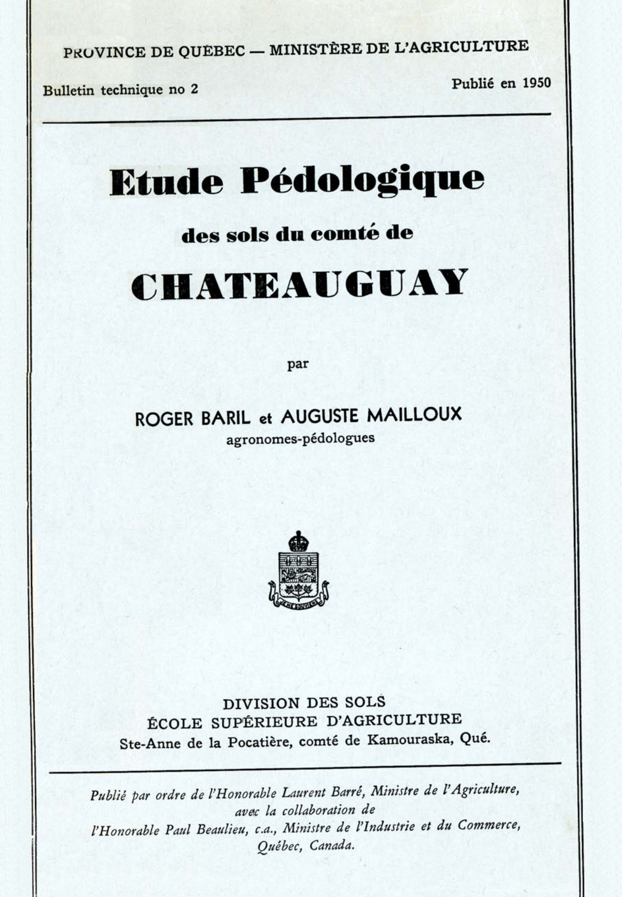
Armoiries de la Province de Québec
DIVISION DES SOLS
ÉCOLE SUPÉRIEURE D'AGRICULTURE
Ste-Anne de la Pocatière, comté de Kamouraska, Qué.
PROVINCE DE QUÉBEC — MINISTÈRE DE L'AGRICULTURE
Bulletin technique no 2Publié en 1950
Etude Pédologique
des sols du comté de
CHATEAUGUAY
par
ROGER BARIL et AUGUSTE MAILLOUX
agronomes-pédologues
DIVISION DES SOLS
ÉCOLE SUPÉRIEURE D'AGRICULTURE
Ste-Anne de la Pocatière, comté de Kamouraska, Qué.
Publié par ordre de l'Honorable Laurent Barré, Ministre de l'Agriculture,
avec la collaboration de
l'Honorable Paul Beaulieu, c.a., Ministre de l'Industrie et du Commerce,
Québec, Canada.
Cette publication est une contribution
de la DIVISION DES SOLS
AUGUSTE SCOTT, agronome
Chef
Service de la Grande Culture André Auger, agronome
Directeur
REMERCIEMENTS
Les auteurs se font un devoir de remercier tous ceux qui ont collaboré à ces études pédologiques.
Mention doit être faite tout d'abord du Gouvernement de la Province de Québec qui, par l'entremise de ses ministères de l'agriculture et du commerce, a fourni les fonds nécessaires, soit à la poursuite des travaux sur le terrain et au laboratoire, soit à la publication de ce rapport et des cartes qui l'accompagnent; aux autorités de l'Ecole Supérieure d'Agriculture qui ont mis des locaux à notre disposition.
L'un des auteurs, Roger Baril, tient à remercier les autorités du ministère fédéral de l'agriculture, particulièrement le Dr. P. O. Ripley, qui lui ont permis de consacrer tout le temps nécessaire à cette publication.
Dans ce témoignage de reconnaissance, une pensée toute spéciale va tout naturellement aux représentants immédiats de ces divers ministères: A MM. André Auger et Epiphane Thériault sous la direction desquels les travaux ont débuté au mois de juin 1943. A M. Auguste Scott, qui, depuis 1945, a assumé la direction de la division des sols, pour ses conseils précieux et ses remarques judicieuses durant la préparation de cette étude, ainsi que pour ses multiples pas et démarches auprès des ministères concernés, allégeant ainsi d'autant notre tâche.
Nous sommes également reconnaissants au Rév. Père Léo-G. Morin, géologue, pour les précisions apportées à la géologie de la région au cours de ses nombreuses visites.
Nos remerciements seraient incomplets si nous n'ajoutions à cette liste le nom de nos confrères ou amis techniciens qui directement ou indirectement ont facilité notre tâche: M. P. C. Stobbe qui, par ses visites sur le terrain, nous a fait profiter de ses vastes connaissances techniques; le docteur Gérard Bourbeau qui a participé au travail de classification et qui a bien voulu nous apporter des commentaires utiles dans la préparation de cette partie du texte qui traite des bases échangeables; M. Lucien Choinière, agronome, qui, assisté de M. Raymond Tourchot, a effectué les analyses des éléments échangeables; MM. Jean Anctil et Robert Cloutier, chimistes, qui, assistés de M. L. O. Tourchot ont fait les analyses globales et autres qui figurent à la fin du rapport; M. Ernest Pageau, agronome, pour sa bienveillante collaboration dans la compilation des statistiques; MM. Léonard Laplante, Gérard Godbout et Armand Thériault, agronomes, qui se sont vivement intéressés à la classification des sols du comté; MM. N. April, G. Ampleman, L. J. Boulet, agronomes, qui nous ont fourni des indications précieuses sur l'agriculture du comté; M. Bertrand Rochefort, agronome, un ouvrier de la dernière heure, qui à titre de spécialiste en sols au ministère fédéral de l'Agriculture, nous a prêté un concours extrêmement utile dans la rédaction et la revision finale du texte et des cartes des sols.
Enfin, nous ne voudrions pas passer sous silence M. Henri Talbot, chef du service de cartographie au ministère de l'industrie et du commerce pour les magnifiques reproductions des cartes contenues dans ce rapport.
INTRODUCTION
D'après le savant Erhart « la pédologie est la science qui traite de la genèse des sols dans les milieux naturels les plus variés du globe. Elle a pour objet l'étude comparative de sols "in situ"; ce qui implique la détermination de la nature et du rôle des divers agents ou facteurs qui ont présidé à leur formation. »
L'influence relative de ces divers facteurs d'évolution se traduit par des différences dans les caractéristiques physiques, chimiques et biologiques des sols.
L'interprétation de ces dernières nous permet de grouper les sols en des unités ou individus définis, dans un système de classification. Ces unités sont représentées par des symboles, sur une carte appelée "pédologique" ou plus communément "carte des sols". Chacune de ces unités, dans le système américain que nous avons adopté, porte un nom particulier qui la désigne comme un individu défini ou une entité biologique distincte.
Telle est en résumé la nature de l'étude que nous avons faite des sols du comté de Châteauguay. Le plan d'ensemble que nous avons adopté dans la rédaction de notre travail est celui qui est généralement suivi dans la plupart des monographies ou rapports des sols déjà publiés au Canada; sauf que nous avons élargi quelque peu les cadres de certains chapitres, notamment ceux qui traitent de la genèse des sols, de l'interprétation des analyses et de la valeur agricole des sols.
Dans ce dernier chapitre en particulier, nous avons introduit le concept des "associations-types" déjà connu et utilisé en taxonomie proprement dite.
Cette cartographie des unités pédologiques (types de sols) facilite au pédologue la synthèse et l'interprétation des observations qu'il fait sur le champ. D'ores et déjà, un nom de sol comme celui de l'argile de Ste-Rosalie évoque à son esprit l'histoire et tout un ensemble de caractéristiques topographiques, physiques et chimiques de ces sols ainsi que leur signification au point de vue agricole. De plus, elle sera un guide précieux pour l'agronome, ainsi que pour toute personne désireuse de connaître la localisation, l'étendue et la valeur agricole approximative des diverses sortes de sols de la région étudiée. Pour une connaissance plus précise de la capacité de production des sols il faudrait faire des expériences au champ sur chacun de ces types de sols. C'est là que le rapport et la carte des sols prouveront leur utilité, en servant de base et de guide aux recherches. En outre, les résultats de ces recherches elles-mêmes ne demeureront pas d'un intérêt purement local; en effet, ces résultats étant pour un type de sol déterminé, ils pourront être appliqués, dans certaines limites climatiques, à toutes les régions où la présence de ce type de sol est indiquée.
Enfin, ajoutons que depuis un grand nombre d'années, les agronomes et les professeurs de nos diverses facultés d'enseignement déplorent le manque d'informations et de connaissances sur nos sols. Nous espérons que cette modeste contribution ajoutée aux autres, répondra en partie à leur désir et leur permettra d'appuyer davantage leur enseignement ou leurs conseils sur des exemples concrets choisis dans la province et non pas uniquement dans les milieux étrangers où les conditions environnantes sont parfois fort différentes de celles qui prévalent au pays de Québec.
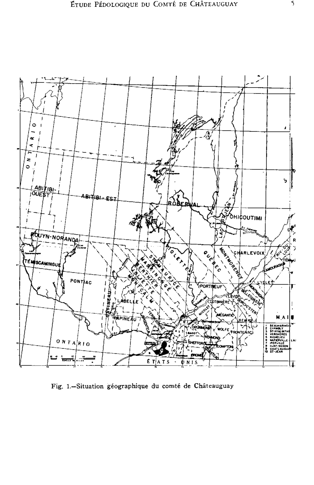
Fig. 1.—Situation géographique du comté de Châteauguay
I – Description générale du comté
Situation et superficie
Les divisions municipales
La population, ses origines ethniques
L'histoire
Les transports et les marchés
L'agriculture actuelle
II – Données géologiques et géomorphologiques
Généralités
Relief général de la région
Histoire géologique du comté
Distribution et caractères pétrographiques des formations
Unités géopédologiques LA PLAINE Tills glaciaires Alluvions Dépôts glacio-marins et fluvio-glaciaires Dépôts paludéens LES TERRASSES CHAMPLAIN
III – Morphologie et genèse des sols
Sols zonaux, intrazonaux et azonaux
Le climat
La végétation
La topographie
Roche-mère
L'âge du sol
L'homme
IV – Classification et description des sols
Méthodes de travail et système de classification utilisés
Légende des sols
SOLS SUR ALLUVIONS FLUVIATILES Limon fin argileux d'Ormstown Argile limoneuse d'Howick
SOLS DÉRIVÉS DE SÉDIMENTS CHAMPLAIN Gravier et gravier sablo-caillouteux de Franklin Sables de St-Amable
ÉTUDE PÉDOLOGIQUE DU COMTÉ DE CHÂTEAUGUAY
Sable de Sorel
Sable et limon de St-Jude
Argile de Rideau
Argile de Ste-Rosalie
Argile sableuse de Ste-Rosalie
Argile de St-Urbain
Argile limoneuse de St-Urbain
Limon fin argileux de St-Urbain
Limon fin argileux de Châteauguay
Limon fin argileux de St-Blaise
Limon sableux de St-Damase
Limon de St-Damase
Sable de Botreaux
SOLS DÉRIVÉS DE TILL
Limon argilo-graveleux caillouteux de St-Bernard
Limon gravelo-caillouteux de St-Bernard, phase rocheuse
Limon sablo-graveleux caillouteux de Norton
Limon sablo-graveleux caillouteux de Norton, phase rocheuse
Limon sablo-graveleux caillouteux de Perrot
SOLS DÉRIVÉS DE DÉPÔTS FLUVIO-GLACIAIRES ET
GLACIO-MARINS
Limon sablo-argileux et gravelo-caillouteux de Ste-Philomène
Gravier sableux de Grande Ligne
Gravier sableux de Grande Ligne – phase rocheuse
LES SOLS ORGANIQUES
Les sols tourbeux
Les sols semi-tourbeux
LES SOLS DIVERS
Sols ravinés
Sols lithosoliques ou squelettiques
Sols alluvionnaires
Affleurements rocheux, marais, et terrains humides
V – Utilisation et valeur agricole des sols
Sols de la catégorie I
Sols de la catégorie II
Sols de la catégorie III
Sols de la catégorie IV
Sols de la catégorie V
VI — Méthodes d'analyse des sols
VII — Données analytiques des sols
La réaction ou pH des sols
La constitution physique des sols
La composition chimique des sols
Dosage des cations échangeables
Bibliographie
Glossaire
Tableau des analyses
Cartes (en appendice)
CHAPITRE I
DESCRIPTION GÉNÉRALE DU COMTÉ
SITUATION ET SUPERFICIE.
Le comté de Châteauguay est situé sur la rive sud du Saint-Laurent et fait partie de la plaine de Montréal. Il est borné au nord et nord-est par le lac St-Louis et le comté de Laprairie, à l'est par le comté de Napierville; au nord et au nord-ouest par le comté de Beauharnois; au sud, sud-est et sud-ouest par le comté de Huntingdon. L'île St-Bernard et les petites îles environnantes occupent la partie la plus septentrionale du comté. Ses limites nord sont à cinq milles environ de Montréal; celles du sud se trouvent à 45 milles approximativement.
Le comté de Châteauguay affecte une forme très irrégulière. Celle-ci nous empêche de le délimiter avec précision à l'aide des coordonnées géographiques. Contentons-nous de mentionner que les points les plus extrêmes du comté à l'ouest et à l'est correspondent respectivement aux méridiens 74°08' et 73°41' et que ceux du nord et du sud coïncident respectivement avec les parallèles 45°02' et 45°24'.
Le comté mesure environ 20 milles de longueur sur 12 milles de largeur, si l'on exclut les bandes de terre qui pointent dans les comtés limitrophes. Sa superficie totale est de 265 milles carrés, soit une étendue de 169,000 acres.
Le village de Ste-Martine, sis sur les bords de la rivière Châteauguay, est le chef-lieu du comté.
LES DIVISIONS MUNICIPALES.
Le comté de Châteauguay compte 2 municipalités de ville, 10 municipalités de paroisse et 3 municipalités de village. Le nom, la date d'érection et les chiffres de la population apparaissent pour chacune d'elles dans le tableau suivant:
TABLEAU 1. — LES DIVISIONS MUNICIPALES DU COMTÉ DE CHÂTEAUGUAY
Municipalités
Date d'érection
Population
De ville:
Châteauguay
1912
1,425
De Léry
1914
816
De paroisse:
St-Joachim-de-Châteauguay
1846
992
Ste-Philomène
1843
1,118
Ste-Martine-de-Beauharnois
1835
843
Très St-Sacrement d'Howick
1885
1,261
St-Paul-de-Châteauguay
1937
880
St-Urbain-Premier
1949
924
Ste-Malachie-d'Ormstown
1858
1,620
St-Antoine-Abbé (partie N.-est seulement)
1860
374
St-Jean-Chrysostôme-de-Russeltown
1858
1,220
Ste-Clothilde
1885
943
De village:
Ormstown
1889
887
Howick
1915
484
St-Chrysostôme
1905
656
LA POPULATION, SES ORIGINES ETHNIQUES.
La population totale, en 1941, était de 14,443 âmes. La superficie du comté étant de 265 milles carrés, cela donne une densité de population de 55 personnes au mille carré. Elle est en majorité canadienne-française et de religion catholique. On compte aussi quelques milliers d'habitants d'origines écossaise, anglaise et irlandaise. Le tableau suivant en donne la composition ethnique à toutes les décennies, depuis 1861.
TABLEAU 2. — POPULATION ET COMPOSITION ETHNIQUE DU COMTÉ DE CHÂTEAUGUAY DEPUIS 1861
Année
Population totale
Anglais
Irlandais
Écossais
Français
1861
17,837
129
737
711
12,293
1871
16,166
385
1,937
2,496
11,451
1881
14,393
324
1,702
2,404
9,908
1891
13,864
—
—
—
—
1901
13,583
576
1,206
2,688
9,415
1911
13,322
592
924
2,125
9,607
1921
13,557
600
795
1,937
10,151
1931
13,125
630
735
1,757
9,837
1941
14,443
1,110
693
1,421
11,088
Ce tableau nous fait voir que la population du comté n'a guère augmentée depuis 1861; au contraire, il y a eu une diminution de 3,394 âmes, soit de 19% environ. Les deux seules décennies qui ont enregistré une augmentation sur leurs précédentes sont celles de 1921 et de 1941. L'augmentation de la population de cette dernière a été particulièrement accusée; elle est due, sans doute, à la période de guerre qui, comme on le sait, a donné lieu à de grands déplacements de notre population.
La majorité de la population est essentiellement rurale. En 1941, l'on comptait 1,500 cultivateurs environ, ce qui fait une population rurale de 10,175 âmes, soit 70% de la population totale. En y ajoutant celle des villages incorporés, dont la population est plus rurale qu'urbaine, on obtient le chiffre de 12,202, soit 84% de la population totale. Le tableau suivant nous donne les populations totale et rurale des trois dernières décennies.
TABLEAU 3. — LES POPULATIONS TOTALE ET RURALE DU COMTÉ DE CHÂTEAUGUAY
Année
Population totale
Population rurale
Différence
1921
13,557
10,198
3,359
1931
13,125
9,548
3,577
1941
14,443
10,175
4,268
L'HISTOIRE
L'histoire du comté de Châteauguay, qui est celle aussi de la plaine de Montréal à laquelle elle est intimement liée, débute avec les pionniers français.
Cependant, comme le mentionne M. L'abbé Lionel Groulx (1913) dans son étude sur Salaberry-de-Valleyfield: "nous ne savons rien, ou à peu près, du passage des Blancs dans notre plaine aux premiers temps de la colonie". A l'arrivée de ceux-ci, rapporte Blanchard (1939): "la place était nette pour la colonisation. La bourgade indienne visitée par Cartier à Hochelaga, sur l'emplacement de Montréal, s'était évanouie, 60 ans plus tard. Ces sociétés indigènes fort instables semblaient n'avoir fait que tourbillonner à travers la plaine sans réussir à y asseoir un établissement définitif. Le seul témoignage qu'on ait gardé de leur passage est la découverte d'un cimetière dans l'île des Soeurs sur le lac St-Louis, près de Châteauguay; d'autres trouvailles ont été effectuées à proximité immédiate, vers le confluent de la rivière Châteauguay et du fleuve, des flèches de pierre, des tomahawks, des débris de poterie, le tout sans aucune trace d'outillage métallique, ce qui indique une antiquité assez reculée".
ÉTUDE PÉDOLOGIQUE DU COMTÉ DE CHÂTEAUGUAY
On croit généralement que les monticules ou "éminences" de terre et de pierres situés à l'extrémité sud-ouest de l'île St-Bernard et en face sur le littoral, auraient été édifiés par les sauvages. Ringuet (1943) fait aussi allusion à cas peu-plades connues sous le nom de "Mound-builders". Une visite des lieux nous invite à apporter ici quelques précisions. Tout d'abord, ces éminences ou monticules sont, comme il sera expliqué au chapitre de la géologie, des dépôts glacio-marins. La présence de coquillage et la disposition régulière des lits de sables et de gravier attestent une origine géologique plutôt qu'humaine. Les sauvages, croyons-nous, auraient profité de ces accidents naturels pour y édifier des "tertres funéraires" ou "Mound" (voir photo 9). Sur la partie supérieure de l'une de ces éminences, nous avons remarqué une assez forte proportion d'argile, qui y aurait été sans doute apportée par les indigènes, afin de cimenter entre elles les particules de sable et de gravier.
Les origines de Châteauguay, comme seigneurie, et même comme comté et paroisse, remontent à la fin du dix-septième siècle. D'après l'Histoire des Socurs Grises (1933), "le titre qui ouvre les archives de Châteauguay, c'est un acte, en date du 29 septembre 1673, par lequel le gouverneur, comte de Frontenac, au nom du roi de France qu'il représente au Canada, donne, concède et accorde au sieur Charles Le Moyne, écuyer, seigneur de Longueuil, deux lieues de terre de front, à commencer deux arpents au-dessous de la rivière du Loup (aujourd'hui la rivière Châteauguay), en montant dans le lac Saint-Louis du côté sud, et de profondeur trois lieues, ensemble 1 île St-Bernard qui est à l'embouchure de la rivière."
Cette nouvelle seigneurie, d'où la rivière, la paroisse et le comté tirent leurs noms, porta le joli vocable français de Châteauguay. Au dire de M. l'abbé Elie Auclair (1935), "si l'on en croit l'historien et sulpicien Faillon, M. de Longueuil, qui était né en France, aurait ainsi dénommé Châteauguay, sa seigneurie, en souvenir d'une commune de France de ce nom, sise aujourd'hui dans le département du Puy-de-Dôme, sa région natale. Mais, d'après Daniel, l'historien des grandes familles au Canada, lui aussi sulpicien, l'origine de ce nom serait autre. M. de Longueuil, explique-t-il, ayant construit à l'entrée de sa seigneurie, dans l'île de St-Bernard, un magasin fortifié appelé le Chasteau et le fermier ou chargé d'affaires de la terre seigneuriale et du Chasteau s'étant trouvé être un nommé Gué ou Guay, sous lequel l'endroit est désigné dans les actes publics de l'époque, se serait dans la suite popularisé, et, modifié ou changé en celui de Châteauguay."
La seigneurie de Châteauguay demeura peu habitée et, même après la conclusion d'une paix avec les Iroquois, par un traité signé à Montréal en 1701, l'établissement était peu vigoureux. Les Robutel de la Noue qui furent en possession du fief seigneurial de 1706 à 1765, ne firent pas plus que les De Longueuil pour coloniser et mettre en valeur cette étendue de terre. Si bien qu'en 1724, soit environ soixante ans après l'établissement de la seigneurie, celle-ci ne compte que 26 censitaires. Cependant, il y a tout lieu de croire que la seigneurie comptait plus d'habitants que cela en 1736, puisque les Jésuites décidèrent de construire une église à Châteauguay-Bassin. Les régistres s'ouvrent pour la première fois en 1736, comme l'atteste un document, signé de la main du Père Nau, jésuite, en date du 7 janvier de la même année. De 1736 à 1777, soit jusqu'à l'arrivée du curé Dumouchel, Châteauguay demeure une mission et continuera d'être desservie par celle du Sault St-Louis.
"En 1765, la seigneurie, par l'entremise de Mère d'Youville, passe aux mains des Soeurs Grises; elles en sont demeurées jusqu'à nos jours les propriétaires. C'était au lendemain de la cession du Canada à l'Angleterre, période difficile et précaire pour les affaires et les finances. Quoiqu'il en fût, la fondatrice, par son zèle et son ardeur dans la poursuite de ses desseins, réussit à développer et à agrandir la seigneurie. Des 690 arpents de l'île, 90 à peine étaient alors en culture. A partir de l'été 1766, relate l'annaliste des Soeurs Grises, on fit des abatis et de la terre neuve."
A l'histoire féconde de la Seigneurie de Châteauguay, il convient d'ajouter celle de sa seigneurie-soeur, celle de Beauharnois, qui, elle aussi, a donné naissance au comté de Châteauguay. Cette dernière porte le nom du marquis de Beauharnois et fut instituée quelque cinquante ans après celle de Châteauguay. En 1763, le marquis
de Lotbinière, qui en était devenu le propriétaire, la vendit à une riche commerçant de Londres: Alexander Ellis. Vers 1800, l'arpenteur américain William Waller, divisa cette seigneurie en cinq parties dont chacune reçut le nom d'un des enfants de Monsieur Ellis. Les noms d'Ormstown et de Georgestown rappellent la mémoire d'Orms et de Georges Ellis, tous deux fils de M. Ellis (ou Ellice).
A partir de 1800, mentionne Blanchard (1939), “d'excellents colons du Massachusetts s'installèrent le long de la rivière Châteauguay en amont de Ste-Martine. Il est remarquable que, à l'exception des familles qui se sont fixées à Beauharnois même pour y commercer, tous ces immigrants américains, les “squatters”, comme on les appelait alors, choisissent des terres dans les parties les plus élevées afin de trouver un sol convenablement drainé; il répugne à ces immigrants de faire des travaux de drainage dans lesquels les Canadiens-Français excellent. Ils joignent au défrichement un petit trafic qui leur assure une monnaie d'échange, vendant à Montréal du bois et de la potasse qu'ils acheminent soit par la rivière Châteauguay, soit par St-Rémi ou par Laprairie.”
Au dire de R. Blanchard (1939), “cette paroisse américaine dans le sud-ouest de la plaine se clôt précocement par un échec. Les colons eurent bientôt affaire à des spéculateurs qui avaient acquis à bon compte les lots arpentés et dont les prétentions furent excessives; beaucoup se découragèrent et repartirent après 1810. Puis vinrent les événements de la guerre de 1813 dont les conséquences furent ici désastreuses.”
D'après l'abbé Elie Auclair (1935), “c'est aux bords de la rivière Châteauguay, à vingt milles du village, sur la route qui mène à Howick, à Allan's Corner, que, en octobre 1813, le colonel de Salaberry et ses trois cents voltigeurs remportèrent sur les sept mille hommes du général américain Hampton, cette fameuse victoire de Châteauguay qu'on a souvent comparée, à celle de Léonidas de Sparte, aux Thermopyles.”
Le parlement canadien voulant commémorer l'un des plus glorieux faits d'armes de notre histoire, érigea, en 1851, un monument à Allan's Corner, soit à cinq milles au sud du village de Howick.
Après cette bataille, les colons américains refusèrent de prêter le serment d'allégeance envers la couronne britannique et s'enfuirent dans l'état de New York.
A peu près au même temps, soit en 1815, des contingents des Iles Britanniques s'installent au sein des limites actuelles du comté. Ce dernier, faisait partie, avant 1854, soit du comté de Huntingdon (1792-1830), soit du comté de Beauharnois (1830-1854). Les principaux groupes écossais, déjà établis parmi les américains vers 1802, colonisent les rives de la rivière Châteauguay, de Ste-Martine à Dewittville. Ils défrichent Howick en 1833. Ormstown compte en 1830 un bon nombre de familles écossaises. A celles-ci viennent s'ajouter plusieurs familles irlandaises dont une forte proportion gagnent les hauteurs de Covey Hill et d'Hemmingford.
D'après Blanchard (1939), cet excellent stock d'émigrés, dont l'empreinte restera pourtant marquée jusqu'à nos jours, ne progressa guère après 1880, à cause de sa faible natalité et de son exode vers les centres industriels de la cité de Montréal et de sa banlieue.
En dépit de ces mouvements d'immigration britannique, l'élément français garda la supériorité numérique. Malheureusement, comme pour les autres éléments ethniques, le comté compte en 1941 moins d'habitants d'origine française qu'en 1861. L'exode d'un beau comté rural comme celui de Châteauguay porte à réfléchir. La glèbe nourricière, mise en valeur par les ancêtres au prix de labeurs et de sacrifices héroïques, serait-elle devenue ingrate? Nous ne le croyons pas. Il nous faut chercher ailleurs, en dehors des mouvements d'émigration, pour connaître les causes profondes de ce mal.
L'étude de ce problème rural, sous tous ses aspects, mériterait d'être entreprise.
ÉTUDE PÉDOLOGIQUE DU COMTÉ DE CHÂTEAUGUAY
LES TRANSPORTS ET LES MARCHES.
Les bonnes voies de communication et la présence d'un intéressant marché à proximité, sont essentielles au bon développement de l'agriculture. À ce point de vue, le comté de Châteauguay est bien doté et n'a rien à envier aux autres comtés de la Province. En effet, une très bonne route en béton bitumineux traverse le comté, en direction nord-sud, dans presque toute sa longueur ; c'est la route nationale numéro 4, reliant Malone (États-Unis) à Montréal, en passant par les villages suivants : Ormstown, Howick, Ste-Martine, Ste-Philomène et les abords du village de Châteauguay. Cette route compte deux bifurcations principales : la première, aux abords du village de Châteauguay, conduit vers Beauharnois et Valleyfield; la deuxième à l'entrée du village d'Howick, se dirige vers les villages de St-Chrysostôme et de Ste-Clothilde. De plus, le comté est sillonné de bonnes routes secondaires, faites de béton ou de gravier. Les routes, fait intéressant à mentionner, sont carrossables en hiver comme en été.
Plusieurs lignes de chemin de fer traversent le comté. Il y a la ligne Montréal-Champlain qui suit à peu près parallèlement la route nationale numéro 4, avec un embranchement à Ste-Martine en direction de Beauharnois. Une deuxième voie ferrée, celle du Canada Atlantic, passant par Holton, Aubrey et Howick, se dirige vers Beauharnois.
Il y a aussi les services d'autobus. L'un relie les paroisses de St-Chrysostôme et de Ste-Clothilde à Montréal, en passant par le comté de Laprairie; l'autre, le village de Châteauguay à Montréal.
Environ la moitié des cultivateurs du comté sont établis dans un rayon de quinze milles de distance du grand marché métropolitain. Comme nous l'avons dit précédemment, les limites les plus rapprochées du comté sont à quelque cinq milles de Montréal.
La zone des sols humifères de Ste-Clothilde est située à vingt-cinq milles environ de la métropole. Il serait sans doute à l'avantage du développement horticole de cette zone, d'ajouter dans ce secteur une ou plusieurs bonnes routes secondaires.
Étant aussi privilégiés que cela aux points de vue des communications et des marchés, il y a lieu de se demander si les cultivateurs du comté de Châteauguay ont pleinement tiré parti de leur situation géographique qui est des plus avantageuses.
L'AGRICULTURE ACTUELLE.
Pour traiter de cette question, nous avons cru bon de nous inspirer de la monographie de Monsieur Firmin Létourneau (1946) sur le comté de Nicolet.
Les agriculteurs du comté de Châteauguay, dans l'ensemble, pratiquent le système de culture mixte. Ce système, qui prévaut d'ailleurs dans tout l'Est du Canada, permet une meilleure utilisation du travail et du capital. Un certain nombre d'agriculteurs ont développé quelques cultures spéciales, telles celles des pommes, des petits fruits, du lin et des produits maraîchers. La culture de ces derniers, dans le secteur des "terres noires" de Ste-Clothilde, n'intéresse qu'un petit nombre de cultivateurs.
D'après le recensement de 1941, le comté de Châteauguay a un total de 1514 fermes environ. La grandeur moyenne de chacune est de 97 acres. Ces exploitations agricoles occupent environ 147059 acres de terre; ce qui représente à peu près 87% de la superficie totale du comté. De ces 147059 acres, 108095, soit 73.5% (72 acres en moyenne par ferme) sont défrichées et 38964 acres ne le sont pas; c'est-à-dire, sont occupées par la forêt, les prairies ou pâturages naturels et les marais. Notons que 15852 acres de la terre occupée par les fermes sont en forêt; ce qui représente une moyenne de 10 acres par ferme.
L'étendue moyenne en culture varie d'une paroisse à l'autre. Elle est plus élevée là où le sol est plus argileux et la topographie moins accidentée, comme c'est le cas des terres riveraines des rivières Noire, Châteauguay et des Anglais. Cette superficie moyenne est inférieure là où le sol est sablo-limoneux et caillouteux et la topographie variée, comme dans les paroisses de St-Antoine Abbé, de St-Chrysostôme, de
ÉTUDE PÉDOLOGIQUE DU COMTÉ DE CHÂTEAUGUAY
Ste-Clothilde et de St-Urbain. On a remarqué que les plus grandes étendues en culture, par unité de ferme, se rencontraient presqu'invariablement à une altitude inférieure à 150 pieds.
Ces 147059 acres de terre occupée constituent le fond de terre et valent $4,210 en moyenne, par exploitation. Les constructions, les troupeaux et l'outillage agricole sont évalués à environ $2,300, $1,150 et $866,00 respectivement par ferme. En tenant compte des valeurs du capital terre, construction, troupeau et outillage, chaque ferme a une valeur moyenne de $8,550. Le capital troupeau représente, en moyenne pour tout le comté, 13.5% du capital total. Ce pourcentage est certes beaucoup plus élevé sur les fermes qui s'adonnent surtout à l'élevage.
Les productions végétales.
Les productions végétales couvrent, comme il a été dit précédemment, une étendue de 108095 acres, soit 72 acres en moyenne par l'exploitation. Ces productions peuvent se diviser en récoltes principales et spéciales. Les premières comprennent: l'avoine, le foin (mil, trèfle et luzerne), les grains mélangés, l'orge, le sarrasin, le maïs fourrager et les herbes à pâturages; les secondes: la pomme de terre, le lin, les pois, les fèves, les petits fruits, les pommes et les fruits maraîchers.
Les grains et le foin donnent de bons rendements. Plusieurs cultivateurs se sont spécialisés dans la production des graines de semence et y trouvent des revenus fort intéressants. La luzerne, qui occupe seulement une superficie de 575 acres environ, vient très bien sur les côteaux calcaires, comme on peut le constater par la photo (No: 13).
La superficie des cultures, leurs étendues moyennes et les rendements moyens pour chacune d'elles, pour l'année 1940, apparaissent dans le tableau 4. Pour fins de comparaison, nous y avons inclu des données sur les étendues moyennes et sur les rendements moyens pour toute la province.
TABLEAU 4. -- SUPERFICIE ET RENDEMENTS MOYENS DES PRODUCTIONS VÉGÉTALES DANS LE COMTÉ DE CHÂTEAUGUAY PAR RAPPORT À CEUX DE LA PROVINCE
Productions végétales.
Superficie (acre)
Comté de Châteauguay
Province de Québec
Etendue moyenne par ferme. (acre)
Rendement moyen (acre)
Etendue moyenne par ferme. (acre)
Rendement moyen (acre)
Avoine
20,450
14
28.5 mi.
10.7
26.6 mi.
Orge
1,550
1
25.7 mi.
1.0
24.4 mi.
Grains mélangés
7,830
5
30.8 mi.
1.0
27.6 mi.
Mil (foin)
5,000
3
1.2 t.
–
–
Mil et trèfle
35,100
23
1.2 t.
24.0
1.4 t.
Luzerne
588
–
1.9 t.
–
2.5 t.
Maïs fourrager
2,900
2
10.5 t.
–
9.0 t.
Sarrasin
1,550
1
18.4 mi.
–
21.0 mi.
Pâturages en rotation.
23,000
15
–
–
–
Pomme de terre
2,050
1
149.0 mi.
0.9
146.0 mi.
Lin (filasse)
742
–
550.0 lbs.
–
–
Pois (secs)
370
–
17.0 mi.
–
16.1 mi.
Fèves
159
–
18.0 mi.
–
16.6 mi.
Petits fruits
137
–
–
–
–
Vergers
1,266
–
–
–
–
Cultures maraîchères.
840
–
–
–
–
Cultures diverses
4,000
3
–
–
–
ÉTUDE PÉDOLOGIQUE DU COMTÉ DE CHÂTEAUGUAY
Comme on peut le constater par le tableau 4, certaines productions végétales spéciales donnent de bons rendements. Quant aux cultures maraîchères, pour le peu d'informations que nous en avons, nous pouvons dire qu'elles sont assez bien développées dans les paroisses de St-Urbain, de Ste-Philomène et de Châteauguay.
Grâce aux travaux de drainage qu'a entrepris le gouvernement provincial, dans le secteur des "terres noires" de la paroisse de Ste-Clothilde, il sera désormais possible d'y accroître les étendues en culture maraîchère.
La pomiculture, particulièrement développée dans les paroisses de Châteauguay et de Ste-Philomène, a fait de grands progrès au cours de la dernière décennie. En 1941, on comptait 84,000 pommiers dont 52,000 étaient âgés de moins de 10 ans. Sur un total de 275 pomiculteurs, 175 suivent un programme d'arrosage. Il y a aussi quelques grands vergers commerciaux, qui groupent quelque 8,000 arbres, soit environ 10% du nombre total, des pommiers du comté. La culture des prunes, des cerises, et des pêches comprend en tout quelque 2,000 arbres.
La culture du lin que l'on a développée sur les terres argileuses ou limo-argileuses des paroisses de St-Urbain, de Ste-Martine, de Ste-Philomène et de Châteauguay, donne, dans les années normales, de très bons rendements. Cette culture s'est considérablement développée au cours de la dernière guerre; les chiffres rapportés précédemment, en ce qui concerne son étendue pour l'année 1940, sont probablement inférieurs à ceux des années subséquentes.
La vente des grains, celle de l'avoine en particulier, a donné en 1940 la somme de $31,00 en moyenne par ferme. Celle des pois et des fèves a rapporté en moyenne $8,00 par ferme.
Les productions fourragères, la pomme de terre, le lin, les racines et autres cultures, en 1940, ont rapporté la somme de $86,00 en moyenne par ferme; le lin et la pomme de terre, à eux seuls représentent plus de 80% de ce revenu.
La valeur des produits maraîchers récoltés en 1940 était de $57,000.; celle des pommes, de $63,000. Répartie entre les 275 pomiculteurs, cette dernière somme donne la moyenne de $229,00 environ par verger.
La vente des petits fruits: fraises, framboises, bleuets, mûres, etc., y compris ceux cueillis à l'état sauvage, a rapporté en 1940 la somme de $17,00 environ, par ferme. Cette récolte se fait surtout dans les paroisses de Châteauguay et de Ste-Philomène.
Aux productions végétales spéciales, on pourrait ajouter celle des boisés de ferme: les belles érablières, malheureusement trop pacagées, forment un total d'environ 183,000 arbres; les produits de l'érable ont rapporté en moyenne $75,00 à chacun des 300 producteurs du comté. L'exploitation forestière se résume à celle des boisés de ferme; ceux-ci fournissent du bois de chauffage et un peu de bois de commerce; ils ont rapporté, en moyenne, $10,00 par ferme.
Les productions animales.
Lors du recensement de 1941, dans le comté de Châteauguay, on comptait: 4,985 chevaux, soit près de 3 chevaux par ferme, 14,000 vaches laitières, soit près de 9 par ferme, 12,000 autres bovins: génisses, taures et bouvillons, à savoir, 8 par exploitation, 11,200 porcs, c'est-à-dire environ 7 par ferme, 1,170 moutons, soit un peu moins d'une tête par ferme; enfin, un total de 160.000 volailles, soit une moyenne de 107 par cultivateur.
ÉTUDE PÉDOLOGIQUE DU COMTÉ DE CHÂTEAUGUAY
L'élevage du cheval est encore en honneur chez plusieurs cultivateurs. En 1941, sur près de 1500 fermes, il y avait quelque 97 chevaux purs sang. En 1940, il s'est élevé près de 391 poulains de race belge et percheronne.
Le comté possède, dans l'ensemble, d'excellents troupeaux laitiers. En 1941, on relève 3,195 bovins purs sang, appartenant aux races Ayrshire et Holstein. Un bon nombre de ces sujets sont vendus pour fins d'élevage. La réputation des éleveurs du comté de Châteauguay n'est plus à faire et les prix qu'ils obtiennent pour leurs sujets purs sang sont très élevés.
La production moyenne des vaches, en 1940, était de 5,450 livres de lait par tête. Une bonne partie de cette production, soit près de 50% est livrée à Montréal sous forme de lait en nature ou de crème; une autre partie, soit 18%, est absorbée par les usines de lait condensé; ce qui reste est transformé en beurre ou en fromage. Ces deux derniers produits ont atteint en 1941 la valeur de $300,000.00. Les produits laitiers vendus ou consommés sur la ferme, en 1940, ont été estimés à $700,00 en moyenne par exploitation; comme il y a une moyenne de 9 vaches par ferme, ceci fait un revenu de près de $77,00 par tête de bétail. On peut donc considérer l'industrie laitière comme la principale source de revenu des cultivateurs du comté.
La vente des bovins: taureaux, bouvillons, vaches laitières, a rapporté en moyenne à chaque cultivateur la somme de $142,00.
L'élevage du porc à bacon a rapporté la somme de $131,00 par ferme.
L'élevage du mouton n'est pas très en honneur: la vente des agneaux a donné une moyenne de $2,00 seulement à chaque cultivateur.
Chaque cultivateur retire en moyenne $100,00 de la vente de ses produits avicoles; et environ $6,00 de celle de ses produits apicoles.
Le revenu-argent des cultivateurs.
Nous nous garderons d'établir le revenu-argent des cultivateurs du comté de Châteauguay à l'aide des données précédentes: celles-ci sont incomplètes et ne reflètent tentes les conditions agricoles que d'une année seulement, celle de 1940. Cependant nous pouvons dire que les principales sources de revenu, sont, par ordre d'importance: les produits laitiers, les bovins de boucherie, les porcs et les volailles; viennent ensuite les produits forestiers et ceux de l'acériculture.
Les revenus spéciaux, c'est-à-dire, ceux qui ne concernent pas la majorité des cultivateurs, proviennent, par ordre d'importance, de la vente des chevaux et des bovins d'élevage, des fruits, du lin, de la pomme de terre, des produits maraîchers et du miel.
D'après les statistiques de 1940, le revenu brut, qui comprend la valeur des produits vendus ou destinés à la vente en dehors de la ferme, la valeur estimée de tous les produits consommés sur la ferme, ainsi que les recettes provenant de sources extérieures se chiffrent à $1,515.00 en moyenne par exploitation agricole. Les dépenses de la ferme: achats d'aliments pour les animaux, de machines aratoires, d'engrais et de matériaux de construction, ainsi que les déboursés pour les réparations et l'entretien de l'outillage agricole, les honoraires du vétérinaire, les impôts fonciers et la main-d'oeuvre, etc., s'élèvent à $739.00 approximativement par ferme.
La différence entre les revenus bruts et les dépenses est de $776.00 par cultivateur. Cet excédent n'est pas très élevé; il serait intéressant, à l'aide de données plus complètes, de le calculer pour une longue période d'années et pour chacune des paroisses du comté, comme l'a fait M. Firmin Létourneau dans ses monographies.
CHAPITRE II
DONNÉES GÉOLOGIQUES ET GÉOMORPHOLOGIQUES
GÉNÉRALITÉS
Dans une zone climatique donnée, le sol étant en définitive le produit des transformations subies par les couches les plus superficielles de la lithosphère, dépend autant de la nature et de la topographie du terrain que des conditions climatiques environnantes.
Il est donc important d'étudier son origine géologique, sa nature minéralo-pétrographique et son modelé topographique, qui ont influencé son évolution.
Par quel mécanisme les assises rocheuses ont-elles pu se réduire en particules terreuses ? Quels sont les divers modes de mise en place des dépôts superficiels ? Quelle part ces matériaux géologiques et leurs positions topographiques prennent-ils dans l'évolution des sols ? Pour répondre à ces questions, il nous faut étendre en premier lieu nos connaissances géologiques et géomorphologiques (étude des formes du terrain et des causes qui les engendrent).
Tous les dépôts meubles formés, soit par les agents atmosphériques (variations de température, alternances de gels et dégels, variations de la teneur en eau, eaux pluviales, etc.), soit par les agents géologiques (les eaux courantes, les glaciers, etc.) ou les agents organiques, constituent les matériaux ou roches-mères qui ont donné naissance aux sols.
La roche-mère est dite résiduelle ou autochtone quand elle tire son origine de la décomposition de l'assise géologique rocheuse sous-jacente; elle est allochtone si elle est formée de produits de transports, ceux-ci reposant en discordance stratigraphique sur un substratum consolidé (rocheux) ou non consolidé (dépôts meubles) v.g.: un affleurement de dolomie de Beekmantown se décomposant sur place donne un sol résiduel; un manteau d'argile ou de till recouvrant les strates de grès de Potsdam constitue une roche-mère allochtone. Dans ce dernier cas, le grès de Potsdam n'a qu'une influence indirecte dans la formation du sol.
Notons cependant, comme nous le verrons plus loin, que les matériaux de transports (roches-mères) présentent parfois une certaine analogie pétrographique avec les formations géologiques sous-jacentes.
La roche-mère joue un rôle primordial dans l'évolution des sols. Celle-ci, en effet, par la nature et la diversité des matériaux qu'elle contient a influencé grandement les caractéristiques physiques, chimiques voire même biologiques du sol. Aussi, la nomenclature morphologique utilisée en pédologie systématique met en évidence les principales différences que peuvent présenter les séries de sols suivant le caractère de la roche-mère.
Par ailleurs, la nature de la roche-mère n'est pas seule à entrer en jeu dans la différenciation des sols; la position topographique qu'elle occupe influence également la pédogenèse ou évolution du sol.
ÉTUDE PÉDOLOGIQUE DU COMTÉ DE CHÂTEAUGUAY
En effet, les agents externes ou "forces superficielles de remaniements" (pluie, eau ruisselante, vent, etc.,) sont subordonnés dans une large mesure par la topographie du terrain qui à son tour conditionne la répartition pédologique des sols. Il existe, en effet, une différence marquée entre les sols situés sur le sommet des coteaux et ceux qui en occupent les versants ou les pentes inférieures.
Le relief et son modelé, l'inclinaison de la pente modifient ou même entravent l'évolution du sol en ce sens qu'ils influent sur la quantité d'eau pénétrant dans le sol et par conséquent règlent les processus d'éluviation.
Les phénomènes de lessivage éluvial prédominent généralement sur les élévations, tandis que les phénomènes d'accumulation dominent dans les dépressions. Les pentes intermédiaires montrent souvent des processus de lessivage oblique (seepage).
L'influence du micro-relief se fait sentir parfois sur de très courtes distances. Il se traduit sur le terrain par de légers renflements du sol ou par de très faibles dépressions. Ces légères ondulations ou ridements de la surface se manifestent par une succession ou alternance de sols, de teinte foncée dans les sillons ou de teinte claire sur le dos des crêtes. Bref, dès que l'un ou l'autre de ces facteurs d'évolution, roche-mère ou topographie varient, le sol acquiert des caractéristiques différentes de profil et le paysage revêt aussi des aspects sinon distincts du moins modifiés. De ces constatations origine l'idée moderne du catena, c'est-à-dire une chaîne ou séquence de profils de sols liés entre eux par une roche-mère pétrographiquement semblable et changeant sous l'influence des facteurs topographiques (pentes et conditions de drainage).
Non seulement on doit étudier le relief actuel mais il est aussi utile de savoir comment ce relief a évolué à travers les âges. Cette reconstitution de l'enchaînement des phénomènes du passé nous expliquera la physionomie actuelle de la région et nous éclairera sur l'origine et la nature des sols. Nous décrirons donc dans ce chapitre le relief général de la région, puis à la lumière de la géologie nous remonterons la chaîne des causes qui ont engendré le modelé actuel. Nous étudierons ensuite les principaux agents qui sont intervenus pour édifier les matériaux ou dépôts superficiels dont sont issus les sols. Nous nous préoccuperons enfin de classer ces dépôts en différents cadres ou compartiments naturels qui, avec l'influence combinée du climat et de la végétation, constitueront le milieu dans lequel se développeront les sols et détermineront le sens de leur évolution.
RELIEF GÉNÉRAL DE LA RÉGION
Pour mieux comprendre, avons-nous dit, la nature et la répartition des sols du comté de Châteauguay, il convient d'abord d'étudier dans les grandes lignes les principaux traits de son relief et ses particularités topographiques (Mailloux. A., Baril. R., 1944).
ÉTUDE PÉDOLOGIQUE DU COMTÉ DE CHÂTEAUGUAY
Au point de vue physiographique, le comté de Châteauguay est entièrement compris dans la Plaine de Montréal, région naturelle qui doit son individualité et son aspect particulier à un ensemble de facteurs géologiques et physiques (relief, climat, nature et composition des sols).
L'altitude moyenne de la région se situe entre les cotes 100 et 250 pieds. Elle s'échelonne, cependant, rapidement vers St-Antoine-Abbé entre 300 et 400 pieds, pour atteindre à Maritana sur les pentes de la colline de Covey, des altitudes de 500 et de 575 pieds. La courbe de niveau s'abaisse à près de 75 pieds au delta de la Châteauguay et aux abords du lac St-Louis. A part une étroite zone en contre-bas de la colline de Covey, la pente du terrain s'incline très faiblement vers la rivière Châteauguay comme en témoigne la lenteur de ses affluents à évacuer leurs alluvions.
Exception faite des surfaces absolument planes qui s'étendent le long de la rivière Châteauguay, de la rivière des Anglais et de la rivière Noire qui promène ses méandres entre l'Artifice et St-Chrysostôme, dans un bassin d'argile horizontal, le reste de la région offre l'aspect d'une plaine ondulée de croupes surbaissées dont l'ensemble s'oriente du sud-ouest vers le nord-est.
Examinons plus en détail le dessin et l'allure de cette topographie qui accidente la région.
Dès les abords de Châteauguay, la plaine se boursoufle en molles ondulations qui se prolongent vers Woodlands. Elles réapparaissent aux environs de Ste-Philomène où ces protubérances sont cernées par des étendues planes argileuses. De la "montée" St-Jean-Baptiste vers Ste-Martine on peut voir, au sud de la route nationale, émergeant de la plaine unie, un long coteau qui s'allonge sans interruption sur plusieurs milles de distance.
A partir de St-Urbain, au sud de Ste-Martine, les ondulations se renforcent et prennent de plus en plus d'ampleur en direction de Ste-Clothilde, de St-Chrysostôme et de Russeltown, de là vers St-Antoine-Abbé et Ormstown. Si on excepte les larges cuvettes à tourbière situées en arrière de Ste-Clothilde et de St-Chrysostôme, le bassin d'argile de la Rivière Noire, toute cette région est parsemée de bosselures et de dépressions plus ou moins larges. A quelque 6 milles à l'ouest de St-Chrysostôme, une lourde bosse se dresse à l'horizon: c'est la colline de Covey, "la montagne" selon l'expression populaire, flanquée de terrasses gravelo-caillouteuses dont les paliers, garnis de vergers, s'étagent à l'extrémité sud-ouest du comté, aux environs de Stockwell, de Maritana, vers St-Antoine-Abbé aux limites de Huntingdon.
Entre Cairnside et l'Artifice s'étend un plateau bas où le roc affleure en grandes dalles plates, parfois faiblement creusées en forme de vasques marécageuses, parfois légèrement bossuées de placages morainiques. Ce plateau, désigné sous le nom de "Rocher" par les habitants de la région, se relève lentement vers le comté de Huntingdon et s'atténue, dans sa partie inférieure, pour se confondre avec la plaine vers Aubry et la rivière Châteauguay.
En résumé, l'aspect physiographique du comté présente au centre une plaine basse et horizontale qui se déploie largement le long de la rivière Châteauguay et de la rivière des Anglais, encadrée par une ligne de crêtes à parcours sinueux.
Cette vue rapide du comté de Châteauguay nous renseigne non seulement sur sa physionomie générale, mais permet de distinguer trois unités physiographiques : 1) Une plaine basse horizontale (entre 100 et 150 pieds d'altitude), 2)—Une plaine ondulée de croupes surbaissées (entre 150 et 300 pieds d'altitude), 3)—Des gradins de terrasses étagés (entre 300 et 525 pieds).
Quand et comment tout cela s'est-il formé? Quels sont les agents responsables de ce modelé? Quels sont les changements que cette région a pu subir à travers les âges? C'est à la lumière de la géologie et de la géomorphologie que nous pourrons retracer et préciser l'histoire des transformations successives auxquelles la région a été soumise au cours des diverses époques de son existence.
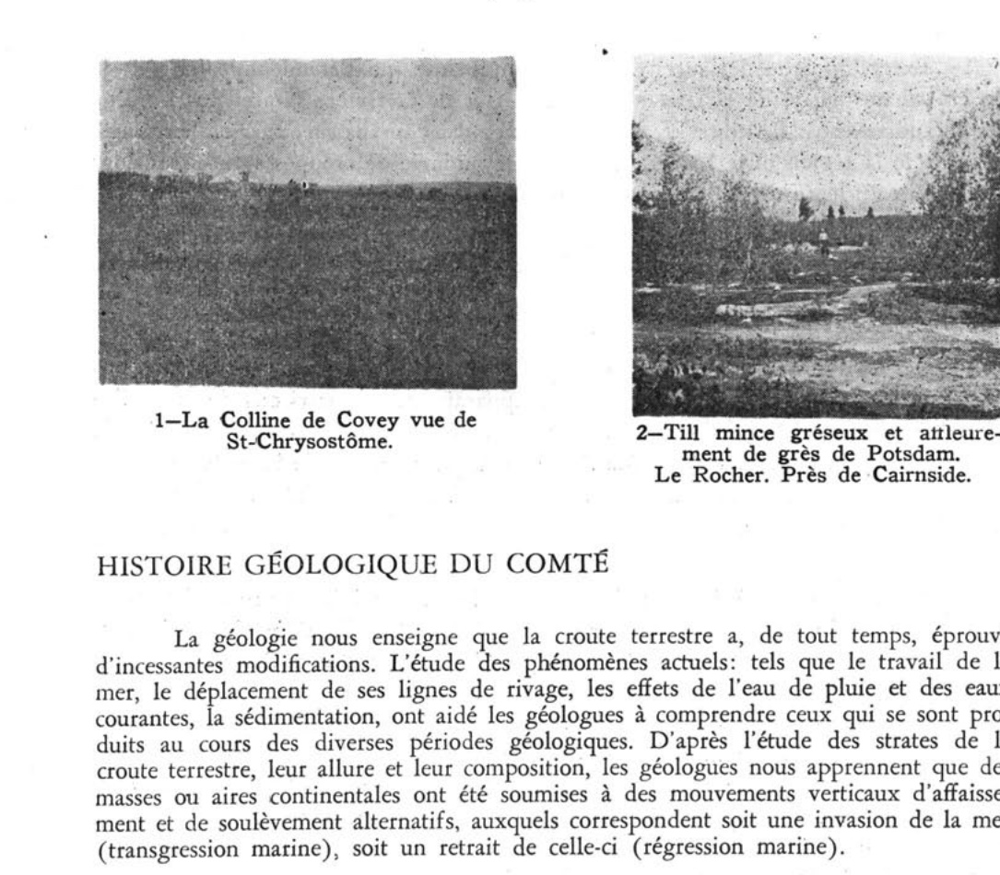
1—La Colline de Covey vue de St-Chrysostôme.
2—Till mince gréseux et attleurement de grès de Potsdam. Le Rocher. Près de Cairnside.
HISTOIRE GÉOLOGIQUE DU COMTÉ
La géologie nous enseigne que la croute terrestre a, de tout temps, éprouvé d'incessantes modifications. L'étude des phénomènes actuels : tels que le travail de la mer, le déplacement de ses lignes de rivage, les effets de l'eau de pluie et des eaux courantes, la sédimentation, ont aidé les géologues à comprendre ceux qui se sont produits au cours des diverses périodes géologiques. D'après l'étude des strates de la croute terrestre, leur allure et leur composition, ses géologues nous apprennent que des masses ou aires continentales ont été soumises à des mouvements verticaux d'affaissement et de soulèvement alternatifs, auxquels correspondent soit une invasion de la mer (transgression marine), soit un retrait de celle-ci (régression marine).
Or, la nature et la disposition des couches géologiques des Basses Terres du St-Laurent indiquent que la région fut envahie à plusieurs reprises par des mers, au sein desquelles se sont accumulés des sédiments qui constituent aujourd'hui les assises ou soubassement rocheux de la contrée.
On trouve aussi, dans les strates superposées, des êtres organisés, des restes ou fragments entiers d'animaux ou de végétaux. Ces vestiges d'êtres vivants ou fossiles fournissent aux géologues des documents précieux pour fixer l'âge relatif des couches et établir ainsi, avec le stratigraphie, une chronologie dans leur succession et distinguer un certain nombre de périodes géologiques.
Toutes ces études ont amené les géologues à retracer les divers déplacements des mers et des continents au cours des temps géologiques.
Les modifications ou changements importants survenus au cours de cette histoire ont permis d'établir un certain nombre de divisions. Les grandes modifications géologiques ayant affecté l'ensemble du globe se partagent en Eres. Les Eres se divisent en périodes, les périodes en époques, et ainsi de suite, suivant l'importance des événements survenus et leur répartition à la surface de la terre.
L'ensemble des couches d'une même époque constitue une formation à laquelle on a donné un nom de localité. Ainsi, nous avons dans la région le grès de Potsdam appartenant à la période cambrienne, et la formation Beekmantown à la période ordovicienne. Ces deux périodes appartiennent à l'ère paléozoïque (vie ancienne) ou primaire.
C'est à l'aide de ces enseignements que nous allons reconstituer brièvement les principaux événements qui se sont succédés dans l'évolution géologique et géographique de notre milieu.
1)—Au début du Paléozoïque, le socle cristallin précambrien s'affaissa pour former une vaste dépression ou cuvette permettant ainsi une première transgression ou invasion marine. Les sédiments (sables) de cette mer, accumulés à faible profondeur d'eau et disposés en strates horizontales, sont représentés aujourd'hui par le grès de Potsdam. Ces dépôts cambriens débutent par un grès grossier congénératique et passent graduellement vers le haut à un grès finement grenu parfois quartzitique. À cause de son facies littoral (néritique, ou d'eau peu profonde) la faune y est représentée par des traces d'animaux qui se traînaient sur le sable: trous de vers (Scolithus) et des pistes d'un mollusque inconnu (Climactichnites).
Cette période se termina par un faible soulèvement de la région, une régression de la mer.
2)—A la période suivante (ordovicienne), le substratum fléchit de nouveau et la mer revint envahir cette fosse marine. Le fond s'affaissant progressivement, les eaux devinrent un peu plus profondes Dans ces conditions, des boucs calcaires et magnésiennes se formèrent. Ces dépôts constituent aujourd'hui le calcaire dolomitique nommé formation de Beekmantown, base du système ordovicien. La vie marine fut plus abondante pendant cette période comme en témoigne le nombre des fossiles contenus dans les strates de cette formation.
3)—Il est possible que d'autres sédiments se soient déposés après le retrait de la mer Beekmantown pendant la période ordovicienne, mais il ne nous est resté aucun document pour le prouver. Depuis ce temps jusqu'au début de la période quaternaire (Pléistocène), la région demeura probablement continentale et fut soumise à une dénudation intense par les agents atmosphériques et les eaux courantes. Pendant tout le Secondaire et le Tertiaire le jeu des mouvements verticaux du sol et les cycles d'érosion (pénéplanations) ont buriné et modelé la surface rocheuseuse. Plusieurs milliers de pieds de sédiments ont été ainsi enlevés de la surface laissée raboteuse, à cause de l'inégale dureté et de l'inégale résistance des formations géologiques. Ce travail d'érosion se manifeste par l'allure du soubassement rocheux qui parfois affleure à la surface du sol, et par les rainures tracées dans la plate-forme par les cours d'eau. Les géographes assignent à cette surface d'érosion, la plus basse de la province, un âge pliocène (Tertiaire). (Blanchard R., 1939).
4)—Vers la fin du Tertiaire le continent se souleva et, par suite d'un abaissement de température, une immense nappe de glace recouvrit tout le Canada
Étude Pédologique du Comté de Châteauguay
à l'époque pléistocène (Quaternaire.) Venant du nord, cette carapace de glace, de plusieurs milliers de pieds d'épaisseur, traînait et transportait dans sa masse des roches de toutes tailles. Grâce à leur énorme pesanteur et à l'aide des cailloux qui leur servaient d'outils d'usure, les glaciers, comme un gigantesque rabot, ont buriné la surface rocheuse, surcreusé la roche plus tendre et laissé en saillie la roche dure; ils ont ainsi contribué à accentuer l'inégalité de la plate-forme rocheuse préexistante.
Les glaciers ont abandonné sur la roche de fond des dépôts de toutes sortes (drift) qui se sont accumulés de différentes façons (moraines). Le drift glaciaire non stratifié, constitué de débris de roches de tout calibre et entassé sans ordre, se nomme till. La matrice ou pâte qui enrobe fortement les cailloux peut être tantôt argileuse, tantôt sableuse. Ces amas glaciaires, entassés sous la glace (moraine de fond) pendant son avance, se traduisent dans le paysage par des croupes basses, arrondies et pavées de cailloux. Ils constituent, comme on le verra plus loin, les roches-mères de plusieurs séries de sols du comté. On constate dans le comté que les matériaux qui composent le till s'apparentent avec les formations géologiques sous-jacentes, dénotant ainsi un faible charroyage glaciaire.
A côté des tills glaciaires, les glaciers ont édifié des buttes en forme de digues sablo-graveleuses ou de longs coteaux étroits posés en relief sur la contrée environnante. On nomme ces formes d'accumulation constituées de drift stratifié, dépôts fluvio-glaciaires, parce qu'qu'ils ont été formés par des torrents sous-glaciaires (eskers, kames) ou dans des crevasses ouvertes dans la glace (remplissages de crevasse) pendant une époque stationnaire du glacier. Le long coteau du rang Ste-Marguerite, qui s'allonge entre Châteauguay et Ste-Martine en passant au sud de Ste-Philomène, est probablement de cette origine; ainsi en est-il pour les monticules sablo-graveleux qui s'élèvent sur l'île de St-Bernard et longent la rive du lac St-Louis vers Woodlands.
5)—L'aspect et la nature des sols qui tapissent une grande étendue de la surface de la région offrent les caractères les plus frappants de dépôts sous-marins émergés. En effet, sous le poids énorme de la calotte glaciaire, la surface du terrain a fléchi et s'est affaissée au-dessous du niveau de la mer. L'océan envahit la Plaine du St-Laurent jusqu'au lac Champlain et même au delà; c'est pourquoi on a donné à ce bras de l'Atlantique, le nom de Mer Champlain. Les sédiments accumulés au sein de cette mer intérieure portent le nom d'alluvions marines ou dépôts Champlain. Les preuves manifestes de cette invasion sont inscrites dans la nature et la disposition des matériaux qui souvent recèlent de nombreux coquillages marins fossiles. C'est durant le stage de cette submersion marine qu'une partie des drifts glaciaires furent remaniés, triés et rangés par ordre de grosseur décroissante à partir de la ligne de rivage. Les cailloux roulés ou galets et les graviers furent poussés le long de la grève; les sables s'étalèrent sous forme de plages ou de deltas à la suite des levées de galets; les sédiments les plus fins (argiles et limons) entraînés au large, en eau plus profonde et plus calme, se précipitèrent en bancs massifs. Notons qu'avec les étendues d'argiles coïncident les surfaces les plus planes de la région. Dans la Plaine de Montréal, à cause de sa plate-forme rocheuse plus déprimée qu'ailleurs, la mer Champlain y séjourna plus longtemps.
Les dépôts Champlain, selon leur nature, leur texture, leur réaction et leur état de drainage, donnent naissance à plusieurs séries de sols, parmi lesquels les argiles, notamment, comptent parmi les meilleures de la province.
6)—Lorsque le continent s'allégea de son fardeau de glace, les eaux de la mer se retirèrent. Ce soulèvement fut probablement pas moins de 525 pieds dans
la région, comme en témoigne des plages soulevées qui flanquent la colline de Covey. Le retrait graduel des eaux est marqué par une série de gradins étagés ou terrasses, adossés au flanc de la colline de Covey ou accrochés aux accidents de relief qui émergeaient des eaux. Chaque niveau ou gradin de terrasses correspond à autant d'arrêts dans l'abaissement saccadé de la mer, au fur et à mesure que le continent se relevait. Ces bourrelets gravelo-caillouteux, ornés de vergers, constituent le paysage typique de la portion du comté qui s'étend de Stockwell à Maritana et de là vers St-Antoine-Abbé.
7)—Lorsque la mer eut évacué la région, par suite de l'exhaussement du continent, instaurant les conditions actuelles, le fleuve et les rivières tracèrent leur lit à travers les matériaux meubles abandonnés par les glaciers pleistocènes ou par la mer Champlain. Les rivières, encore gonflées d'eau, déroulèrent, le long de leurs rivages surtout, un ruban plus ou moins large d'alluvions récentes ou plaines de débordement. Ce sont ces alluvions limoneuses qui tapissent les bords de la rivière Châteauguay aux environs d'Ormstown; de la rivière des Anglais, d'Howick à St-Chysostôme et de là le long de la rivière Noire vers l'Artifice.
La rivière Châteauguay et ses tributaires tendent, depuis le retrait de la mer, à atteindre leur profil d'équilibre en fonction de leur niveau de base, le lac St-Louis. Ce travail provoque un sapement des rives concaves et un alluvionnement des rives convexes, se traduisant par un tracé sinueux (méandres) de la rivière. Celle-ci construit ainsi sur ses rives des « terrasses locales de méandres », en forme de lobes, connus dans nos régions sous le nom de basses platières ou terres de pointe garnies d'alluvions modernes. Cet enfoncement du lit des rivières, déclenche une érosion des versants et y découpe sillons ou ravins ramifiés. L'érosion entame plus vigoureusement les pentes à la jonction des affluents: des masses de terre s'éboulent et sont emportées, laissant les berges taillées à pic, comme c'est le cas de la rivière Esturgeon à son confluent avec la Châteauguay.
DISTRIBUTION ET CARACTÈRE PÉTROPRAGHIQUES DES FORMATIONS GÉOLOGIQUES.
Deux formations géologiques, avons-nous dit, se retrouvent dans le comté de Châteauguay: le grès siliceux de Potsdam au centre, flanqué à l'est et au nord-ouest par le calcaire dolomitique de Beekmantown. (Voire carte géologique).
L'allure de ces formations rocheuses influence l'épaisseur des dépôts meubles. Ceux-ci sont plus épais dans les zones déprimées, là où le roc est plus profond, et plus mince là où le socle rocheux est plus près de la surface.
Le grès de Potsdam.
La formation de Potsdam est constituée d'un grès quartzeux, parfois conglomératique, très dur. La roche est généralement blanche ou gris clair, parfois marquée de teintes rougeâtres. Au contact de l'air elle se colore en gris pâle et dans le sol elle montre des taches de rouille. La silice ($SiO_2$) forme en moyenne $99.31\%$ de la roche (Wilson-1946) Cette formation a une puissance maximum de 1,696 pieds, mais cette épaisseur varie considérablement à cause de la surface inégale du socle cristallin précambrien. Lorsque le grès affleure, il offre des surfaces planes aux flancs abrupts parfois frangés d'énormes blocs descellés par l'action érosive des glaciers. Le grès
de Potsdam s'étend largement au centre et couvre la majeure partie de la région. A cause de sa composition, cette roche offre une grande résistance à l'altération. Le till glaciaire, qui se superpose à cette formation, est constitué surtout de fragments plus ou moins volumineux de grès.
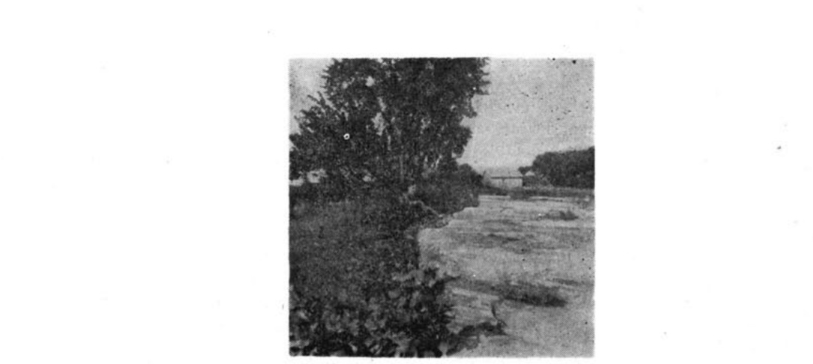
3-Affleurement de grès de Potsdam entre Ste-Clothilde et St-Urbain.
La dolomie de Beekmantown.
Le Beekmantown correspond à la formation March de la partie sud-ouest du comté de Huntingdon et de Beauharnois décrite par Wilson (1946-p. 13). C'est un calcaire dolomitique ou dolomie, gris bleuâtre, comportant des couches sableuses. La pierre prend une coloration gris foncé avec teinte rousse lorsque exposée à l'air et jaune chamois par altération à l'intérieur du sol.
Le membre du groupe de Beekmantown a reçu le nom de Beauharnois dans la province de Québec. “La formation de Beauharnois dont la plus grande épaisseur mesurée est approximativement d'un millier de pieds, consiste à peu près uniquement en dolomie pure ou presque avec des intercalations subordonnées de grès, de schistes et de calcaire.” (Dresser, J. A. Denis, T.C. 1946, p. 304).
Les formations correspondantes de la province d'Ontario ont une épaisseur moindre que celle de la région de Montréal. Ceci tient au mode de dépôt qui s'est effectué, dans notre région, dans un bassin plus profond (Wilson, A. E. — 1946, p. 13). Ce caractère de la formation dans le comté se reflète aussi sur la nature du sol et donne, semble-t-il-il, un résidu plus argileux dans l'ensemble que les formations correspondantes situées dans le bassin d'Ottawa.
Au point de vue composition, la dolomie est formée d'un mélange de carbonate de chaux et de carbonate de magnésie, avec un excès de carbonate de chaux. Les bancs massifs renferment des cavités (géodes) remplies de cristaux blancs ou roses de calcite ou de dolomite. Voici, d'après M. F. Goudge (1935, p. 212), des analyses de calcaire dolomitique du comté de Châteauguay:
ÉTUDE PÉDOLOGIQUE DU COMTÉ DE CHÂTEAUGUAY
TABLEAU 5 — COMPOSITION CHIMIQUE DE QUELQUES CALCAIRES DOLOMITIQUES (1)
No;
SiO2
Fe2O3
Al2O3
Ca3(PO4)2
CaCO3
MgCO3
Total
CaO
MgO
Ca/MgO
Ech.
(1)
40.40
2.16
2.90
0.13
30.00
23.09
98.68
16.87
11.04
1.53/1
(2)
26.74
1.78
2.62
0.17
43.77
24.74
99.82
24.60
11.83
2.08/1
(3)
18.94
1.38
1.26
0.11
47.20
30.97
99.86
26.49
14.81
1.78/1
(1) Note: Ces échantillons proviennent des endroits suivants: No: (1): DeLéry; No: (2) et No: (3): Ste-Clothilde.
La dolomie est une source importante de magnésium dans le sol; elle est cependant moins soluble que la calcite. Ce sont d'abord les cristaux de calcite qui se dissolvent. La différence de solubilité des deux minéraux se manifeste chez certaines strates par une structure vacuolaire. D'autres lits présentent une structure cloisonnée due à des bandes sableuses plus résistantes. Cet aspect carié et caverneux des cailloux des champs est utilisé par les gens de la région qui les disposent en clôtures et en rocailles pour ajouter un air de vétusté à leurs propriétés.
Cette propension des calcaires dolomitiques à s'altérer se manifeste non seulement dans les sols qui dérivent de leurs fragments, mais aussi dans leurs affleurements. Ceux-ci sont généralement moins accidentés que ceux du grès de Potsdam et sont très souvent enduits de sols résiduels.
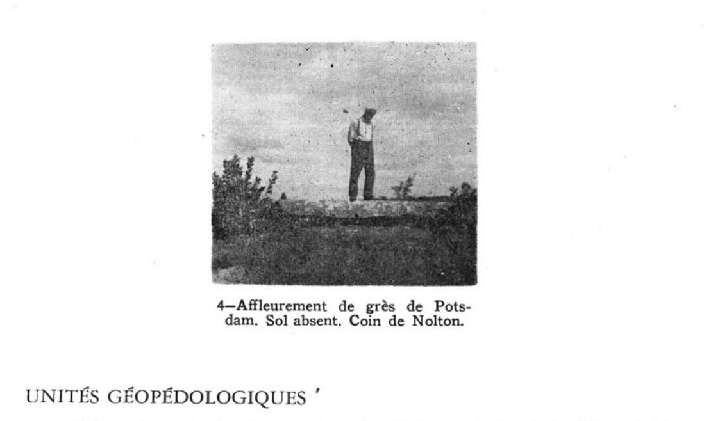
4–Affleurement de grès de Potsdam. Sol absent. Coin de Nolton.
UNITÉS GÉOPÉDOLOGIQUES
Suivant le mode de mise en place des dépôts qui tapissent la région, leur position topographique et leur nature minéralo-pétrographique, on peut commodément subdiviser la région en plusieurs petites étendues ou unités géopédologiques (voir carte). Ces unités correspondent aux roches-mères du comté et présentent l'avantage de grouper les sols en associations, i.e., suivant les caractères et les propositions des types ou séries de sols. Dans le comté de Châteauguay, (Mailloux — 1943), nous distinguons les divisions physiographiques subdivisées en unités ou régions géopédologiques telles qu'indiquées dans le tableau suivant :
TABLEAU 6
RÉGIONS GÉOPÉDOLOGIQUES DU COMTÉ DE CHÂTEAUGUAY (1)
I — La Plaine (altitude: 175 — 300 pieds)
A — Tills glaciaires.
Till dolomitique (Beekmantown) (2)
Till mince dolomitique et affleurements (Beekmantown)
Till dolomitique et gréseux.
Till gréseux (Potsdam)
Till mince gréseux et affleurements (Potsdam)
B — Alluvions.
a) Marines Champlain.
Argile.
Argile calcaire.
Sable épais.
Sable mince (Sur argile ou sur till remanié)
b) Fluviatiles.
10a) Limons.
10b) Limons argileux.
C — Dépôts glacio-marins et fluvio-glaciaires.
Graviers et sables caillouteux en buttes isolées ou en coteaux allongés.
Calcaires.
Non calcaires.
D — Dépôts Paludéens.
Tourbes.
Tourbières et marécages
II — Les Terrasses Champlain (Altitude: 300 — 525 pieds)
Graviers et sables silico-caillouteux.
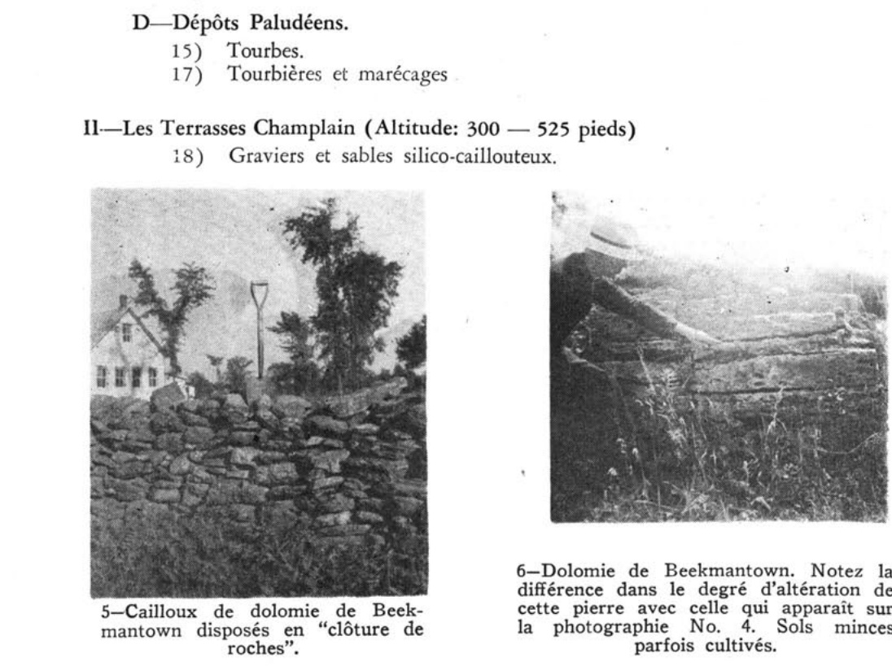
5 — Cailloux de dolomie de Beekmantown disposés en “clôture de roches”.6 — Dolomie de Beekmantown. Notez la différence dans le degré d'altération de cette pierre avec celle qui apparaît sur la photographie No. 4. Sols minces parfois cultivés.
(1) Voir carte des unités géopédologiques.
(2) Les numéros des sous-titres correspondent à ceux de la légende de la carte ci-haut mentionnée.
ÉTUDE PÉDOLOGIQUE DU COMTÉ DE CHÂTEAUGUAY
I. LA PLAINE.
A. TILLS GLACIAIRES.
Ces dépôts débutent sous forme de légers renflements aux environs de Châteauguay, puis se développent avec plus d'ampleur à partir de St-Urbain vers St-Chrysostôme ou ils présentent une succession de buttes drumlinoïdes (coteaux ovoïdes). Ces croupes morainiques se détachent plus nettement de la plaine aux environs de Dewittville. La partie inférieure du till a été si fortement entassée sous le poids énorme de la glace, que les matériaux, énergiquement encastrés, forment une masse très cohérente et très dure (hardpan). Par contre, les cailloux enclavés dans le till superficiel sont plus lâches, plus anguleux, et la matrice est moins argileuse que celle du till basal. Ce dépôt, généralement mince, provient de débris contenus à la surface du glacier et qui s'accumulaient sur le till au fur et à mesure de l'ablation ou fonte graduelle de la glace. On a donné le nom de moraine d'ablation à cette forme d'accumulation des glaciers. Il se peut que beaucoup de croupes morainiques de la région aient été recouvertes d'une couche de moraine d'ablation; mais la surface de ces dépôts a été oblitérée par la submersion marine, de sorte qu'il est difficile de se prononcer sur le caractère superficiel du till glaciaire.
1) Till dolomitique.—Les tills constitués de matériaux dolomitiques offrent plutôt de molles ondulations, ou des coteaux plus bas et plus larges que ceux constitués de grès de Potsdam. Ils sont souvent recouverts d'un matelas de blocs parfois volumineux, gris foncé. Les matériaux qui composent le till glaciaire sont surtout des fragments anguleux et subanguleux de calcaire dolomitique avec quelques roches laurentiennes (granite, gneiss, syénite, anorthosite, diabase, etc.). Les cailloux, de grosseur variable, allant d'un pouce à deux ou trois pieds de diamètre, sont fortement encastrés dans un limon argileux calcaire. Cette couche dure et compacte, appelée hardpan, varie de 15 pouces à 30 pouces de profondeur et conditionne le plan d'eau ou nappe phréatique à l'intérieur du sol.
Les éléments dolomitiques montrent souvent une altération assez poussée. La roche prend une couleur rouille et donne un limon argileux jaune chamois caractéristique. Cette altération peut aller jusqu'à environ trois pieds de profondeur, i.e. jusqu'au till frais, gris bleuâtre.
2) Till mince dolomitique et affleurements. — Parfois, les affleurements de Beekmantown sont partiellement recouverts d'un mince placage de till. Ces dépôts caillouteux s'identifient avec de minces sols résiduels qui recouvrent ces affleurements.
ÉTUDE PÉDOLOGIQUE DU COMTÉ DE CHÂTEAUGUAY
3). Till dolomitique et gréseux.
— Le till dolomitique et gréseux est le mélange à peu près égal de grès de Potsdam et de calcaire dolomitique avec quelques matériaux laurentiens. Ce till mixte apparaît sous formes de croupes basses, et voisine généralement les tills dolomitiques et les tills gréseux, i.e. dans la zone de séparation des formations de Beckmantown et de Potsdam. La texture de ce till est plus sableuse que celle du till dolomitique à cause de la plus grande abondance d'éléments quartzeux. Ce caractère rend le sol plus meuble, plus perméable et plus décalcifié que les sols issus des tills précédents. La zone de décalcification s'étend sur une profondeur de 36 pouces et plus.
4). Till gréseux.
— Le till gréseux est le dépôt glaciaire le plus répandu dans le comté. Il se présente généralement en une série de côteaux ovoïdes couronnés de cailloux blancs et avec un relief plus accentué que les croupes dolomitiques.
Les constituants de ce till, qu'il s'agisse des éléments fins ou des blocaux, appartiennent toujours à la roche-mère sous-jacente, le grès de Potsdam. Les cailloux laurentiens (granite, gneiss, diorite, etc.), sont plutôt rares et ne forment jamais plus de 7 à 8 pour cent du matériel morainique. Les matériaux moins tassés que ceux des tills dolomitiques forment cependant, à une profondeur de 2 à 3 pieds, une couche assez compacte et résistante.
Les sols qui dérivent de ces dépôts sont excessivement rocheux, ont une texture nettement sableuse et sont à réaction acide.
5). Till mince gréseux et affleurements.
— De larges affleurements plats de grès de Potsdam apparaissent souvent enduits, surtout vers leur périphérie, d'une mince couche de matériaux morainiques très caillouteux. Ce till mince gréseux se confond, sur la carte, avec le grès en affleurement.
Les sols engendrés sur les tills forment trois séries différentes selon que les matériaux sont calcaires, siliceux, ou encore en mélange: série de St-Bernard issue de till dolomitique, série de Norton développée sur matériaux dolomitiques et gréseux et la série de Perrot sur till gréseux.
B. ALLUVIONS.
A. LES ALLUVIONS CHAMPLAIN.
LES ARGILES: ORIGINE, CONSTITUTION ET PROPRIÉTÉS.
Les argiles Champlain occupent les parties les plus basses du comté. La plus vaste nappe d'argile se déploie chaque côté de la rivière Châteauguay et de la rivière des Anglais. La plate-forme argileuse s'enfonce parfois sous forme de baies et de langues à travers les buttes morainiques. A cause de l'importance agricole qu'elles représentent, les argiles méritent de retenir plus spécialement notre attention.
Les argiles proviennent probablement de la trituration des calcaires et des schistes argileux opérés par les glaciers pléistocènes, puis remaniées et redéposées par les eaux marines. Ces sédiments furent nommés argiles Champlain ou à Leda par Sir J. W. Dawson, d'après le mollusque lamellibranche trouvé au sein de ces dépôts. Ce fossile est connu aujourd'hui sous le nom de Yoldia glacialis.
Les sédiments argileux constitués de particules très fines ont été entraînés en suspension dans les eaux marines et salées de la mer Champlain. En présence d'électrolytes (1) marins, ces éléments très ténus se sont floculés, puis précipités en bancs massifs dans les endroits les plus profonds et les plus calmes de la mer. Ces colloïdes argileux sont doués de propriétés physiques particulières : la plasticité, la porosité, l'imperméabilité, le gonflement et le retrait. Ils possèdent, en outre, des propriétés physico-chimiques dues à la finesse des particules et à leur état cristallin (pouvoir absorbant, capacité d'échange vis-à-vis des bases, thixotropie, etc.).
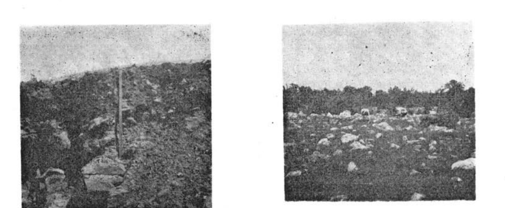
7–Till mince dolomitique. Dolomie de Beekmantown en strates horizontales. Carrière Laberge, Châteauguay, P. Q.
8–Croupes basses de till caillouteux de grès de Potsdam. St-Chrysostôme.
Structure des argiles.
Des méthodes modernes d'examen des argiles ont révélé qu'elles contiennent, à côté d'éléments amorphes, des particules possédant une structure cristalline caractéristique : des sortes d'échafaudage en forme de mailles ou de réseaux. On peut simplement se représenter ces minéraux comme étant formés par la juxtaposition d'un certain nombre de feuillets. Chacun de ces feuillets est constitué par une série d'atomes d'oxygène liés entre eux par des atomes métalliques. Ainsi, nous pouvons avoir un feuillet de silice (SiO2) accolé à un feuillet d'alumine (Al(OH)3O). Chacun de ces feuillets peuvent se superposer plusieurs fois, un peu à la façon d'un jeu de cartes dont chaque carte aurait une couleur différente. Les différentes manières d'empiler et de disposer (angle, décalage, écartement) chaque "carte" par rapport à sa voisine déterminent les différents types de minéraux argileux.
Donc, suivant la charpente de leur réseau cristallin, leurs propriétés physico-chimiques, et suivant l'écartement plus ou moins facile de leurs feuillets ou lamelles, les minéraux argileux se divisent en trois groupes principaux suivants :
(1) Substances (sels alcalins, bases, certains acides) qui, ajoutées à une solution colloïdale, provoquent l'agglutination des particules en petits flocons qui grossissent et finissent par se rassembler au fond du liquide. Dans le cas qui nous occupe c'est le sel marin (ions sodium) qui aurait joué le rôle d'électrolyte.
Le groupe des Koalinites, caractérisé par un réseau cristallin dont le rapport est de: 1: 1, i.e. un feuillet de silice et un feuillet d'hydrate d'alumine fortement fixés ensemble.
Le groupe des Montmorillonites est du type 2: 1. On le représente formé d'un feuillet d'hydrate d'alumine ou gibbsite intercalé entre deux lamelles de silice. Ces feuillets sont lâches et s'écartent facilement au contact de l'eau, conférant ainsi à ce groupe un pouvoir de gonflement et de capacité d'échange de bases éminemment marqués.
Le groupe des Hydros-micas (Illites), désigné sous ce nom, à cause de l'analogie de leur structure avec celle des micas (muscovite), possède une structure semblable à celle de la montmorillonite. Des ions métalliques comme le potassium s'interposent entre les feuillets auxquels ils sont liés, de sorte que les couches s'écartent difficilement. Ce type de minéral argileux montre des propriétés physico-chimiques moins marquées que les argiles montmorillonites.
Nous reviendrons sur ce sujet au chapitre des bases échangeables traité à la fin de ce rapport.
Nous avons distingué dans la région deux sortes d'argiles: l'une non calcaire ou pauvre en chaux, l'autre calcaire ou riche en chaux.
6). Argile non calcaire.
Les argiles non calcaires présentent les mêmes caractères généraux que celles des autres étendues de la Plaine de Montréal. C'est une argile grise et à traînées rouilleuses à la partie supérieure, recouvrant une argile gris-bleu à la base, à structure massive et à consistance plastique. L'argile recèle généralement de fines paillettes de mica de teinte mordorée.
Cette argile se déploie largement en nappe unie aux environs de Ste-Martine et de Howick et constitue la roche-mère des sols de la série de Ste-Rosalie.
Lorsque la nappe d'argile s'enfonce sous forme de baie ou de langue plus ou moins étroites à travers les croupes morainiques, se charge de sable. Ces interstratifications de lits de sable, près de la surface de l'argile, proviennent de l'entraînement de matériaux grossiers alors que les côteaux émergeaient de la mer. Les sols de cette argile sableuse se rattachent à la série de Ste-Rosalie.
Sur les berges à pentes rapides de la rivière Châteauguay et de ses tributaires, l'eau de ruissellement entraîne la terre fine, détermine la formation d'un réseau de gouttières et de rigolets qui sillonnent les versants. Ceux-ci se creusent même des ravins. L'érosion déclenchée à la base se propage vers les sommets, les sillons s'allongeant en se ramifiant et la plaine unie adjacente se convertit en une surface onduleuse. Cette topographie donne naissance, sur roche-mère argileuse, à un type de sol particulier nommé série de Rideau.
7). Les argiles calcaires.
Les argiles calcaires, ou riches en chaux, se localisent aux endroits les plus déprimés de la plaine argileuse, ou tapissent les espaces plans entre les côteaux calcaires. Elles coïncident avec les étendues les plus mal drainées de la région, là où des réseaux de ruisseaux convergent et promènent une eau paresseuse. Dans ces argiles la couche de carbonate actif s'établit à environ 3 pieds de profondeur. Cette position de cette argile a favorisé l'accumulation de débris végétaux qui donnent aujourd'hui un sol humifère. Ce dernier caractère confère au sol une structure moins massive et moins compacte que celle du sol précédent. La nappe aquifère est généralement à faible profondeur, et l'argile bleue de la base, presque constamment gorgée d'eau, flue facilement.
ÉTUDE PÉDOLOGIQUE DU COMTÉ DE CHÂTEAUGUAY
Cette nappe d'argile s'étend de part et d'autre de Ste-Philomène et forme un large bassin au pied du village de St-Urbain. On a donné le nom de série de St-Urbain aux sols formés aux dépens de cette argile calcaire.
On peut considérer, comme faisant partie des alluvions Champlain, le manteau d'argile peu épais recouvrant les molles ondulatios de till calcaire ou tapissant les pentes douces des buttes caillouteuses calcaires. Les sols issus de cette argile sur till calcaire ont reçu le nom de série de Châteauguay. L'argile neutre ou alcaline, en plaine subhorizontale, sur till calcaire à faible profondeur (2 — 4 pieds), constitue la roche-mère des sols de la série de Ste-Blaise.
Avec les étendues d'argile coïncident la surface la plus plate et la plus basse du comté; aussi l'assainissement s'y avère parfois difficile, car le plan d'eau au printemps et à l'été, à la suite des pluies prolongées, se maintient près de la surface et peut, de ce fait, retarder ou endommager les cultures. Par contre, l'argile se contracte en se desséchant, se fendille et atteint une tenacité extrême.
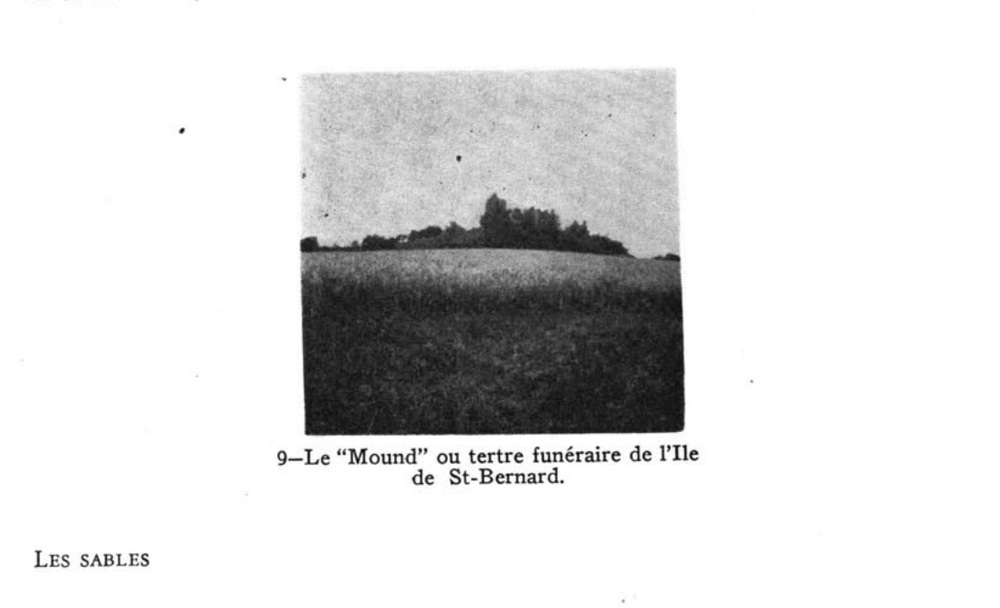
9—Le "Mound" ou tertre funéraire de l'Île de St-Bernard.
LES SABLES
Les sables de la région couvrent au total une faible partie de la surface du terrain. Voici ce que rapporte Keele, J. et Cole, C.H. (1924) — à ce sujet: "Il y a une absence remarquable de sable sur les parties de Beauharnois et de Châteauguay entre le lac St-François et le lac St-Louis. Il est possible qu'il ne fut jamais déposé de sable Saxicava à cet endroit, en raison d'absence d'aucune surface élevée dont il pouvait dériver des matériaux; ou alors le St-Laurent peut avoir circulé pendant un certain temps sur cette surface et emporté les sables".
Quoiqu'il en soit, c'est dans la zone des croupes morainiques et surtout en contre-bas des terrasses graveleuses que l'on trouve les dépôts de sable les plus abondants. En effet, on trouve là la source de matériaux nécessaires à leur production et les accidents en creux pour les recevoir.
Les sables furent déposés principalement à l'époque du retrait de la mer Champlain alors que le continent se relevait. Ce soulèvement communiquait une recrudescence d'érosion aux cours d'eau dévalant des pentes de la colline de Covey. Les rivières se chargeaient ainsi de matériaux grossiers et venaient les déposer à leur embouchure temporaire sous forme de plages et de deltas. Les plus fines particules (limons et argiles), tenues en suspension, étaient charriées par le courant et entraînées plus loin. C'est donc au pied des terrasses, en bas du niveau de 300 pieds, que l'on trouve le plus large manteau de sable de la région, plus particulièrement entre la rivière Noire et la rivière des Cutardes. C'est là qu'après leur descente rapide des flancs de la colline de Covey, elles franchissent les limites du comté de Huntingdon pour étaler leurs eaux moins turbulentes dans le comté de Châteauguay.
8). Sable épais. — Ces dépôts de sable, les plus épais de la région, se disposent soit en plaine unie, soit en ondulations dont les surfaces dénudées et balayées par le vent s'ourlent en dunes. Deux séries de sols ont pris naissance sur ces dépôts épais de sable : La série de St-Jude sur les surfaces unies et la série de Sorel sur le sommet des ondulats.
9). Sable mince. --- Des placages plus minces de sable tapissent les dépressions encadrées de côteaux caillouteux, où ils se chargent d'humus. Ils dérivent du rabotage des vagues de la mer sur les crêtes gravelo-caillouteuses au fur et à mesure que leur dos émergeait de l'eau. Ce délavage opéré par l'eau entraînait le sable qui s'accumulait dans les cuvettes, laissant en place les cailloux plus volumineux.
Ces sables sont presqu'entièrement constitués de quartz blanc parce qu'issus de fragments siliceux de grès de Potsdam. Ils forment un manteau peu épais recouvrant un till remanié très caillouteux et constituent la roche-mère des sols de la série de Botreaux.
Des lambeaux de sable se rencontrent en amont de Châteauguay sur les deux côtés de la rivière. Ces minces couches de sable, recouvrant l'argile Champlain, proviennent probablement du remaniement ou du démantèlement de dépôts glaciaires avoisinants par les eaux marines au cours de leur déclin. Les sols issus de tels dépôts sont désignés sous le nom de série de St-Damase.
Les alluvions fluviatiles:
Aux dépôts argileux Champlain se superposent les limons fluviatiles récents et modernes. Ces limons de débordement escortent les cours d'eau. Ils se sont étalés alors que les rivières, à la suite du recul de la mer, venaient répandre leurs eaux ralenties et chargées de fins débris en suspension sur la plaine argileuse. Ce manteau, de 1 à 2 pieds d'épaisseur le long de la rivière des Anglais, atteint environ 10 pieds aux environs d'Ormstown le long de la rivière Châteauguay. Des dépôts analogues se forment encore de nos jours à l'époque des inondations dues aux crues ou aux "coups d'eau" du printemps à la suite de la fonte des neiges. Les eaux colmatantes des rivières, en reprenant leur lit, garnissent les basses platières de limons de crue. Ces limons, provenant de l'érosion latérale, vont s'étaler plus largement vers l'embouchure de la rivière Châteauguay où ils se prolongent sous forme de delta.
Nous avons rattaché, aux limons de débordement, les limons des pentes qui recouvrent quelques versants de côteaux en bordure de la plaine ou s'insinuent à travers les buttes morainiques sous forme de langues plus ou moins larges. Ces limons
dérivent d'éléments fins et détritiques qui tapissaient les pentes au fur et à mesure que les protubérances émergeaient des eaux. Ils représentent donc une phase limoneuse du recul de la mer.
Deux types de sol se développent sur les limons fluviatiles:
10a) Les limons épais donnent naissance à la série d'Ormstown disposée le long de la rivière Châteauguay aux environs d'Ormstown.
10b) Les limons minces (limons argileux sur argile), engendrent les sols de la série de Howick. Ces sols alluviaux se développent le long de la rivière Châteauguay entre Ormstown et Howick et se prolongent en bordure de la rivière des Anglais et du Norton Creek.
C. DÉPÔTS GLACIO-MARINS ET FLUVIO-GLACIAIRES
Associés aux buttes de till glaciaire, des dépôts de sable et de graviers se présentent généralement sous forme de coteaux allongés. Ils résultent de l'action des torrents sous-glaciaires qui coulaient dans des tunnels ou dans des crevasses ouvertes dans la glace. Lorsque les murs de la glace furent disparus, les matériaux s'affaissèrent de chaque côté donnant aux dépôts actuels leur forme arquée caractéristique.
Ces dépôts fluvio-glaciaires ne sont pas nombreux dans la région. Nous n'indiquons sur la carte que les deux plus importants: les monticules de graviers de l'Ile St-Bernard se prolongeant en bordure du lac St-Louis vers DeLéry, et le côteau Ste-Marguerite sur le rang du même nom. Ces digues de graviers ont sensiblement la même orientation (nord-est — sud-ouest), la même structure et sont constitués de matériaux semblables.
Le "côteau Ste-Marguerite", un des plus typiques représentants de dépôts semblables de la Plaine du St-Laurent, forme une "chaussée surélevée" de direction rectiligne qui se déroule sans interruption sur une distance de 3 à 4 milles environ; ensuite, la digue se sectionne en une série de monticules détachés ou de renflements peu élevés qui jalonnent la plaine argileuse jusqu'à la hauteur de Howick.
Des excavations, creusées dans les flancs du "côteau Ste-Marguerite", laissent voir des tranches verticales très variables au point de vue disposition et assortiment des matériaux: tantôt les lits sont horizontaux, tantôt ils sont entrecroisés et montrent des poches lenticulaires de gros éléments non assortis. Des lits épais de sable viennent affleurer à la surface; ils alternent avec des lambeaux gravelo-caillouteux. Ces assises comportent, en outre, des intercalations de coquillages marins qui reposent généralement à 6 ou 7 pieds de la surface.
Les matériaux constituant cette crête sont subanguleux et constitués de 60 à 70% de calcaire (Beekmantown, Trenton, Chazy). Le reste comprend des granites, des gneiss, des syénites, des anorthosites et des diabases. Les sables sont presqu'entièrement constitués d'éléments calcaires. Cependant, le côteau offre, dans sa partie ouest vers St-Urbain, des trainées de sables non calcaires.
ÉTUDE PÉDOLOGIQUE DU COMTÉ DE CHÂTEAUGUAY
Sans entrer dans la discussion touchant l'origine de ce bourrelet ou "esker fossilifère", nous sommes enclins à croire qu'il a pris naissance dans une crevasse ouverte dans un immense bloc de glace, pendant une période de stagnation, au cours de son retrait (Osborne, 1949). Les eaux saumâtres de la première mer Champlain ont inondé ces canaux ou couloirs glaciaires, remanié les dépôts préexistant et abandonné des coquillages marins (Mailloux, A. 1943). On a donné à ces dépôts glacio-marins, le nom de "remplissages de crevasse" (crevasse fillings). Aux dépôts glacio-marins, nous avons rattaché des côteaux gravelo-caillouteux semés ici et là à travers la plaine surtout dans la zone des croupes morainiques, en contre-bas des terrasses marines. Ces monticules dominent généralement les croupes de till glaciaire, ils ont été édifiés par le travail des vagues. Celles-ci coiffaient les accidents les plus en relief de la plaine d'une couronne de cailloux roulés ou galets, de graviers et de sable interstratifiés.
Les dépôts glacio-marins et fluvio-glaciaires constituent les roches-mères de deux séries de sols:
13). sur les éléments calcaires se sont constitués les sols de la série de Stę- Philomène.
14). sur les matériaux non calcaires ou siliceux, naissent les sols de la série de Grande-Ligne.
D. DÉPÔTS PALUDÉENS
Les dépôts paludéens de la région s'établissent et s'accroissent dans les dépressions les plus basses de la plaine.
La cuvette, qui contient la tourbière de Ste-Clothilde, quoiqu'elle apparaisse enfoncée au milieu de croupes morainiques qui la cernent, a été excavée dans le roc même par l'action érosive des glaciers pléistocènes. Cette cuvette, à fond marno-argileux, s'est remplie d'abord d'eau douce et claire, recouverte par après d'une végétation dont la décomposition finale a produit des sols tourbeux. D'autres étendues marécageuses tapissent les creux peu profonds des bas plateaux du grès de Potsdam (Rocher) situés dans la partie ouest du comté.
Selon le degré d'humification des plantes, on distingue deux sortes de dépôts paludéens:
15) les tourbes
17). les tourbières et les marécages.
II. LES TERRASSES CHAMPLAIN (alt: 300 — 525 pieds)
Quoique formant une division physiographique caractéristique, les terrasses marines n'occupent qu'une faible étendue dans le comté. Elles couvrent l'extrémité sud-ouest de la carte où elles affectent la forme d'un triangle de quelques milles de surface.
Les terrasses se dessinent dans la topographie par une série de paliers étagés à des niveaux croissants vers la colline de Covey. Chaque gradin correspond à un recul par à-coups du rivage maritime. Ces terrasses s'ordonnent tantôt en bourrelets ou barres continues suivant des alignements parallèles, tantôt en paliers mollement ondulés.
Les replats les plus unis des terrasses montrent en coupe, des cailloux roulés en galets, des graviers et des sables interstratifiés et disposés en lits horizontaux et réguliers. Les éléments sont constitués presque entièrement de grès siliceux de Potsdam. Cependant, certains paliers sont souvent incrustés d'épaissses plaquettes de grès imbriquées et leurs talus se couronnent de levées massives de blocs gréseux.
18). Graviers et sables silico-caillouteux. Ces graviers et sables silico-caillouteux ainsi échelonnés en terrasses, donnent naissance aux sols de la série de Franklin.
Telles sont les conditions géologiques et géomorphologiques qui ont présidé à l'évolution du relief du comté de Châteauguay et des dépôts superficiels qui le recouvrent.
Étude Pédologique du Comté de Châteauguay
CHAPITRE III
MORPHOLOGIE ET GENÈSE *
(Étude de l'évolution des sols)
L'étude comparative des sols “in situ” implique la détermination de la nature et du rôle des divers agents qui ont présidé à leur formation.
Les principaux agents déterminants, dits facteurs génétiques, qui ont donné naissance aux sols du comté de Châteauguay, comme à ceux de la province, voire du monde entier, sont multiples, mais peuvent à la lumière des connaissances actuelles se grouper sous les six chefs suivants :
1—Le climat, au double point de vue de la température et de l'humidité,
2—La végétation et les microorganismes,
3—La topographie: relief et microrelief,
4—La roche-mère, faite de matériaux géologiques très variés,
5—L'âge du sol, c'est-à-dire, son degré de maturité, qui, spécialement pour certains sols alluvionnaires, est très souvent fonction du temps écoulé depuis la mise en place des matériaux du sol,
6—L'homme, enfin dont l'emprise sur les éléments de la nature est indéniable et devient de plus en plus marquée de nos jours.
Avant d'aborder l'étude de chacun des agents précités, pour une meilleure compréhension du texte, nous expliquerons la genèse des types génétiques appartenant aux grandes catégories suivantes: celles des sols zonaux, intrazonaux et azonaux.
LES SOLS ZONAUX
D'après leur définition, les sols zonaux montrent, par leurs caractéristiques, un certain équilibre avec le climat d'une part et la végétation qu'il nourrit et supporte d'autre part. Cet équilibre, dont la notion chez les pédologues, faute d'études plus avancées, garde encore un certain caractère spéculatif, se retrouve sur les sols dont la texture n'est ni trop sableuse ni trop argileuse, mais plutôt limoneuse et dont la topographie est telle qu'elle favorise, sous le climat actuel, l'épanouissement d'un sol en parfaite harmonic avec le milieu ambiant.
Dans Châteauguay, le climat humide et la végétation originelle composée d'espèces arborescentes décidues (voir données sur le climat et la végétation) ont donné naissance, sur sites limoneux et bien drainés, à des sols lessivés du type “gris-brun podzolique” (voir photo 10 et description des profils des séries de Châteauguay et de Ste-Philomène) et bruns-forestiers lessivé (voir photo 11 et description du profil de la série de St-Bernard). Notons que ces deux types génétiques forment une association de sols très typiques dans les paroisses de Châteauguay et d'Ormstown notamment. Ils occupent les pentes et les sommets des côteaux de tills calcaires.
* Pour de plus amples informations, voir Baril (1948), “Revue Agriculture”, juin 1948.
10—Gris-brun podzolique sur gravier calcaire. Série de Ste-Philomène. Paroisse de Ste-Philomène.11—Profil d'un brun forestier sur till calcaire. Profil peu différencié. Effervescence à 15 pouces. A l'arrière plan, l'érablière. Sol de la série de St-Bernard. Dewittville, comté de Châteauguay.
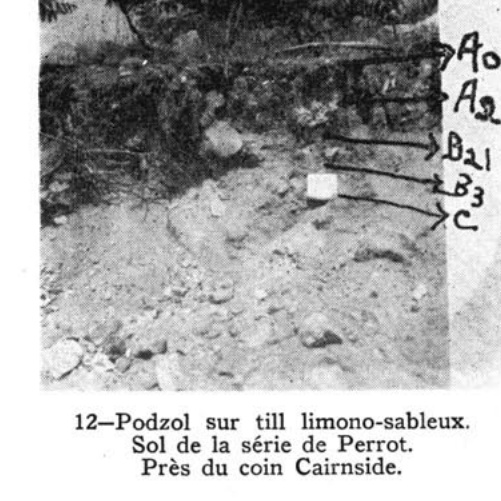
12–Podzol sur till limono-sableux. Sol de la série de Perrot. Près du coin Cairnside.
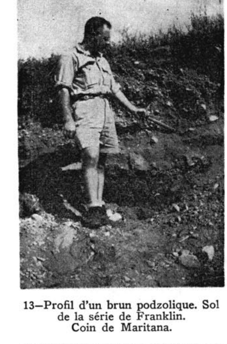
13–Profil d'un brun podzolique. Sol de la série de Franklin. Coin de Maritana.14–Gley (low-humic glei soils) sur argile d'origine Champlain. Série de Ste-Rosalie. Sol cultivé. Notez la structure polyédrique et la présence de la nappe phréatique.
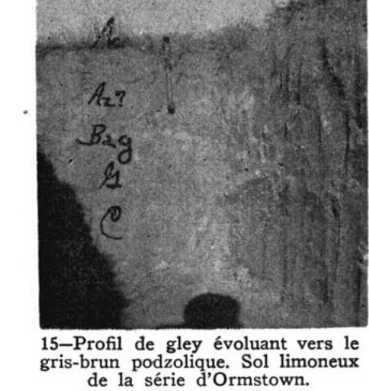
15–Profil de gley évoluant vers le gris-brun podzolique. Sol limoneux de la série d'Ormstown.
Suivant que les sols sont plus ou moins riches en carbonates de calcium et de magnésium actifs, ils montrent tantôt les caractéristiques d'un gris-brun podzolique, tantôt celles d'un brun forestier. Ils représentent en quelque sorte le pédo-climax; la végétation qu'ils supportent est celle de l'Aceretum saccharophori caryosum de Dansereau (1945-1948).
Si l'on admet comme pédo-climax le gris-brun podzolique, on doit reconnaître ici toutefois qu'il ne possède pas de caractéristiques de profil (v. g. texture et structure de l'horizon B) aussi bien différenciées que celles que l'on observe chez les gris-bruns podzoliques situés plus au sud, c.a.d., aux Etats-Unis. Il n'y a pas lieu de s'étonner de ces anomalies apparentes, puis que le comté de Châteauguay est situé dans la Plaine de Montréal, qui occupe une zone de transition ou de tension pour employer l'expression du pédologue Stobbe (1948), entre celle des gris-bruns podzoliques évolués du sud et celle des podzols et des bruns podzoliques plus au nord. En d'autres termes, les sols de ce comté sont situés dans une sorte de carrefour, où les éléments de la pédogénèse manifestent une certaine hésitation et s'orientent, sur sites bien drainés, dans un sens ou dans l'autre, soit vers le podzol, le brun-podzolique et le gris-brun podzolique, soit vers le brun forestier, suivant la nature et la texture des matériaux géologiques des sols.
En ce qui concerne les podzols, mentionnons qu'ils se rencontrent là où la texture des matériaux du sol est sableuse et constituée presqu'entièrement de grains siliceux, (v. g., sols de la série de Perrot, photo 29, profil, page 91). Les bruns podzoliques se sont développés sur les terrasses ou cordons graveleux de la mer Champlain, (v. g. sols de la série de Franklin et de Grande Ligne, voir photo 13, profils, pages 64 et 96).
LES SOLS INTRAZONAUX
Les sols intrazonaux, c.a.d., ceux dont les caractéristiques morphologiques et chimiques du profil reflètent l'influence prépondérante de la topographie et de la roche-mère comprennent: les sols de gley (1) (séries de Ste-Rosalie, de Rideau, de St-Urbain, d'Ormstown, d'Howick et de St-Blaise), les podzols à gley (séries de St-Damase et de St-Jude et complexe de St-Amable), les sols semi-tourbeux et les sols tourbeux.
LES SOLS AZONAUX
Les sols azonaux, comme leur nom l'indique, n'ont pas de zones particulières et leurs caractéristiques morphologiques et chimiques sont peu ou pas développées, soit à cause de leur jeune âge, soit à cause de quelque influence locale qui annule celle du climat. Ils comprennent, dans le comté de Châteauguay, les lithosols ou sols squelettiques, les sols alluvionnaires et les sables secs (dunes). Voir photo 16.
(1) Les gleys ont été subdivisés par les Américains en deux groupes: 1-Les gleys proprement dits (Low Humic Glei Soils) 2-Les gleys humifères (Humic Glei Soils). Cf. Soil Sci. Vol. 67, Feb. 1949. p. 119.
N.B.: Certains pédologues canadiens emploient le terme: Dark Grey Gleisolic Soils, pour désigner les gleys humifères.
TABLEAU 7 — CARACTERISTIQUES PEDOLOGIQUES DES TYPES GENETIQUES DE SOLS DU COMTE DE CHATEAUGUAY (I)
Érablières (feuiIluS et forte proportion de conifères (Aceretum saccharophori betulosum).
1-Horizon d'humus (A₀) mince, peu mélanisé 2-Horizon éluvial ou bleicherde (A₂) gris-cendré discontinu; pH 5.0 environ. 3-Horizon d'accumulation d'humus et de sesquioxydes de fer et d'alumine induré en un" Ortstein occasionnel (sable de Sorel) 4-Structure peu développée 5-Solum mince mais aux horizons bien différenciés.
Till limono-sableux. Grès siliceux de Potsdam; pH 5.5-5.9
T. Bon.
Podzolisations forte.
Retour à l'érablière Fertilité et productivité très faibles. Convient bien à la patate. Pour la culture mixte, le sol a grandement besoin de chaux, de matière organique et d'engrais composés.
Séries : Perrot (dominant), Sorel. On les rencontre au sud et au sud-est du comté.
Brun Podzolique
Érablière (feuillus et un peu de conifères)—(Aceretum saccharophori betulosum?)
1-Couches très minces ou absentes de matière organique peu décomposée (Aoo et A₀) 2-Horizon d'humus mélanisé (A1) de 2-3" env. 3-Pas ou très peu d'horizon A2. 4-Horizon d'accumulation non induré ou cimenté très friable. 5-Solum relativement homogène au double point de vue de la texture et de la réaction.
Gravier d'origine Cham-Réaction ou pH 6.0-6.3.
T. Bon à excessif.
Podzolisation
Érablière (Grande Ligne) Vergers (Franklin) Fertilité et productivité faible. Grand besoin de chaux, mat. org. et engrais composés.
1-Horizon d'humus bien mélanisé (A1) relativement épais (mull) sur sites bien drainés. 2-Horizon A2 gris-brun pâle, présentant une certaine décalcification. 3-Horizon d'accumulation B2 assez visible, mais aussi typique que celui qui caractérise ces sols aux Etats-Unis. 4-Structure meilleure et sol plus épais que dans les types génétiques précédents.
Limon fin argileux sur till calcaire ou gravier calcaire.
T. Bon même excessif.
Podzolisation relativement faible.
Culture mixte et industrie laitière. Fertilité et productivité relativement élevées . Peu ou pas de chaux, matière organique, rotations appropriées.
Séries de Châteauguay et de Ste-Philomène.
Brun forestier
Érablière climax Acer saccharophori caryosum.
1-Mull relativement épais, noir et bien minéralisé. 2-Horizon A₂ gris-brun pâle en poches. 3-Peu ou pas d'horizon d'illuviation B2 4-Changement graduel dans les teintes du sous-sol (homogène). 5-Présence de carbonates actifs entre 15 36" de profondeur.
Limon graveleux pierreux calcaire.
T. Bon.
Podzolisation nulle. Le solum est décalcifié, mais non podzolisé. Riche en calcium et magnésium.
Culture mixte, industrie laitière, cultures spéciales diverses. Potentiel de fertilité et productivité très élevé.
Séries de St-Bernard et de Norton.
ÉTUDE PÉDOLOGIQUE DU COMTÉ DE CHÂTEAUGUAY
Nous donnons dans le tableau 7 les principales caractéristiques des types génétiques zonaux, intrazonaux et azonaux du comté de Châteauguay et référons le lecteur, pour de plus amples détails, aux descriptions et aux photos données dans le texte, pour chacune des séries mentionnées.
LE CLIMAT
Le climat dominant du comté de Châteauguay est tempéré et humide. Par sa température moyenne annuelle, le comté de Châteauguay occupe une position privilégiée, puisqu'il est situé dans la zone la plus chaude de la province de Québec.
À Ste-Martine, la température moyenne annuelle, pour une période de 8 ans, était de 43.9° F. et la température moyenne de juillet, pour une même période, était de 69.6° F. (voir tableau 8 et figure 2). La température moyenne pour les cinq mois les plus chauds de l'année: mai, juin, juillet, août et septembre, était de 62.8° F., celle des quatre mois les plus chauds: juin, juillet, août et septembre était de 65° F.
La précipitation annuelle, par ailleurs, est relativement faible; elle est beaucoup inférieure à celle de stations météorologiques situées plus au nord, v.g., celles de Beauceville, de Thetford Mines, de Québec, de Gaspé et d'Amos. (voir tableau 9).
À Ste-Martine, la précipitation moyenne, pour une période de 8 années, était de 31,4 pouces. La figure (2) et le tableau 9 font voir que le mois d'août est particulièrement sec, avec une précipitation de 2.4 pouces.
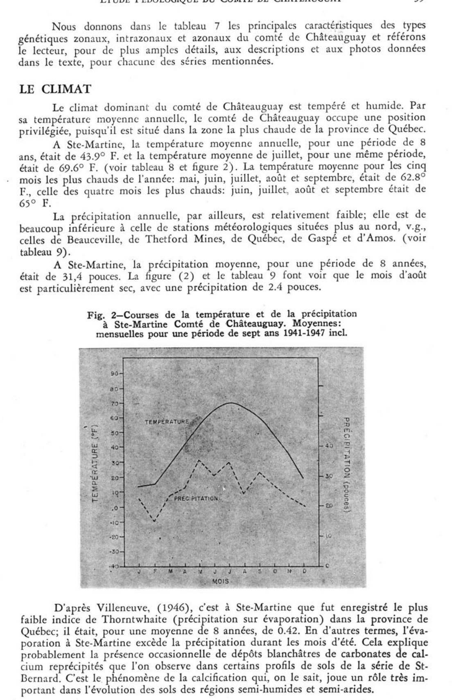
Fig. 2—Courses de la température et de la précipitation à Ste-Martine Comté de Châteauguay. Moyennes: mensuelles pour une période de sept ans 1941-1947 incl.
D'après Villeneuve, (1946), c'est à Ste-Martine que fut enregistré le plus faible indice de Thorntwhaite (précipitation sur évaporation) dans la province de Québec; il était, pour une moyenne de 8 années, de 0.42. En d'autres termes, l'évaporation à Ste-Martine excède la précipitation durant les mois d'été. Cela explique probablement la présence occasionnelle de dépôts blanchâtres de carbonates de calcium reprécipités que l'on observe dans certains profils de sols de la série de St-Bernard. C'est le phénomène de la calcification qui, on le sait, joue un rôle très important dans l'évolution des sols des régions semi-humides et semi-arides.
Groupes ou types génétiques (1)
Végétation (2)
Caractéristiques morphologiques des profils
Matériau originel et topographie
Drainage
Classification et caractéristiques pédologiques
Valeur agricole et utilisation
Séries de sols et répartition géographique
Gley (3)............
Érablière. Aceretumulmetum laurentianum
1—Horizon d'humus (A1) épais et bien mélanisé. 2—Horizon de réduction peu ou pas lessivé (A2) mince. 3—Pas ou très peu d'horizon d'accumulation (B2). Remplacé par des horizons de "gley" plus ou moins parsemés de mouchetures de rouille.
Argile d'origine Champlain, pH 7.0.
Imparfait à mauvais.
Gleification. Peu ou pas de podzolisations.
Culture mixte et industrie laitière. Niveau de fertilité très élevé. Drainage. Un peu de chaux, de drainage et de phosphates sont à conseiller. Amélioration des propriétés physiques.
Séries de Ste-Rosalie (3), de Rideau(3), d'Howick, d'Ormstown, de St-Blaise.
Podzol à gley............
1—Horizon relativement épais de matières organiques peu décomposées. 2—Peu ou pas d'humus minéralisé (A1). 3—Fortement podzolisé (A2) cendréux et très net. 4—Avec ou sans ortstein. 5—Mouchetures de rouille plus ou moins abondantes.
D'origine Champlain.
Lent à mauvais.
Podzolisation forte. Gleification.
Le boisé. Cultures spéciales en certains cas. Grand besoin de chaux, de drainage, de matière organiques et d'engrais composés.
Série de St-Damase et de St-Jude.
Sols semi-tourbeux...
Forêt et marécages
Présence d'un horizon très humifère (A0) peu ou pas mélanisé.
Dépôts organiques sur argile ou sable d'origine Champlain.
Mauvais.
Formation de tourbe. Gleification.
Cultures mixtes et spécialisées. Niveau de fertilité et de productivité très élevé. Drainage. Engrais riches en éléments minéraux.
Paroisse de Ste-Clothilde et de St-Urbain. Sols non sériés, exception faite pour le St-Urbain, et le Botreaux.
Sols tourbeux............
Forêt de marécages
Horizons superficiels généralement bien décomposés.
Dépôts organiques.
Mauvais.
Formation de tourbe.
Cultures horticoles. Sols riches en azote, déséquilibrés pour la plupart des plantes.
Ste-Clothilde.
Sols alluvionnaires...
Érable argenté. Érable rouge
Profil homogène, peu ou pas différencié.
Limon à réaction neutre.
Variable Sujet aux inondations.
Peu apparents.
Cultures mixtes et spécialisées. Sol fertile. Drainage. Prévention des inondations et de l'érosion par un système de culture approprié.
Le long des rivières et des cours d'eau actuels.
Lithosols.............
Cèdre sur les lithosols constitués de calcaire rOdovicien. Végétation rare ou absente sur le grès de Potsdam.
Peu ou pas de profil différencié en horizons.
Absente.
T. Bon à excessif.
Peu apparents.
Boisés et pâturages.
Paroisses de Châteauguay, de St-Chrysostome, de Sr-Antoine Abbé et d'Ormstown.
(1) Voir carte des types génétiques en appendice à la fin du rapport.
(2) Voir texte pour les données sur le climat et la végétation.
(3) Le terme "Gley" tel qu'utilisé ici, englobe les termes provisoires de "Low-Humic Glei soils" et "Humic Glei soils" des Américains. (Voir Soil Sci., vol 67, p. 119) fév. 1949). Les sols des séries d'Howick, de Rideau et d'Ormstown, appartiendraient aux "Low-Humic Glei soils" tandis que ceux des séries de St-Urbain, Ste-Rosalie et de St-Blaise feraient plutôt partie des "Humic Glei soils" ou "Dark-Grey Gleisolic Soils" des Canadiens. Utilisant cette base, nous pourrions subdiviser ces sols en deux groupes ou types génétiques: les "gleys" proprement dits et les "gleys humifères".
TABLEAU 8 — DONNÉES CLIMATOLOGIQUES POUR LE COMTE DE CHATEAUGUAY ET DIVERSES STATIONS DE LA PROVINCE TEMPÉRATURE MENSUELLE (maximum, minimum absolue et moyenne) ET TEMPÉRATURE MOYENNE ANNUELLE (F°)
STATIONS
Période
T
Janvier
Février
Mars
Avril
Mai
Juin
Juillet
Août
Septembre
Octobre
Novembre
Décembre
Moy. Annuelle
Ste-Martine... Lat. 45.14. Lon. 73.48. Alt. 123 pds.
7 ans (1941-48)
Max. Min. Moy.
42.2 -22.0 12.8
41.9 -16.3 15.2
53.8 - 1.0 28.2
75.9 18.0 42.1
82.4 29.9 54.3
91.6 32.2 64.1
91.6 46.6 69.6
90.0 41.3 66.7
86.7 28.7 59.7
75.3 23.1 48.9
62.2 10.6 35.4
62.2 -16.5 17.8
71.3 14.5 42.9
Ste-Clothilde... Lat. 45.10. Lon. 73.40. Alt. 100 pds.
3 ans (1945-48)
Max. Min. Moy.
44.3 -22.7 13.2
43.7 -14.7 15.0
69.3 7.7 35.7
75.3 20.7 42.2
80.3 28.7 51.2
91.0 34.5 63.0
90.7 39.5 68.1
92.2 34.7 67.1
88.5 25 5 58.4
77.0 21.0 45 4
61.5 4.0 32.0
46.3 -22.7 17.6
71.7 13.0 42.4
Montréal (J. Bot.). Lat. 45.21. Lon. 73.25. Alt. 125 pds.
8 ans (1940-48)
Max. Min. Moy.
39.4 -17.6 12.0
40.7 -14.5 14.4
55.0 -12.5 27.9
74.3 17.5 40.4
81.1 31.0 54.0
90.1 38.5 64.8
91.1 48.2 69.9
89.8 42.5 67.2
83.7 30.6 59.5
73.1 24 0 48.4
68.1 8.5 34.6
50 2 -16.1 18.0
69.7 15.0 42.5
Beauceville... Lat. 46 11. Long. 70.48. Alt. 557 pds.
10 ans (1937-47)
Max. Min. Moy.
38.5 -25.0 10.2
39.4 -20.0 13.9
50.9 -11.5 23.4
69.5 10.3 38.4
81.5 28.9 53.2
86.9 30.2 61.0
87.6 43.5 66.3
88.1 32.6 64.6
83.5 24.2 56.4
72.4 20.7 44.3
61.0 4 3 31.9
42.7 -18.7 15.8
66.8 9.7 39.9
Thetford Mines. Lat. 46.05. Lon. 71.17. Alt. 1020 pds.
10 ans (1937-47)
Max. Min. Moy.
39.9 -22.4 9.1
40.4 -19.1 11.6
51.1 -11.6 21.9
70.0 13.8 36.9
81 4 25.5 50.7
86.1 30.6 59.9
87.1 38.3 64.3
85.6 36.0 62.8
81.9 26.1 54.2
71.1 18.4 42.9
60.6 4.4 30.1
44.0 -19.0 13.4
64.9 10.1 38.9
Québec... Lat. 46.48. Long. 71.13. Alt. 296 pds.
10 ans (1937-47)
Max. Min. Moy.
39.1 -15.9 11.8
38.7 -12.6 15.4
48.9 - 9.2 25.2
68.4 15.3 38.7
81 1 27.9 53.1
86.7 40.8 62.1
88.7 49.5 68.7
85.9 45.8 66.5
81.0 34.6 57.2
69.8 23.4 45.6
57.0 9.7 32.7
41.4 -13.3 16.8
65.5 16.6 41.2
Gaspé... Lat. 48.50. Lon. 65.29. Alt. 92 pds.
10 ans (1937-47)
Max. Min. Moy.
40.0 -17.9 10.6
38.0 -19.6 12.2
46.9 -12.6 21.2
56.8 6.8 32.3
73.3 22.7 45.9
83.5 31.1 51.1
87.9 40.9 65.5
87.2 39.0 63.7
79.7 30 4 55 9
70.6 22.2 44.1
60.0 8.8 32.6
41.6 -12.7 16.4
63.8 11.6 37.6
Amos... Lat. 48.36. Lon. 78.07.
10 ans (1937-47)
Max. Min. Moy.
35.4 -41.4 4.1
34.7 -39.0 4.6
47.2 -27.6 16.0
68.8 1.8 32.3
82.9 20.7 46.7
86.8 29.6 58.5
88.8 36.3 62.5
84.9 33.3 60.0
80.7 23.6 51.2
70.5 13.7 38.9
55.7 5.7 24.3
39.3 -36.8 6.9
64.6 0.7 33.8
TABLEAU 9 — DONNÉES CLIMATOLOGIQUES POUR LE COMTE DE CHATEAUGUAY ET DIVERSES STATIONS DE LA PROVINCE
MOYENNE MENSUELLE ET ANNUELLE DE LA PRÉCIPITATION TOTALE
HAUTEUR EN POUCES
STATIONS
Période
Janvier
Février
Mars
Avril
Mai
Juin
Juillet
Août
Septembre
Octobre
Novembre
Décembre
Moy. annuelle
Ste-Martine
7 ans (1941-47)
2.27
1.55
2.31
2.59
3.55
3.04
3.48
2.41
3.16
2.72
2.28
2.09
31.45
Ste-Clothilde
3 ans (1945-47)
2.96
2.62
2.31
3.59
6.08
3.00
4.06
2.53
5.26
3.01
3.23
3.00
41.65
Montréal (Jard. Bot.)
8 ans (1940-47)
3.29
2.81
2.77
2.73
2.85
3.40
3.40
2.60
3.40
3.20
3.40
3.40
37.29
Beauceville
10 ans (1937-46)
3.22
2.65
2.02
2.68
3.12
4.68
3.83
3.97
4.41
3.70
3.23
5.98
43.89
Thetford Mines
10 ans (1937-46)
3.60
2.90
2.57
3.02
3.62
5.76
4.57
5.26
4.71
4.42
3.28
3.01
40.88
Québec
10 ans (1937-46)
3.30
2.98
3.07
3.02
3.42
4.63
4.41
5.03
4.70
4.39
3.57
3.52
46.24
Gaspé
10 ans (1937-46)
3.40
3.33
3.50
2.88
3.67
2.99
3.54
3.22
4.03
4.06
3.79
3.77
42.15
Amos
10 ans (1937-46)
2.29
2.57
1.71
2.86
3.41
3.84
4.01
4.36
4.28
3.14
2.88
2.91
38.26
La période sans gelée est en moyenne de 133.5 jours, mais varie de 120 à 150 jours. La saison de végétation, en prenant comme base les températures moyennes mensuelles supérieures à 42° F., est de 214 jours. Mentionnons que durant l'été, les orages sont fréquents et qu'une forte proportion des eaux de pluie gagne rapidement les rivières et charrie de bonnes quantités de terre. Dans ce cas, les eaux des pluies torrentielles érodent au lieu d'imbiber convenablement les sols. Les données météorologiques à ce sujet font défaut et il serait à souhaiter que l'on détermine la teneur du sol en eau, au cours de la saison de végétation et cela pour les diverses stations météorologiques de la province.
Stations météorologiques de Ste-Martine, de Ste-Clothilde et autres.
Grâce aux renseignements que nous a si obligeamment fournis le Dr O. Villeneuve, directeur du bureau de météorologie de la province de Québec, nous avons compilé dans les tableaux 8 et 9 les données concernant la température et la précipitation pour deux stations météorologiques du comté : Celle de Ste-Martine et celle de Ste-Clothilde. Pour fins de comparaison, nous avons aussi rapporté celles d'autres stations rapprochées ou éloignées, telles celles de Montréal (Jardin Botanique), de Beauceville, de Thetford Mines, de Québec, de Gaspé et d'Amos.
La station de Ste-Martine est à la latitude 45° 14' et à la longitude 73° 48'. Son altitude est de 123 pieds au-dessus du niveau de la mer. Les données météorologiques de cette station ne couvrent malheureusement qu'une période de 7 ans (1941-1947 inclu.); ce qui limite passablement la valeur des conclusions ou des comparaisons que nous serions tentés d'établir avec les autres stations de la province.
La station de Ste-Clothilde est à la latitude 45° 10' et à la longitude 76° 40'. Elle n'est en opération que depuis 1945 et les données rapportées au tableau ne seront pas utilisées ici pour fins de comparaison, mais figureront au tableau seulement à titre d'informations supplémentaires.
Pour ce qui a trait aux autres stations météorologiques, à l'exception de celle de Montréal (Jardin Botanique), les données sont pour une période de 10 ans. Elles remontent à 1937, soit l'année de la réorganisation du réseau météorologique de la province de Québec.
Notons que les stations de Beauceville, de Thetford Mines et de Québec enregistrent des températures moyennes annuelles qui sont intermédiaires entre celles de Ste-Martine et celles de Gaspé et d'Amos. Ces deux dernières occupent à peu près les limites extrêmes nord-est et nord-ouest du domaine agricole québécois.
Il est intéressant de constater qu'en se basant sur la température moyenne mensuelle de 42° F., la longueur de la saison de végétation des stations de Ste-Martine, de Gaspé et d'Amos serait de 214, 184 et 153 jours respectivement. Les températures moyennes annuelles pour ces trois dernières stations sont, dans l'ordre énuméré : 42° .9, 37° .6 et 33° .8 F. Le tableau 8 nous fait voir en outre que les amplitudes de température sont moins prononcées à Gaspé qu'à Amos.; c'est que le climat de Gaspé est maritime et celui d'Amos continental. Quant à celui de Ste-Martine, il partage probablement les caractéristiques des deux types de climat, soit à cause de sa position un peu à l'intérieur des terres ou de sa situation dans la Plaine du St-Laurent, qui forme une sorte de corridor entre les Laurentides au nord et les Appalaches à l'est.
Étude Pédologique du Comté de Châteauguy
Les vents dominants du comté sont ceux de l'ouest et sont orientés dans le sens de l'axe du fleuve.
D'une manière générale, le climat du comté de Châteauguy est caractérisé par des hivers froids et des étés chauds. Il se prête bien à la plupart des cultures : céréales, maïs, racines, foin de mil et luzerne.
Les conditions hivernales affectent parfois les légumineuses, surtout au cours des hivers où le sol n'est pas couvert de neige et à la suite d'étés et d'automnes trop secs; en effet, quand ces plantes manquent d'eau au cours de leur période de croissance et de maturité, leur résistance aux basses températures semble de beaucoup diminuée.
Le climat de Châteauguy est propice à la culture maraîchère et à celle de la pomme et des petits fruits. Les arbres fruitiers, cependant, ont souffert assez souvent de gelées tardives du printemps et occasionnellement de certains hivers trop froids. Par ailleurs, les vergers situés à proximité du lac St-Louis semblent mieux protégés contre les méfaits de la gelée.
Mentionnons que ces quelques constatations climatologiques coïncident, dans l'ensemble, avec les données écologiques de Dansereau (1945, 1946, 1948), qui a reconnu des différences dans la composition floristique des érablières ou dans la végétation climax, à mesure que l'on progresse du sud au nord de la province de Québec.
C'est ainsi que l'érablière climax, comme nous le verrons en détail plus loin, contient une proportion notable de hêtre, tandis que les érablières, dites du "type septentrional" contiennent une bonne proportion de merisier.
LA VÉGÉTATION ET LES MICROORGANISMES
L'étude de la végétation et surtout de son évolution, depuis la glaciation, plus précisément depuis le retrait de la mer Champlain, nous fournit de précieuses indications pour l'interprétation des processus de formation des sols.
La végétation naturelle du comté de Châteauguy était à l'origine la forêt où dominaient les essences à feuilles décidues, telles l'orme, l'érable et le hêtre.
Depuis l'arrivée des pionniers français, soit vers 1600, cette forêt a subi bien des perturbations. Petit à petit, elle est disparue sous les coups incessants de la hache des défricheurs, pour faire place à nos champs cultivés d'aujourd'hui.
La reconstitution de la végétation forestière, à l'aide des faibles indices que nous offrent les rares boisés actuels, pose des problèmes nombreux et d'autant plus
difficiles à résoudre que les boisés eux-mêmes ont presque toujours été modifiés par l'intervention humaine.
D'après Halliday (1937), le comté de Châteauguay, au point de vue de la végétation, fait partie de la région forestière des Grands Lacs et du Saint-Laurent. D'après ce même auteur, l'association dominante de ce secteur est l'érable à sucre et le hêtre, avec de petites quantités de merisiers, d'ormes blancs, d'érables rouges, de tilleuls, de frênes, de chênes rouges et de trembles.
En nous appuyant sur les observations de Dansereau (1945-48), nous sommes enclins à croire que la végétation climax du comté, c.a.d., celle qui représente une équilibre ultime entre le climat d'une part et de l'autre le sol qui la supporte, est l'érablière à noyers tendres (Aceretum saccharophori caryosum) de Dansereau (1946), (1948). On retrouve encore de nos jours des vestiges de ce type de végétation sur cette association de sols "bruns forestiers — gris-bruns podzoliques peu développés" des séries de St-Bernard et de Châteauguay (voir photo No. 11). Cette association phyto-pédologique représente probablement pour cette région le plus bel exemple de l'équilibre naturel (phyto-climax et pédo-climax) (1) vers lequel tendent les formations pédologiques et végétales d'un même paysage.
Ce type d'érablière est composé d'érable à sucre et de hêtre auxquels s'associent, dans des proportions variables, la pruche (Tsuga canadensis), le tilleul, le frêne blanc, le cerisier d'automne, le bois-de-fer, le noyer tendre (Carya ovata et C. cordiformis) et occasionnellement le noyer cendré. Parmi les arbustes et petits arbres, mentionnons le bois barré (Acer pennsylvanicum), le sureau rouge (Sambucus pubens) et le cornouiller (Cornus alternifolia).
Cependant, notons que ce phyto-climax qui orne encore maints côteaux vallonnés, pierreux et constitués de till calcaire, n'occupe pas et ne devait pas occuper autrefois la majeure partie de la superficie du comté de Châteauguay.
En effet, la topographie de ce comté, d'une manière générale, est trop plane et les sols sont trop argileux pour avoir pu favoriser l'établissement d'un pédo-climax (voir: sol zonal ou normal, — (Baril, 1947) et d'un phyto-climax tel que décrit ci-haut (Dansereau 1945).
C'est ainsi que sur les sols de "gley", dits intrazonaux, v. g., les sols des séries de Ste-Rosalie et de Rideau, le phyto-climax s'est orienté ou s'est modifié suivant les exigences des facteurs édaphiques, c.a.d., des conditions locales du sol. D'après Dansereau (2), "la succession des associations sur les gleys s'est arrêtée en-deçà du climax, soit, au sous-climax de l'Acereto-ulmetum laurentianum, si abondamment représenté dans toute la plaine de Montréal. On y rencontre donc, à côté de l'érable argenté (Acer saccharinum), l'orme blanc (Ulmus americana); tandis que le saule noir (Salix nigra), le frêne noir (Fraxinus nigra), l'érable rouge (Acer rubrum) y prennent des proportions variables. L'étage arbustif est occupé par le sumac (Rhus radicans) et parfois par le houx (Ilex verticillata), le nerprun à feuil-les d'aulne (Rhambus alifolia).
Parmi les herbes, on rencontre l'ortie du Canada (Laportea canadensis), l'eupatoire perfoliée (Eupatorium perfoliatum), la circée à larges feuilles (Circéa latifolia) ou le vérâtre vert (Veratrum viride), le symplocarpe fétide (Symplocarpus foetidus), ainsi que des fougères telles: l'onoclée sensible (Onoclea sensibilis), l'osmonde cannelle (Osmunda cinnamomea) et la ptérétide nobuleuse (Pteretis nodulosa)".
ÉTUDE PÉDOLOGIQUE DU COMTÉ DE CHÂTEAUGUAY
Dans plusieurs cas, certaines espèces ont fait place à des individus nouveaux dont l'érable rouge, qui, avec le bouleau à feuilles de peuplier (Betula populifolia), le bouleau à canot (Betula papyrifera), l'orme blanc (Ulmus americana) et le frêne noir (Fraxinus nigra), forment ou ont formé une association d'espèces arborescentes qui correspondent, à peu de chose près, à l'Aceretum rubri de Dansereau (1946).
Là où les sols étaient plus mal drainés, plus humifères et plus riches en chaux, (les sols à tendance semi-tourbeuse des séries de St-Urbain et les terres noires de Ste-Clothilde), la végétation était probablement aussi caractérisée par l'Acereto-ulmetum laurentianum avec une forte proportion d'érable argenté (Acer saccharinum) d'orme et de frêne noir. Sur les sols tourbeux, la végétation passe évidemment par divers stages, selon les degrés de sédimentation et d'amélioration du sol lacustre. Mentionnons les mousses de sphaignes les aulnes (Alnus incana), les mélèzes (Larix laricina), l'épinette noire (Picca mariana). Pour de plus amples détails, nous référons le lecteur aux travaux de Dansereau (1945, 1946 et 1948).
Sur les sols sablonneux susceptibles de souffrir de la sécheresse et où la percolation des eaux est intense, l'évolution s'est orientée vers le podzol (sols des séries de Perrot et de Sorel). A l'érable à sucre et au hêtre sont venues s'ajouter des essences ayant un caractère boréal telles: le merisier, le sapin, qui occupent une place importante dans le Bouclier Laurentien et les Appalaches. Cette association correspond à peu près à l'Aceretum saccharophori betulosum de Dansereau (1945-1948).
La présence de ces essences dans la plaine semble conditionnée beaucoup plus par les facteurs édaphiques que par ceux du climat. Enfin, sur sols secs à caractère lithosolique ou squelettique, sur le Beckmantown, mentionnons la prédominance du cédre (Thuja occidentalis L.) qui forme aujourd'hui des peuplements à peu près purs très caractéristiques.
Enfin, ajoutons que le type d'humus est conditionné à la fois par la nature des débris végétaux et par celle des microorganismes qui en font la décomposition.
C'est ainsi que l'on a observé dans le comté que les gris-bruns podzoliques évolués sous une végétation de feuillus ont un humus doux, friable et bien mélanisé, c.a.d., incorporé à la matière minérale. On donne à ce type d'humus le nom de « mull ».(1)
Par ailleurs, l'on a constaté chez les podzols évolués sous une végétation de conifères un type d'humus acide peu mélanisé, que l'on désigne du nom de « mor ». D'après les bactériologistes, il y aurait prédominance des « fungi » sur les bactéries dans ce dernier type, tandis que ce serait l'inverse pour le « mull ».
Des recherches sur l'humus seraient utiles; malheureusement, elles ne semblent pas avoir encore retenu suffisamment l'attention des pédologues.
(1) Pour de plus amples détails, consulter : « Etudes pédologiques des sols du Québec, p. 21 » par R. Baril. Voir bibliographie à la fin du rapport.
Étude Pédologique du Comté de Châteauguay
LA TOPOGRAPHIE. (facteur d'évolution des sols)
La topographie, comme nous venons de le voir, est un des facteurs les plus importants, au point de vue de la pédogénèse. Rousseau (1944) compare son rôle à celui d'un prisme qui aurait pour fonction de disperser ou de concentrer les effets du climat.
La différenciation des sols en séries telle que nous l'avons établie dans la légende des sols (voir page 53), est basée sur les différences observées dans le profil. Ces différences, dans un même comté, sont fonction, en définitive, des variations du relief et du microrelief, ainsi que de la nature de la roche-mère. C'est ainsi, que l'on observe sur les pentes des côteaux, des podzols ou des bruns forestiers, suivant que les sols sont dérivés de sables acides, de graviers acides ou de graviers ou limons calcaires.
Par ailleurs, là où la topographie est plane ou en cuvette, on peut observer les types génétiques suivants: les sols de "Gley", les semi-tourbeux (half-bog), les podzols à gley (ground water podzols) et les sols tourbeux (bog soils), selon que les matériaux sont de nature argileuse, argileuse calcaire, sableuse ou organique.
LA ROCHE-MÈRE.
L'importance de la roche-mère dans l'étude des sols a été suffisamment mise en évidence au chapitre de la géologie. C'est pourquoi, nous nous contenterons d'exposer très brièvement le rôle de la roche-mère dans la pédogénèse.
Sous un même climat, l'action des agents pédogénétiques dans l'évolution des sols est grandement conditionnée par la nature et la composition pétrographique de la roche-mère. On en trouve un exemple dans la légende des sols, où l'on peut voir plusieurs séries de sols apparentées à une même roche-mère.
L'ÂGE DU SOL
La détermination de l'âge du sol ou de son degré de maturité pédologique, quoiqu'on ne connaisse pas de méthodes sûres pour l'apprécier, est importante, au point de vue de la classification génétique des sols.
L'âge du sol n'est pas fonction uniquement, comme on est trop porté à le croire, du temps écoulé depuis la mise en place des matériaux géologiques, qui ont servi à son édification; mais aussi de l'intensité des phénomènes pédogénétiques. C'est ainsi que l'action de ces derniers, sous certaines conditions, v.g., une roche-mère très perméable, peut orienter très rapidement le sol vers un point d'équilibre ultime relativement stable qu'on désigne sous le nom de pédo-climax. On reconnaît donc parfois,
dans une même région, comme l'a fait remarquer Aubert (1948) en parlant des sols de France, l'existence de sols relativement jeunes à côté de sols mûrs ou plus anciens. À titre d'exemple dans le comté, mentionnons les sols des séries de Sorel, de St-Jude et de Ste-Rosalie, qui, quoique contemporains au point de vue géologique, ont suivi une évolution toute différente. Les premiers se sont orientés vers le podzol et le podzol à gley, tandis que ceux de Ste-Rosalie ont abouti aux "sols de gley" peu ou pas lessivés de leurs matières minérales solubles et colloïdales.
D'après les géologues, les sols de la Plaine de Montréal, par conséquent ceux de Châteauguay, ont été mis à jour lors du retrait de la mer Champlain, il y a environ 15,000 ans.
Les données précises touchant le temps requis pour la formation des divers types génétiques, aux dépens de diverses roches-mères et sous des conditions climatiques variées, nous font défaut. Les travaux faits par Chandler (1942) sur une moraine située au voisinage du glacier Mendenhall en Alaska, ont démontré qu'il fallait approximativement 1000 ans pour la formation d'un podzol. C'est pourquoi, nous sommes enclins à croire que nos podzols existent dans la Plaine de Montréal depuis très longtemps.
Quant à nos bruns podzoliques, gris-bruns podzoliques, et bruns forestiers, dont l'évolution est intimement liée au micro-relief et à la nature pétrographique de la roche-mère, nous sommes également portés à croire, si l'on se rapporte à ce que nous avons dit précédemment au sujet de la végétation, qu'ils ont eu suffisamment de temps pour atteindre un équilibre naturel apparent avec le climat et la végétation et que cet équilibre se maintiendra aussi longtemps que les divers éléments de la pédogénèse demeureront inchangés.
L'HOMME
L'influence du facteur humain, avons-nous dit, dans l'évolution des sols est indéniable.
Quoique cette question soit d'un grand intérêt il serait en dehors des cadres du présent travail d'essayer d'évaluer dans quelle mesure l'homme a modifié les caractéristiques physiques et biologiques des sols en changeant leur vocation culturale qui est celle de la forêt.
Mentionnons cependant que pour une forte proportion de nos sols à gley et même podzoliques le cultivateur québécois a réussi, par des travaux d'assainissement, par la bonne conservation et l'utilisation du fumier et l'emploi rationnel de chaux et d'engrais chimiques, à maintenir et à accroître la productivité du sol. Il nous semble donc que le système de culture mixte, à base de graminées et de légumineuses, ait une forte tendance à bonifier les sols québécois.
ÉTUDE PÉDOLOGIQUE DU COMTÉ DE CHÂTEAUGUAY
CHAPITRE IV
CLASSIFICATION ET DESCRIPTION DES SOLS
MÉTHODES DE TRAVAIL ET SYSTÈME
DE CLASSIFICATION UTILISÉS
Les sols peuvent être considérés comme des entités biologiques distinctes et leur classification doit être basée sur leurs caractéristiques, telles qu'elles apparaissent à l'examen minutieux et comparatif de nombreux profils de sols.
L'étude du profil, (voir schéma d'un profil théorique, tableau 10) nous renseigne non seulement sur les facteurs qui ont présidé ou qui guident l'évolution des sols, mais nous fournit des indications précieuses sur leur valeur agricole intrinsèque.
Pour ces travaux pédologiques, dans le comté de Châteauguay, comme on peut s'en rendre compte à la lecture de ce rapport, nous avons essayé de tenir compte aussi fidèlement que possible des objectifs ci-haut mentionnés.
Le système de classification utilisé est le système américain, tel que préconisé par Baril, R. (Acfas, 1942-43) pour l'étude des sols de la Plaine de Montréal.
Les levés pédologiques ont été effectués sur une carte topographique du ministère de la défense nationale, dont l'échelle était de 2 pouces au mille linéaire, celle de la carte publiée, qui apparaît à la fin du rapport, est d'un pouce mille ou 1:63,360 millième.
Au début, nous avons mis plus de temps et de souci du détail à l'étude et à la classification des sols du comté; ceci avait pour but de mettre à l'épreuve chez nous le système de classification américain d'introduction récente. Dans la suite, nous avons fait une classification plus générale, en consacrant moins de temps à certaines étendues peu cultivées.
Nous avons d'abord fait de multiples observations de profils au cours de cheminements nombreux, soit à tous les 0.1 ou 0.3 de mille. Par la suite, dans notre classification plus générale, nous avons fait des arrêts moins fréquents, soit à tous les 0.4 ou 0.6 de mille.
De plus, comme on peut le voir par les résultats analytiques compilés à la fin du rapport, nous avons prélevé un assez grand nombre d'échantillons.
Les principaux objectifs des levés pédologiques, tant au Canada qu'aux Etats-Unis, (1) sont les suivants:
classer les sols en unités distinctes d'après un système de classification et une nomenclature uniformes,
montrer sur des cartes la distribution de ces unités,
désigner la vocation culturale de celles-ci pour les diverses productions, y compris celles des herbages et des arbres; indiquer les meilleures façons culturales pour le maintien de la productivité des sols; enfin, prédire les rendements éventuels, dans une région donnée, de chaque unité (type de sol) pour telle ou telle récolte, sous différents systèmes de culture ou d'exploitation.
(1) Kellogg, C. E. — Cité par Moon et, al. dans Soil Sci, p. 169. Vol. 67, No 2 (1949).
ÉTUDE PÉDOLOGIQUE DU COMITÉ DE CHÂTEAUGUAY
TABLEAU 10 — SCHÉMA D'UN PROFIL THÉORIQUE DE SOL
LE SOLUM :
Le siège des activités pédogéniques. Son épaisseur, d'une manière générale augmente en allant du nord au sud.
La zone de lessivage ou d'éluviation.
A00
Couche de débris organiques peu ou pas décomposés. C'est la couche L (du mot anglais: litter) des forestiers.
A0
Couche de débris organiques partiellement décomposés dont la structure des plantes a été partiellement préservée. C'est la couche F (Formultningsskiktet) des forestiers.
A1
Horizon d'humus incorporé à la matière minérale (mélanisé). C'est la couche H (Humusamneskiktet) des forestiers. Cet horizon est très mince ou absent dans le podzol, assez bien développé dans le brun forestier, très développé dans le chernozem.
A2
Horizon éluvial ou d'appauvrissement maximum. Le "bleicherde" du podzol. Absent dans le chernozem.
A3
Horizon de passage. Ressemble plus à A qu'à B. Parfois absent.
B1
Horizon de passage. Ressemble plus à B qu'à A. En Europe et autrefois aux états-Unis, cet horizon désignait, pour le podzol, l'horizon d'accumulation en humus et en sesquioxydes de fer et d'alumine.
B2
Horizon illuvial ou d'accumulation maximum. C'est l'horizon fortement coloré par l'humus et les sesquioxydes de fer dans le podzol et l'horizon bien développé au double point de vue de la texture et de la structure dans les gris-bruns podzoliques.
B3
Horizon de passage ou de transition.
La zone d'accumulation ou d'illuviation
G
Horizon de Gley. Généralement situé entre A et C. Pour marquer la présence de gley dans un horizon, on accole parfois la lettre g (minuscule) à celle de cet horizon; V.g: B2g.
Cca C Ce
Roche-mère ou matériaux géologiques partiellement altérés et non consolidés, qui ont donné naissance au solum. Absent lorsque la vitesse des processus du weathering égale celle des processus d'édification du Solum.
Les lettres c ou ca adjointes à celles d'autres horizons, indiquent la présence de carbonates de calcium actifs; ceux-ci sont généralement entre B et C; v.g. Cca ou B2ca.
D
Substratum géologique non altéré, tel le roc, les couches de sable et d'argile. Quoique considéré comme étranger au profil, il peut avoir une certaine influence dans la formation de celui-ci.
N.B.:
1.— Les subdivisions des principaux horizons sont désignés par des chiffres additionnels, v.g. A21, B21.
2.— Les limites entre les horizons peuvent être soit distinctes, soit imprécises ou irrégulières.
3.— Pour certains sols, les horizons génétiques ne peuvent être déterminés sans l'aide des analyses.
Ref.— Kellogg (1943). Lutz & Chandler (1947).
ÉTUDE PÉDOLOGIQUE DU COMTÉ DE CHÂTEAUGUAY
Les sols du comté, comme le fait voir la légende, ont été classés en phases, types et séries de sols. Ces dernières ont été groupées selon leur drainage. Lorsque plusieurs séries dérivant d'une roche-mère semblable montrent des différences de profil dues à des différences de drainage, (souvent liées au micro-relief), on dit que ces séries forment un “catena” (du mot latin qui signifie: chaîne). La légende signale plusieurs chaînes ou séquences de sols. Celles-ci peuvent être ou ne pas être associées géographiquement. (1) Il peut donc arriver que deux membres caténaires (série dans ce cas) soient localisées en points parfois éloignés du comté.
Par définition, les sols d'une même série (2) sont ceux qui possèdent en commun des horizons génétiquement semblables et qui sont issus d'une même roche-mère. De plus, les caractéristiques du profil, sauf pour la texture de la surface, sont à peu près identiques. La série porte généralement le nom de l'endroit où elle a été identifiée pour la première fois; v.g. Série de Ste-Rosalie.
Le type de sol, subdivision de la série, désigne un individu bien caractérisé quant à la texture de son profil et à ses autres caractéristiques morphologiques et physico-chimiques. Pour toutes fins pratiques, c'est l'unité cartographiée; elle correspond à la plus petite unité géographique. Au point de vue taxonomique, c'est la plus petite unité pédologique; elle se subdivise parfois en phases, qui expriment des variations dans les caractéristiques du profil, qui ont une importance au point de vue agricole, par exemple, la quantité de pierres en surface, la topographie, etc.
Le micro-relief occasionne parfois de nombreuses variations dans les sols, et lorsque celles-ci ne peuvent être convenablement distinguées sur une carte à petite échelle, le pédologue a recours au complexe. Il y a plusieurs sortes de complexes. Dans le comté, nous en avons utilisé deux: 1o— Le complexe proprement dit, qui est un ensemble de séries ou de types de sols ne portant pas de nom particulier, mais étant indiqué sur les cartes par les symboles des différentes séries ou types de sols qui le composent; par exemple, Be+Ch, pour indiquer une étendue renfermant un mélange de limon sablo-graveleux de St-Bernard et de limon argileux de Châteauguay. 2o—Un complexe désigné par un seul nom comme s'il s'agissait d'une série unique, ce qui est contraire aux principes de la terminalogie américaine; ainsi nous avons le nom de St-Amable (3) pour désigner l'ensemble des séries: Sorel, Ste-Sophie, St-Jude et St-Samuel.
En ce qui concerne les autres catégories supérieures à celle de la série; la famille, le type génétique (great soil group), le sous-ordre et l'ordre, nous référons le lecteur à ce qui a été dit précédemment au chapitre de la génèse du sol. Pour de plus amples détails, voir le numéro de juin de la revue “Agriculture” (Baril 1948).
(1) Le catena de Milne (1936) ou l'association de Ellis (1932) comprennent des sols géographiquement associés. Aux Etats-Unis, on a restreint le terme “catena” pour inclure des sols issus d'une même roche-mère, mais non pas nécessairement associés géographiquement.
(2) Un résumé succinct des unités taxonomiques du système américain est donné dans: “Etudes Pédologiques des Sols du Québec.” (Baril, R. — 1948).
(3) De toutes les séries de sols mentionnées dans ce rapport, celle de St-Amable est la seule dont le nom évoque une séquence ou un catena de séries de sols. On voudra bien en tenir compte, dans ce rapport.
ÉTUDE PÉDOLOGIQUE DU COMTÉ DE CHÂTEAUGUAY
LÉGENDE DES SOLS
Types
Abréviations. génétiques.
A) SOLS SUR ALLUVIONS FLUVIATILES
I.Sols formés aux dépens d'éléments limono-argileux.
a. Drainage modérément bon.
1.—Faiblement acide
1.—Limon fin argileux d'OrmstownO et O-C G
2.—Moyennement acide.
2.—Argile limoneuse d'HowickHo G
B) SOLS DERIVES DE SEDIMENTS CHAMPLAIN.
1.Sols formés aux dépens de graviers sablo-caillouteux siliceux.
a. Drainage bon à excessif.
1.—Moyennement à faiblement acide.
1.—Gravier de Franklin.F BP
2.—Gravier sablo-caillouteux de Franklin (complexe).F-co BP
II.Sols formés aux dépens de sables siliceux (quartz, feldspath, ferromagnésiens, etc.)
a.—Drainage excessif.
1.—Moyennement acide.
1.—Sable de Sorel (avec dunes)S P
b. Drainage imparfait.
1.—Moyennement acide.
1.—Sable de St-JudeJ PG
2.—Limon de St-Jude.Jls PG
c. Drainage bon à mauvais.
i.—Fortement à moyennement acide.
1. Sables de St-Amable (complexe)Am P-PG-ST
ÉTUDE PÉDOLOGIQUE DU COMTÉ DE CHÂTEAUGUAY
III. Sols formés aux dépens d'éléments fins argileux.
a. Drainage modérément bon.
1- Moyennement acide.
1—Argile de Rideau
RiG
b. Drainage imparfait.
1—Faiblement acide
1—Argile de Ste-Rosalie
RG
2—Argile sableuse à limon fin argileux de Ste-Rosalie
RLG
IV. Sols formés aux dépens d'éléments fins argileux calcaires.
a. Drainage lent à mauvais.
1—Faiblement acide à neutre
1—Argile de St-Urbain
UG-ST
2—Argile limoneuse de St-Urbain
UalG-ST
3—Limon fin argileux de St-Urbain
UlG-ST
V. Sols formés aux dépens d'éléments fins, argileux sur till calcaire.
a. Drainage modérément bon.
1—Faiblement acide
1—Limon fin argileux de Châteauguay
ChGBP
b. Drainage imparfait à mauvais.
1—Moyennement à faiblement acide.
2—Limon fin argileux de St-Blaise
BG
VI. Sols formés aux dépens de minces dépôts de sable sur argile
a. Drainage imparfait.
1—Moyennement acide.
1—Limon sableux de St-Damase.
DaPG
2—Limon de St-Damase
DalPG
VII. Sols formés aux dépens de sables siliceux sur till quartzeux à réaction neutre ou alcaline.
a. Drainage mauvais.
1 — Faiblement acide à neutre
1 — Sable de Botreaux
Bx
ST
C) SOLS DÉRIVÉS DE TILL
I. Sols formés aux dépens de Till constitué principalement de dolomie de Beekmantown
a. Drainage bon.
1 — Neutre à faiblement alcalin
1 — Limon argilo-graveleux caillouteux de St-Bernard
Be
BF
2 — Limon graveleux caillouteux de St-Bernard phase rocheuse
Be-R
BF
II. Sols formés aux dépens de Till constitué de dolomie de Beekmantown et de grès siliceux de Potsdam.
b. Drainage modérément bon à imparfait.
1 — Moyennement à faiblement acide.
1 — Limon sablo-graveleux caillouteux de Norton
No
BF
2 — Limon sablo-graveleux caillouteux de Norton, phase rocheuse
No-R
BF
III. Sols formés aux dépens de Till constitué principalement de grès siliceux de Potsdam.
a. Drainage bon.
1 — Fortement à moyennement acide.
1 — Limon sablo-graveleux caillouteux de Perrot
P
P
ÉTUDE PÉDOLOGIQUE DU COMTÉ DE CHÂTEAUGUAY
D) SOLS DÉRIVÉS DE DÉPÔTS FLUVIO-GLACIAIRES ET GLACIO-MARINS.
I. Sols formés aux dépens de dépôts constitués de sables et de graviers calcaires (Beekmantown, Trenton, Black River, etc.)
a. Drainage excessif.
1 — Neutre à alcalin.
1 — Limon sablo-argileux et gravelo-caillouteux de Ste-Philomène
Ph
GBP
II. Sols formés aux dépens de dépôts constitués de sables et de graviers siliceux (grès, quartzite, granite, gneiss, etc.)
a. Drainage excessif.
1 — Moyennement acide.
1 — Gravier sableux ou sable graveleux de Grande Ligne
GL
BP
2 — Gravier sableux ou sable graveleux de Grande Ligne, phase rocheuse.
TABLEAU 11 — SUPERFICIE DES TYPES DE SOLS DU COMTE DE CHATEAUGUAY
TYPES DE SOLS (†)
Ville de Châteauguay
Howick
Ville de Léry
Municipalité d'Ormstown
Saint-Antoine Abbé
Saint-Chrysostome village
Sainte-Clothilde
St-Jean-Chrysostome de Russelltown
Saint-Joachim de Châteauguay
Sainte-Malachie d'Ormstown
Sainte-Martine de Beauharnois
St-Paul de Châteauguay
Sainte-Phlomène
Saint-Urbain Premier
Très-St-Sacrement d'Howick
TOTAL Acres
TOTAL %
Acres
Acres
Acres
Acres
Acres
Acres
Acres
Acres
Acres
Acres
Acres
Acres
Acres
Acres
Acres
S. de St-Amable...
115.8
15.0
96.6
10.1
457.5 95.8
303.5
998.5 95.8
0.58 0.06
St-Amable-Botreaux(*)
57.4
200.0
107.0
394.4
364.4 394.4
0.21 0.23
St-Amable-Grande-Ligne
St-Amable-Perrot
L.A.G.C. de St-Bernard
524.8
929.4
13.1
89.7
790.6
82.4 36.6
1296.7
24.5
3751.2 36.6
2.21 0.02
St-Bernard-Affl. rocheux
162.6
159.2
321.8
0.19
St-Bernard-Norton
37.1
17.6
1530.9
94.4
1680.0
0.99
Phase rocheuse de St-Bernard
295.7
295.7
0.17
Ph. roc. de St-Bernard-Châteauguay
285.2
546.6
831.9
0.49
Ph. roc. de St-Bernard-Norton
L.F.A. de St-Blaise
664.3
752.3
1416.6
0.83
S. de Botreaux
114.0
16.2
193.2
951.3
1274.7
0.75
Botreaux-St-Amable
185.4
185.4
0.11
Botreaux-Perrot
230.1
230.1
0.13
L. S. de St-Damase
92.9
281.3
457.3
123.1
375.5
5.6
93.7
1429.4
0.84
L. de St-Damase
3.4
134.1
95.4
232.9
0 14
G. de Franklin
284.6
100.4
385.0
0.23
G. S.-C. de Franklin
1072.6
109.4
1182.0
0.70
G.S. de Grande-Ligne
30.2
40.9
83.7
147.5
56.8
14.4
132.2
505.7
0.30
Phase rocheuse de Grande-Ligne
368.1
368.1
0.22
Grande-Ligne-Perrot
25.4
25.4
0.01
A.L. de Howick
62.4
656.9
42.6
2881.0
1851.4
169.9
398.9
1238.9
7623.2
14924.6
8.80
Howick-St-Damase
132.4
132.4
132.4
0.08
Howick-Norton
67.8
67.8
0.04
Howick-Rideau
6.2
98.1
104.3
0.06
Howick-Ste-Rosalie
11.5
238.7
354.5
0.21
Howick-St-Urbain
84.5
84.5
84.5
0.05
S. de St-Jude
428.3
176.6
54.6
482.9
0.28
L.S. de St-Jude
63.4
15.0
72.6
327.6
0.19
St-Jude-St-Damase
217.4
217.4
0.13
L.S.-G.C. de Norton
14.7
1611.5
391.7
410.7
669.4
3364.9
1.98
Phase rocheuse de Norton
125.4
1672.8
99.5
621.4
603.2
3241.5
1.91
Norton-Norton (phase rocheuse)
11.5
104.0
115.5
0.07
Norton-St-Bernard
106.2
164.5
135.4
607.5
0.36
Norton-Perrot
201.4
116.5
29.6
146.1
0.09
Phase rocheuse de Norton-Perrot
44.6
186.2
230.8
0.13
Phase rocheuse de Norton-Sol mince
sur Beekmantown
151.4
151.4
0.09
L.F.A. d'Ormstown
43.8
6339.0
6382.8
3.75
Phase calcaire d'Ormstown
97.1
682.4
779.5
0.45
L.S-G.C. de Perrot
2985.5
613.4
664.5
4027.0
188.5
1535.3
1219.3
17214.4
10.14
Perrot-St-Amable
60.9
243.2
304.1
0.18
Perrot-Botreaux
1027.5
1027.5
0.61
Perrot-Norton (phase rocheuse).
12.3
117.7
523.5
67.5
721.0
0.42
Perrot-Affl. de Potsdam
136.6
17.9
387.7
1277.8
1820.0
1.07
Perrot-Grande-Ligne (phase rocheuse)
28.3
29.4
57.7
0.03
Perrot-Ormstown-Ste-Rosalie
75.4
678.8
43.8
119.2
0.07
Perrot-L.F.A. de St-Urbain
678.8
678.8
0.39
L.S.-A.G.-C. de Ste-Philomène
185.8
142.7
116.3
19.4
146.0
39.3
880.8
105.6
26.8
1662.7
0.98
A. de Rideau
99.5
486.7
9.9
334.3
1523.2
185.7
1020.7
1069.1
4072.0
8801.1
5.18
Rideau-L.F.A. de Ste-Rosalie
225.7
113.8
339.5
0.19
Rideau-St-Urbain
61.1
190.4
251.5
0.15
A. de Ste-Rosalie
140.8
7.2
869.5
1134.1
2419.3
1719.6
14.4
6304.9
3.72
L.A. de Ste-Rosalie
315.1
138.7
1154.4
183.7
16.0
7158.0
2187.5
1140.9
149.9
12444.4
7.33
Ste-Rosalie-St-Damase
209.9
209.9
0.12
Ste-Rosalie-Howick
60.8
60.8
0.03
Ste-Rosalie-A. de St-Urbain
466.9
466.9
0.27
Ste-Rosalie-L.A. de St-Urbain
276.5
276.5
0.16
S. de Sorel-Dunes
112.8
6.1
36.5
155.4
0.09
A. de St-Urbain
34.2
8.8
799.2
203.8
959.0
20.5
1603.9
3629.4
2.14
L.F.A. de St-Urbain
286.0
284.0
51.7
1724.2
654.4
1401.5
4401.8
2.59
A.L. de St-Urbain
614.4
2087.1
2701.5
1.59
A.L. de St-Urbain-Terre noire
39.2
39.2
0.02
Terre noire sur argile
74.9
121.3
423.3
291.6
36.4
947.5
0.56
Terre noire sur sable
225.6
38.4
25.1
289.1
0.17
Terre noire bien décomposée
6138.9
1133.7
14.2
19.0
7305.8
4.30
Terre noire acide moyennement décomposée
83.2
4104.7
956.0
251.8
15.2
5411.5
3.19
Tourbe grossière
447.3
105.3
1474.4
1131.0
368.5
3526.5
2.08
DIVERS:
Argiles ravinées de Rideau
43.9
87.7
36.6
392.2
35.5
1959.1
75.8
218.8
2490.3
5339.9
3.14
L.F.A. raviné d'Ormstown
126.6
173.7
129.1
1943.3
5.1
334.4
425.8
3138.0
1.85
Argiles mal drainées et interstratifiées de sable (Ste-Rosalie)
182.1
237.3
596.2
73.4
133.7
1222.7
0.72
Sols minces sur Beekmantown
26.2
26.2
0.02
Sols minces sur Potsdam
33.9
1674.8
1379.6
1334.8
474.2
4897.3
2.88
Affleurements de Beekmantown
39.9
11.0
10.1
61.0
0.03
Affleurement de Potsdam
883.7
14.9
218.0
197.8
713.2
60.2
547.3
2635.1
1.55
Affleurements non différenciés
3.2
18.2
357.9
5.8
385.1
0.23
Alluvions non différenciées
1653.5
525.8
316.8
104.6
922.8
607.4
692.3
164.2
1771.0
433.3
60.2
461.1
7713.0
4.54
Gravières ou sablières
81.6
81.6
0.05
Marais et marécages
48.7
93.9
96.8
49.6
17.3
57.6
65.9
24.2
46.1
500.1
0.29
Rivières
3672.0
2.16
Indéterminés
27.3
7.2
7.9
14.0
81.5
7.7
1037.9
823.5
95.2
367.4
7.2
763.9
167.4
67.1
23.8
3499.0
2.06
169792.0
100.00
(†) La texture des types de sols est désignée par les abréviations suivantes:
A. — Argile.
A.L. — Argile limoneuse.
G. — Gravier.
G.S. — Gravier sableux.
G.S.-C. — Gravier sablo-caillouteux.
L. — Limon.
L.A. — Limon argileux.
L.A-G.C. — Limon argilo-graveleux caillouteux.
L.F.A. — Limon fin argileux.
L.S. — Limon sableux.
L.S.-G.C. — Limon sablo-graveleux caillouteux.
L.S-A.G-C. — Limon sablo-argileux, gravelo-caillouteux.
S. — Sable.
(*) La texture des types formant un complexe (v.g. St-Amable-Botreaux) est généralement celle des types dominants des séries.
Nota: 1% de la superficie totale du comté équivaut à 1698 acres approximativement.
Étude Pédologique du Comté de Châteauguay
DESCRIPTION DES SOLS
SOLS FORMÉS SUR ALLUVIONS FLUVIATILES.
Sols formés au dépens d'éléments limono-argileux.
Les sols sur alluvions fluviatiles sont le limon fin argileux d'Ormstown et l'argile d'Howick. Ces deux séries occupent les étendues riveraines des rivières des Anglais et de Châteauguay. Les abords immédiats de cette dernière ainsi que ceux des nombreux petits affluents ont été, par ailleurs, fortement ravinés par l'érosion. Ces étendues ont été indiquées sur la carte des sols par les lettres OR, qui signifient: sols de la série d'Ormstown ayant subi une certaine érosion.
Dans cette série d'Ormstown ont été également incluses quelques petites étendues, dans lesquelles les caractéristiques des profils sont semblables en tous points à celles des sols de la série d'Ormstown, mais qui en diffèrent par la présence de carbonates actifs dans le substratum, soit à environ 3 pieds de profondeur. Nous avons distingué sur la carte des sols cette condition un peu particulière par les lettres O-C, qui signifient: sols de la série d'Ormstown à substratum calcaire.
La roche-mère des sols des séries d'Ormstown et d'Howick est, comme il en a été question au chapitre de la géologie, une alluvion de texture fortement limoneuse et d'âge plus récent que celui des dépôts Champlain proprement dits.
La réaction de la roche-mère se maintient à un pH d'environ 7.0.
LE LIMON FIN ARGILEUX D'ORMSTOWN (6382 acres ou 3.7%)
Le limon fin argileux d'Ormstown recouvre presqu'entièrement les deux rives de la rivière Châteauguay, dans la paroisse d'Ormstown.
La topographie est celle d'une plaine unie dont la pente varie entre 4 et 6 pour cent. Celle-ci est plus forte sur les berges, qui accusent une déclivité de 15, 20 et même 35 pour cent. La hauteur de celles-ci par rapport au niveau de la rivière Châteauguay, dans cette paroisse, atteint environ vingt-cinq pieds.
A cause de cette dénivellation appréciable, le drainage, superficiel est bon. Par ailleurs, la forte teneur de ces sols en limon, soit environ 60 à 65%, dans les différents horizons, gêne passablement la percolation des eaux à l'intérieur du profil et explique la plus ou moins grande abondance de taches de "gley" de coloration rouille ou gris-bleuté.
ÉTUDE PÉDOLOGIQUE DU COMTÉ DE CHÂTEAUGUAY
Le limon fin argileux d'Orsmtown ne contient pas de pierres. La végétation arborescente, presqu'entièrement disparue aujourd'hui, était composée fort probablement à l'origine d'érable rouge, d'orme blanc, de frêne, de pruche, de hêtre, de chêne, et de tilleul.
DESCRIPTION DU PROFIL (en sols cultivés)
Horizons
Profondeur
Description:
Ac
0-5"
Limon fin argileux de coloration gris-brun clair (10YR 6/2)* à l'état sec. Consistance très friable. Structure granuleuse, faiblement humifère; pH 5.7 — 6.4.
A2
5-7"
Horizon parfois absent, généralement visible dans les coupes de grandes dimensions. Distribué en une bande sinueuse irrégulière de ½ à 2" d'épaisseur. Certaines poches atteignent 4 — 5". Coloration blanche à jaune pâle (2.5Y 8/4), à l'état sec. Consistance friable et apparence farineuse.
B(G1)
7-13"
Limon fin argileux de teinte gris-brun clair (10YR 6/2) à l'état sec. Très friable. Structure polyédrique assez bien développée; pH: 6.2 — 7.0.
G2
13-25"
Limon fin argileux gris clair (10YR 7/2) à l'état sec. Très sec. Très friable. Structure polyédrique Gley ou taches rouille et gris bleuté abondantes à la base de l'horizon; pH: 6.7 — 7.5.
C
25" et plus
Roche-mère: limon fin argileux, gris clair (2.5Y 7/2) à l'état sec. Consistance friable. Structure un peu massive; pH 7.0 — 7.5.
Quoique ce type de sol ait perdu une assez forte proportion de ses bases, notamment le calcium et le magnésium, il possède encore un potentiel de fertilité plutôt élevé. La réaction de la surface est moyennement acide. La capacité de saturation, ainsi que le degré de saturation, comme il en sera question au chapitre des analyses, montrent des valeurs beaucoup plus élevées que celles des sols relativement pauvres de la région (v.g. Séries de Perrot et de Botreaux).
Utilisation.
La grande culture et l'élevage, grandement en honneur d'ailleurs, conviennent bien à ce type de sol. Le maïs fourrager et la luzerne donnent de très bons rendements.
* Le système d'annotation des couleurs est celui de Munsell. Réf. U.S.D.A., Misc., Publ. 425.
Les couleurs données par ce système, ont été déterminées sur sol sec.
La culture de la betterave à sucre, d'après quelques essais, a donné de bons résultats. La culture du lin, par ailleurs, n'a pas donné de bons rendements.
Le contrôle de l'érosion par l'engazonnement des berges, l'application du fumier, la pratique d'un bon système de rotation et l'emploi d'engrais chimiques riches en phosphore et en potasse devraient accroître et maintenir ce sol en état de haute production. D'une manière générale, la réaction de la surface est acide et il serait nécessaire d'y appliquer de la pierre à chaux moulue, de préférence dolomitique. Le limon argileux fin d'Ormstown ne présente pas un sérieux problème d'égouttement.
L'ARGILE LIMONEUSE D'HOWICK (14,925 acres ou 8,8 %)
L'argile limoneuse d'Howick est localisée presqu'entièrement dans la paroisse d'Howick où elle longe les rivières des Anglais et de Châteauguay et forme une bande de terre de 1 à 1 1/2 milles de largeur. On en retrouve quelques lambeaux dans la partie nord-est de la paroisse de St-Antoine Abbé, à l'endroit connu sous le nom de l'Artifice. Elle figure parfois sur la carte des sols en association avec d'autres types de sols, l'argile de Ste-Rosalie en particulier.
Dans l'ensemble, l'argile limoneuse d'Howick est nettement dans la plaine et on la rencontre à des altitudes qui ne dépassent guère 125 pieds. En maints endroits, ses limites extrêmes pourraient servir de ligne de démarcation entre la plaine argileuse proprement dite et la plaine de till, plus élevée et plus accidentée.
La topographie de ce type de sol est celle d'une plaine unie dont l'inclinaison lente et graduelle converge vers la rivière Châteauguay; ce qui lui assure un drainage externe modérément bon. Son drainage interne s'alanguit à la base du profil, à cause de la présence d'une couche argileuse compacte. Au niveau de celle-ci, le sol est généralement bariolé de taches de ''gley'' de coloration rouille ou gris-bleuté, qui sont la résultante d'un plan d'eau élevé et de conditions d'humidité excessives.
La texture du soluin, soit pour une épaisseur d'environ 15 à 20 pouces, offre un contraste avec celle du substratum. En effet, la teneur en argile varie de 30 à 45% dans le premier, tandis qu'elle se maintient entre 65 et 80% dans le second. Cette différence notable dans la composition mécanique des diverses couches du sol serait due en partie aux phénomènes d'éluviation, mais surtout à ceux d'une sédimentation récente ou post-Champlain. Pour cette raison, il y a lieu d'utiliser avec réserve les données analytiques consignées à la fin du rapport. Afin d'attirer l'attention sur ce point, nous avons indiqué par les lettres C-D cette couche fortement argileuse du profil.
L'argile limoneuse d'Howick ne contient pas de pierres. La végétation arborescente à l'origine devait être semblable à celle décrite pour le limon fin argileux d'Ormstown.
ÉTUDE PÉDOLOGIQUE DU COMTÉ DE CHÂTEAUGUAY
DESCRIPTION DU PROFIL (en sols cultivés)
Horizons
Profondeur
Description
Ac
0-5"
Argile limoneuse à limon fin argileux, gris-brun clair (10YR 6/2), faiblement à moyennement humifère. Structure granulaire. Consistance très friable.; pH; 5.5 — 5.8.
A2
5-7" ou 5-17"
Limon fin argileux, gris clair (2.5Y 7/2), de consistance friable et d'apparence farineuse. Horizon distribué irrégulièrement en une bande horizontale de 2 à 3 pouces d'épaisseur ou s'étendant en langues verticales sur une profondeur de 12 pouces. Horizon parfois absent. Se localise plus facilement sur sol sec.; pH; 5.3.
BG
7-10" ou 17-20"
Argile limoneuse à limon fin argileux, gris clair (5YR 7/1). Structure granulaire bien développée. Consistance très friable. Le "gley" est abondant à la base de cet horizon qui se subdivise parfois en horizons B G1 et B G2 distincts; pH 5.5 — 5.9.
C-D
20" et plus
Substratum: Argile lourde de teinte grise à l'état sec (5YR 7/1). Consistance compacte et plastique; pH: 6.8.
Ce type de sol a un potentiel de fertilité élevé. Comparativement aux sols des séries de St-Urbain et de Ste-Rosalie, il contient en surface moins d'humus et d'éléments basiques utiles aux plantes. Il est probable que ces déficiences relatives au point de vue chimique soient largement compensées par les belles propriétés physiques que nous lui connaissons; notamment sa bonne friabilité qui facilite grandement les façons culturales.
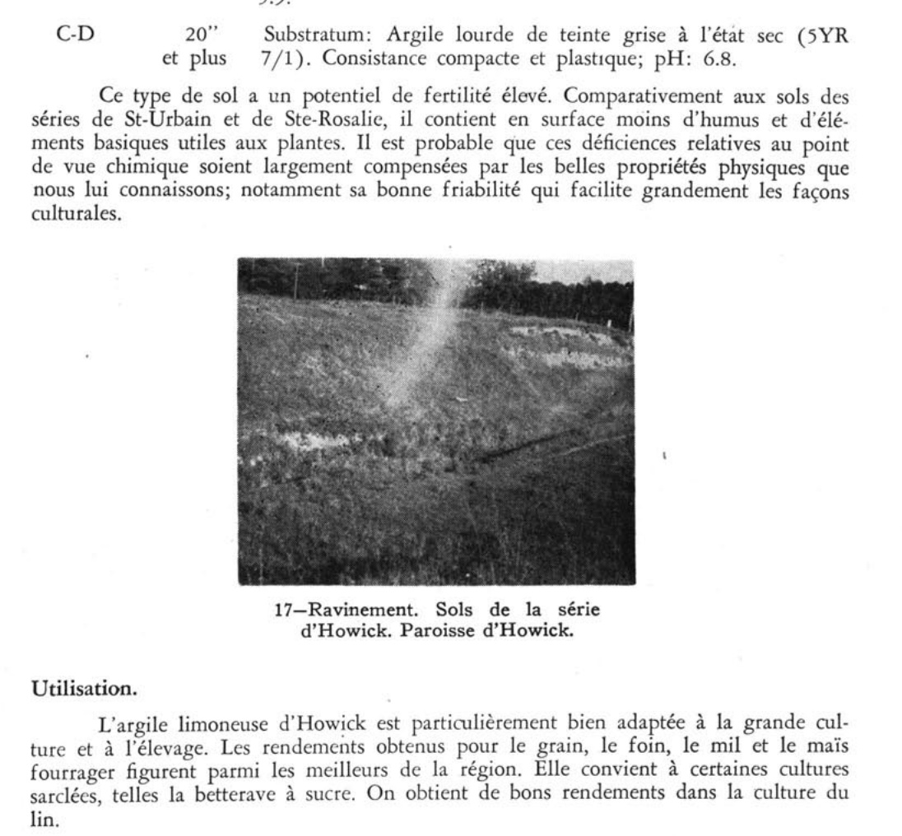
17—Ravinement. Sols de la série d'Howick. Paroisse d'Howick.
Utilisation.
L'argile limoneuse d'Howick est particulièrement bien adaptée à la grande culture et à l'élevage. Les rendements obtenus pour le grain, le foin, le mil et le maïs fourrager figurent parmi les meilleurs de la région. Elle convient à certaines cultures sarclées, telles la betterave à sucre. On obtient de bons rendements dans la culture du lin.
Pour accroître et maintenir la fertilité de ce type de sol, l'enfouissement de matières organiques, sous forme de fumier ou d'engrais verts, ainsi que l'application de pierre à chaux moulue sont indispensables. Les conditions de drainage, quoique bonnes dans l'ensemble, ont besoin d'être améliorées à maints endroits.
SOLS DÉRIVÉS DE SÉDIMENTS CHAMPLAIN
SOLS FORMÉS AUX DÉPENS DE GRAVIER SABLO-CAILLOUTEUX.
LE GRAVIER ET LE GRAVIER SABLO-LIMONEUX DE FRANKLIN (1567 ac. ou 0.93%)
Ces deux types présentent peu d'intérêt au point de vue agricole, pour le comté de Châteauguay; nous nous bornerons donc ici à quelques-unes de leurs caractéristiques générales. De plus, ils seront traités plus en détail dans une publication prochaine : celle du comté de Huntingdon.
Description du profil (en sol vierge) *
Horizon
Profondeur Min. max.
Description
A0
0-1½"
0-1"
Litière de feuilles sèches et de débris végétaux et décomposition.
Gravier fin gris cendré, en poches, dans les points les plus sableux.
B2-1
5½-18½"
9-14"
Gravier fin brun café, grenu, lâche; cailloux fréquents; pH: 5.7.
B2-2
8½-20½"
14-32"
Gravier fin brun café, de teinte plus claire que B2-1, grenu, lâche. Eléments bien triés et stratifiés; pH: 5.7.
C
20½"
32"
Gravier fin avec lits minces de cailloutis interstratifiés, gris brun à brun grisâtre, lâche, horizon profond et perméable.
Comme le fait voir la description du profil ci-dessus, ces types de sols contiennent une forte proportion de gravier; ce qui leur confère un bon drainage et conséquemment une bonne aération.
Par ailleurs, la présence d'une quantité plus ou moins abondante de gravier par unité de volume, amoindrit d'autant la fertilité de ces sols. Aussi, doit-on suppléer à celle-ci dans la pratique, spécialement pour la pomiculture, par l'enrichissement du sol en matière organique et par le maintien d'un bon paillis, afin de favoriser une plus grande absorption d'eau et une meilleure rétention des engrais chimiques appliqués.
Ces types de sols sont podzolisés. L'horizon A2, cependant, est discontinu et en poches; ce qui nous fait grouper ces sols parmi les bruns podzoliques.
Les variations observées dans la proportion de pierres, de gravier et de sable dans le profil, furent les principaux critères morphologiques utilisés par les pédologues Mailloux et Godbout, dans la différenciation de ces sols en leurs divers types, dans le comté de Huntingdon. Sur la carte des sols du comté de Châteauguay, les types de sols de la série de Franklin n'ont pas été séparés et figurent sous forme de complexes.
* D'après des notes de MM. Mailloux, A. et Godbout, G.
Utilisation.
La pomiculture convient bien à ces sols. Notons cependant, que pour la pleine réussite de cette culture, il importe de faire un choix judicieux du type de sol. Il ne faudrait donc pas choisir un type de la série de Franklin qui contiendrait une trop forte proportion de gravier et de pierres.
SOLS FORMÉS AUX DÉPENS DE SABLES SILICEUX
Les sols formés aux dépens de sables siliceux sont de quatre types: le sable de Sorel, le sable et le limon de St-Jude et les sables de St-Amable. Ces derniers forment plutôt, comme nous l'expliquerons plus loin, un complexe ou ensemble de types de sols
Ces divers types occupent des étendues restreintes dans le comté. Ils se cantonnent principalement dans les paroisses de St-Antoine Abbé, de Ste-Philomène et d'Ormstown.
Le sable excessivement drainé de Sorel est associé aux dunes; le sable et le limon imparfaitement drainés de St-Jude sont associés aux limons de St-Damase, les sables de St-Amable dont le drainage est variable sont associés aux types graveleux de Grande Ligne.
On les rencontre à une faible altitude dans la plaine; ils sont issus de roches-mères sableuses et perméables d'origine Champlain surmontant habituellement les dépôts argileux de même origine.
Étant donné que l'influence des facteurs déterminants: climat et roche-mère est à peu près la même sur toute l'étendue étudiée, la différenciation des profils de ces divers types de sols est surtout liée à celle de la topographie. La question est d'importance et mérite que nous nous y arrêtions.
En effet, là où les conditions topographiques sont accentuées (v.g.: sable de Sorel), la percolation de l'eau et le lessivage du sol sont à un maximum. Le type de sol qui s'y développe est un podzol montrant un horizon A2 d'appauvrissement très clair et cendreux et un horizon B d'accumulation plus ou moins induré par endroits en un "Ortstein" ferrugineux.
Quand les conditions topographiques sont celle d'une plaine unie (v.g. sols de la série de St-Jude), les sols montrent également un horizon A2 très net et cendreux, mais, le ou les horizons B d'accumulation ne sont pas indurés et cimentés en un ortstein ou alios ferrugineux. Ces derniers sont, par ailleurs parsemés de taches de "gley" de couleur rouille ou gris-bleuté, dues à des fluctuations saisonnières de la nappe phréatique. Ces types appartiennent au groupe de sols appelés: "Podzols à gley".
Là où la topographie est sub-horizontale ou en forme de cuvette, le sol est presque continuellement saturé d'eau et les phénomènes de lessivage sont réduits à un minimum. Sous nos conditions relatives de basses températures et de faible évaporation, cet état d'humidité extrême favorise une végétation de tourbière; les sols qui s'y développent sont caractérisés en surface par une épaisse couche de matière organique plus ou moins décomposée, suivant la réaction du milieu. On les désigne sous le nom de sols tourbeux ou semi-tourbeux (v.g. Série de St-Samuel).
Enfin, lorsque les diverses conditions topographiques se rencontrent dans un même champ, on observe toute cette gamme de sols que nous avons décrits plus haut. Étant donné que ceux-ci ne peuvent être cartographiés séparément à l'échelle de la carte des sols utilisée, nous les avons groupés sous le nom de "complexe de St-Amable."
Étude Pédologique du Comté de Châteauguay
Les sables du complexe de St-Amable (998 acres ou 0,58%)
Les sables du complexe de St-Amable sont presqu'entièrement localisés dans les paroisses d'Ormstown et de St-Antoine Abbé. On les rencontre également en association avec les sols des séries de Botreaux, de Grande Ligne et de Perrot. Notons cependant, dès le début que, dans Châteauguay, ce complexe ne se présente pas en étendues continues, comme c'est le cas dans les autres comtés de la Plaine de Montréal. Il est plutôt entrecoupé d'autres séries et occupe très souvent les dépressions ou les cuvettes formées par les dépôts morainiques.*
La topographie est fortement ondulée ou légèrement vallonnée. Aussi le drainage est-il variable. Il est bon sur les élévations et mauvais dans les dépressions. A ces derniers endroits, le sol est plus ou moins bariolé de taches de "gley". Ce phénomène dit de "gléification" est attribuable à la réduction et à l'oxydation successives des composés de fer et de manganèse, suivant les fluctuations de la nappe phréatique.
La texture de ces sols est très sableuse et contient très peu de colloïdes minéraux. La réaction de la surface est fortement à moyennement acide.
Ces sols ne contiennent pas de pierres. La végétation naturelle qui a subi beaucoup de perturbations au cours de son histoire, est composée principalement de bouleaux, d'épinettes et d'un peu d'orme.
Etant donné que les sables de St-Amable forment un complexe de sols qui appartiennent aux séries de Sorel, de Ste-Sophie, de St-Jude et de St-Samuel, nous essayerons d'illustrer ici par un graphique les divers profils de ce complexe (voir fig. 3).
* A ces derniers endroits les sols pourraient faire partie d'une autre série de sol.
Influence du micro-relief dans l'évolution des sols du complexe de St-Amable.
Figure : 3
Vallonnée
En pente
Unie
Déprimée
0" [Profil 1]
A0, Ap, Ae, B, C, Sable
[Profil 2]
A0, Ap, Ae, Bhf, G, C, Sable, Argile
[Profil 3]
A0, Ae, B(g), C, Sable, Argile
[Profil 4]
A0, Ae, G, M1(c), M2(c), M3(c), Argile
Sable de SOREL (Podzol)
Sable Limoneux de Ste Sophie (Podzol)
Limonsableux de ST-JUDE (Podzol à gley)
Sable humifère de ST-Samuel (Semi-Tourbeux)
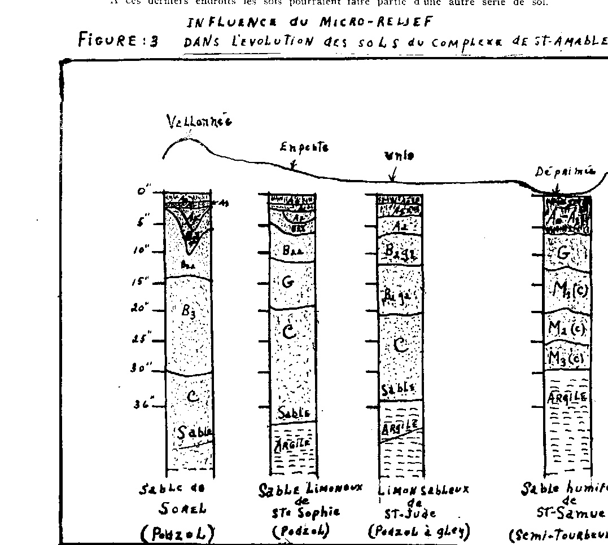
ÉTUDE PÉDOLOGIQUE DU COMTÉ DE CHÂTEAUGUAY
Comme le montre la fig. 3, les divers types qui composent le complexe de St-Amable, à l'exception du sable de St-Samuel, appartiennent au groupe génétique des podzols. Ceux-ci sont caractérisés par un horizon d'appauvrissement A2 plus ou moins épais et fortement décalcifié. D'une manière générale, comme nous le verrons au chapitre des analyses, ces sols ont une fertilité naturelle très faible.
Les sols de la série de St-Samuel, que l'on rencontre dans les dépressions, sont très humifères et moins décalcifiés en surface que les précédents. Ils appartiennent donc au groupe de sols connus sous le nom de sols "semi-tourbeux". D'une manière générale, ces derniers sont plus mélanisés, c'est-à-dire ont plus de matières minérales incorporées à leur humus et sont moins acides que ceux que nous trouvons plus au nord, par exemple dans les comtés de Nicolet et de Lotbinière.
Utilisation.
Dans nos conditions économiques actuelles, les sables de St-Amable nous semblent peu propices à la grande culture. Pour une utilisation plus économique de ces sols, il convient d'y pratiquer certaines cultures spéciales telles celles des fraises et des framboises, ainsi que certaines industries connexes telles l'élevage de la volaille, des dindes et des abeilles.
SABLE DE SOREL (155 acres ou 0.09%)
Le sable de Sorel se trouve dans la paroisse de Saint-Antoine-Abbé (partie nord-est seulement).
A cause de sa topographie vallonnée et de la nature fortement sableuse (90% et plus) de sa roche-mère, ce type de sol est caractérisé par un drainage externe et interne très bon, voire même excessif.
En terrains déboisés, ces sols sont fréquemment dénudés et donnent naissance aux dunes.
Ils ne contiennent pas de pierres. La végétation arborescente était vraisemblablement constituée d'érable à sucre, de hêtre et de tilleul. Les petits boisés actuels sont composés de bouleaux, d'épinettes et de pins blancs. Dans les pacages dominent la danthonie (danthonia spicata), l'épervière orangée (Hieracium aurantiacum) et l'épervière jaune (hieracium pilosella).
Sable jaune foncé à brun — rouge foncé avec accumulation d'humus; pH: 5.5 — 6.0.
B2
9-15"
Sable jaune-brun à brun ocreux cimenté localement en un "Ortstein" ferrugineux; pH: 5.8 — 6.1.
B3
15-30"
Sable de coloration jaune pâle . pH: 5.8 — 6.3.
C
30" et plus
Roche-mère: Sable gris à jaune très pâle, meuble et très perméable. pH: 6.0 – 6.4.
A cause de sa nature trop sableuse et de l'absence de colloïdes minéraux et organiques riches en bases, ce type de sol a une fertilité très faible. Le manque de chaux et de matière organique est très prononcé.
Utilisation.
Ce sol est plus ou moins inculte et sa vocation culturale première semble être la forêt. Dans certaines régions, comme celle de Joliette, le sable fin de Sorel, convient à certaines cultures spéciales telles celles du tabac à cigarettes et du houblon.
Etant donné qu'il est sujet à l'érosion éolienne, il est recommandable de prévenir celle-ci par la plantation de rideaux protecteurs composés d'essences telles que : pin blanc, pin rouge, pin gris, épinette, saule de Babylone, pin Mugho, saule Laurier. Il faudrait, évidemment, étendre entre ces rideaux des branches et de la paille afin de fixer le sol. Enfin, là où il est nécessaire de cultiver le sol, une protection et une disposition spéciale des cultures s'imposent si l'on veut prévenir l'érosion par le vent.
LE SABLE ET LE LIMON DE ST-JUDE (809 acres ou 0.49%)
Le sable et le limon de St-Jude réunis couvrent la faible étendue de 809 acres environ dans le comté; c'est pourquoi nous les discuterons ensemble.
Tous deux issus de roches-mères sableuses et perméables, ils ne diffèrent entre eux que par la texture de la surface. Le premier est nettement sableux et le second contient une certaine proportion de limon en surface. On les retrouve presqu'entièrement dans la paroisse de Saint-Antoine-Abbé (parfaite N.-est seulement), de Ste-Philomène et de St-Jean-Chrysostôme. Ils sont parfois associés aux sols de la série de St-Damase dont ils ne diffèrent que par l'épaisseur de leur profil.
La topographie des sols de cette série est celle d'une plaine à peu près horizontale dont la déclivité dépasse à peine 3 ou 4%, pente suffisante pour un bon drainage externe.
La percolation ou le drainage interne du sol, en raison de sa texture sableuse, serait très bonne si n'était de la présence à trois pieds de profondeur environ, d'une couche d'argile presque continuellement saturée d'eau.
Les sols de la série de St-Jude ne contiennent pas de pierres. La végétation arborescente sur les boisés existants est composée de conifères : épinette, sapin, mélèze, et de feuillus : bouleaux, et aulnes surtout.
DESCRIPTION DU PROFIL À L'ÉTAT VIERGE
Horizons
Profondeur
Description
A0
½"
Horizon constitué de mousses principalement.
A1
½-3"
Horizon peu minéralisé de texture sableuse et constitué d'un humus acide (mor) de teinte noire, graisseux; pH: 5.4.
A2
3-6"
Horizon lessivé (bleicherde) de coloration gris cendré, sans structure, constitué presqu'exclusivement de quartz; pH: 5.0 — 5.4.
B2G1
6-12"
Sable brun de ton rouge. Horizon localement induré en un "Ortstein" ferrugineux, de teinte rouille à certains endroits; pH: 5.8 — 6.0.
B2G2
12-20"
Sable brun — jaune pâle à gris — jaune, contenant moins de taches de rouille que celui de l'horizon précédent; pH: 6.5 — 6.9.
C
20-30"
Roche-mère: Sable de teinte gris pâle avec des trainées plus sombres, dues à la présence de mica noir. Horizon très meuble et perméable; pH: 6.5 — 7.0.
D
30" et plus
Substratum: argile gris bleuté, réaction neutre ou calcaire, de consistance très plastique, imperméable.
ÉTUDE PÉDOLOGIQUE DU COMTÉ DE CHÂTEAUGUAY
Comme on le constate à la lecture du profil, la surface de ces sols a été profondément lessivée et appauvrie en ses constituants minéraux. Le potentiel de fertilité est donc très faible. L'humus en provenance de conifères est fortement acide et le sol sur toute son épaisseur est très pauvre en colloïdes argileux.
Par ailleurs, en se basant sur la réaction de ces sols et sur certaines analyses effectuées sur des sols de la même série dans d'autres comtés, l'on constate que le sous-sol et la roche-mère sont plus ou moins saturés d'éléments basiques. Cela proviendrait, croyons-nous, du fait que les eaux, lors de la montée de la nappe phréatique, libèrent une certaine proportion des bases qu'elles ont dissoutes au contact de la couche argileuse sous-jacente.
Il y a lieu de se demander si ce contenu en éléments basiques ne pourrait pas être mis à profit dans la culture des plantes calcicoles telles que la luzerne. Évidemment, il faudrait d'abord favoriser la reprise de cette plante par l'apport de généreuses doses de pierre à chaux moulue. Une fois établie, la luzerne, grâce à ses racines profondes, pourrait utiliser les éléments basiques du sous-sol.
Utilisation.
Une forte proportion de ces types de sols est laissée en bois ou utilisée comme pacage.
Pour l'obtention de bons rendements dans la plupart des récoltes de grande culture, ces types de sols ont besoin tout d'abord d'être drainés et fortement chaulés. L'application de matière organique sous forme de fumier et d'engrais verts, jointe à celle d'engrais chimiques appropriés est également nécessaire.
Ces types de sols peuvent être utilisés avec avantage pour certaines cultures spéciales telles celle de la pomme de terre, quand ils se trouvent à proximité des marchés. La culture de la betterave à sucre, d'après quelques essais, n'a pas donné de bons résultats : d'une manière générale, les betteraves, bien qu'elles soient riches en sucre, ne donnent cependant pas un tonnage suffisant à l'acre.
Pour terminer, disons que l'érosion n'est nullement à craindre sur ces types de sols.
SOLS FORMÉS AUX DÉPENS D'ÉLÉMENTS FINS ARGILEUX
On compte deux séries de sols formés aux dépens d'éléments argileux d'origine Champlain : celle de Rideau et celle de Ste-Rosalie. La première comprend un type : l'argile de Rideau et la seconde en comprend deux : l'argile de Ste-Rosalie et l'argile sableuse du même nom.
Au point de vue physiographique, ces divers types occupent dans le comté, comme dans la plaine de Montréal d'ailleurs, de vastes étendues planes. On les retrouve surtout dans les paroisses de Ste-Philomène, de Ste-Martine (St-Paul-de-Châteauguay), de Howick et de St-Jean Chrysostôme.
Les sols de la série de Rideau avoisinent les abords immédiats des rivières ou des dépressions naturelles, tandis que ceux de la série de Ste-Rosalie s'en éloignent.
La roche-mère qui a donné naissance à ces sols est fortement argileuse (70 et même 80% d'argile), de structure massive, de consistance très plastique et de coloration gris-bleu. Elle est constamment saturée d'eau; ce qui la rend visqueuse et facilement pétrissable. La réaction de celle-ci est neutre ou faiblement alcaline; elle ne contient pas de carbonates libres en deçà d'une profondeur de trois pieds.
Au point de vue pédogénétique, ces sols appartiennent au groupe des "sols de gley" (1) dont nous avons parlé précédemment. Ils sont relativement peu décalciés et leur humus est bien décomposé ou incorporé à la matière minérale. Aussi, figurent-ils parmi les meilleurs du comté pour la grande culture et l'industrie laitière. Les principaux problèmes qu'ils posent à l'attention du cultivateur sont ceux du drainage tout d'abord et en second lieu celui d'une application adéquate de pierre à chaux moulue.
L'ARGILE DE RIDEAU (8800 acres ou 5.18%)
Cette argile s'étend sur une largeur de deux à trois milles le long de la rivière Châteauguay dans les paroisses de Ste-Martine (St-Paul de Châteauguay) et d'Howick.
Sa topographie est celle d'une plaine unie dont la pente est appréciable à l'oeil. De plus, cette argile a été fortement entaillée et érodée par l'eau aux abords des rivières des Fèves et des Esturgeons. A ces endroits le sol est dénudé et parsemé de ravins. Nous avons indiqué ces étendues ravinées sur la carte des sols par les lettres RI qui signifient: sols ravinés de la série de Rideau.
Cette dénivellation naturelle favorise un bon drainage externe. Le drainage interne, par ailleurs, à cause de la forte teneur en argile (60% et plus dans le sous-sol), est lent. C'est ce qui explique la présence d'abondantes taches de "gley" dans le profil.
L'argile de Rideau contient relativement peu d'humus. Aussi a-t-elle tendance à se fendiller et à former des mottes lorsqu'elle se dessèche.
Cette argile est finement homogène dans tout l'épaisseur du profil et ne contient pas de pierres.
La végétation naturelle à l'origine devait être composée d'érable rouge, de chêne blanc, de pin rouge et d'orme.
DESCRIPTION DU PROFIL (en sols cultivés)
Horizons
Profondeur
Description
Ac
0-5"
Argile faiblement à moyennement humifère, de teinte gris clair à l'état sec (2.5Y 7/2). Structure granuleuse, consistance friable; pH: 5.6.
(B) G1
5-24"
Argile très lourde, de teinte gris-brun clair (2.5Y 6/2) à l'état sec, faiblement mouchetée de rouille. Structure polyédrique grossièrement développée, consistance ferme et compacte des agrégats. pH: 6.0.
C
24" et plus
Roche-mère: Argile très lourde, gris - brun clair (2.5Y 6/2) à l'état sec. Structure massive, consistance très plastique; pH: 6.4 - 6.6.
(1) En anglais: "gleisolic soils".
Note: Le long des berges, certaines coupes nous laissent voir un horizon A2 de coloration blanche et de consistance farineuse, indication fort probable d'une évolution du sol vers le gris-brun podzolique.
Étude Pédologique du Comté de Châteauguay
Comme l'indique la description du profil, l'argile de Rideau est fortement acide en surface; quant à sa teneur en humus et en éléments basiques, notamment le calcium, elle est relativement faible si on la compare à celle des sols argileux des séries de Ste-Rosalic et de St-Urbain.
Utilisation.
Ce type de sol est presqu'entièrement cultivé. De par sa nature argileuse, il convient très bien à la grande culture et à l'industrie laitière.
En effet, c'est sur ce type de sol et sur son homologue: l'argile limoneuse d'Howick, que nous avons vu les meilleurs troupeaux du comté, sinon de la province.
La culture des céréales, du maïs fourrager et du mil donne de très bons rendements. Les légumineuses, trèfle et luzerne, viennent très bien, pourvu que l'on pratique un bon système de culture en rotation et que l'on ajoute de fortes doses de pierre à chaux moulue (2-3 tonnes à l'acre).
Dans bien des cas, fait intéressant à constater, l'addition de fumier et de superphosphate ou de phosphate Thomas, sur les sols bien drainés et suffisamment chaulés est la pratique qui a donné les résultats les meilleurs et les plus économiques.
L'Argile de Ste-Rosalie (6305 acres ou 3.72%)
L'argile de Ste-Rosalie occupe surtout les vastes étendues planes des paroisses de Ste-Philomène, de St-Urbain et de Ste-Martine (St-Paul de Châteauguay). A St-Jean Chrysostôme, elle occupe la majeure partie de cette étendue connue sous le nom de "Flats". A St-Urbain, tout près des limites du comté, nous avons trouvé une très faible étendue d'argile interstratifiée de couches de sable, que nous avons, par exception, inclue dans la série de Ste-Rosalie. Les échantillons prélevés à cet endroit figurent au tableau des analyses sous les numéros: 1955, 1956, 1957, 1958. A noter le fort pourcentage de sable dans l'horizon B-G.
La dénivellation de l'argile de Ste-Rosalie est difficilement appréciable à l'oeil et ne dépasse pas 3%. C'est pourquoi le drainage externe est particulièrement lent et pose un sérieux problème. Le drainage interne est également lent et même mauvais, à cause de la trop grande compacité du sous-sol, qui contient généralement 60% et plus d'argile, (cf. tableau des analyses).
Le profil est bariolé de taches de gley de coloration rouille ou gris-bleuté; celles-ci sont abondantes près de la surface, soit à une profondeur variant entre 4 et 7 pouces. Une fois labourée, l'argile prend une coloration aux teintes variées de noir, de gris et de rouille. C'est probablement pour cette raison que plusieurs cultivateurs l'appellent: "la glaise rouillée."
L'argile de Ste-Rosalie ne contient pas de pierres. La végétation forestière est aujourd'hui presqu'entièrement disparue; on en retrouve quelques vestiges dans les quelques ormes disséminés çà et là dans la plaine. A l'origine, la végétation arborescente devait être constituée principalement d'érable rouge, de chêne blanc, de pin rouge et d'orme.
DESCRIPTION DU PROFIL EN SOL VIERGE
Horizons
Profondeur
Description
Aoo
0-½"
Horizon composé de feuilles et de débris de plantes non décomposées. Horizon parfois absent.
Ao
½-1½"
Horizon composé de débris de plantes partiellement décomposées. Horizon parfois très mince.
A1
1½-5½"
Argile humifère de coloration gris foncé (10YR 4/1) à l'état sec. L'humus est très mélanisé. Structure granuleuse mais variable. Consistance friable; pH: 5.1.
A2-G1
5½-9½"
Argile lourde, gris clair (10YR 7/1) ou blanche (5Y 8/2) à l'état sec, fortement mouchetée de rouille. Consistance plastique; pH 5.2.
G2
9½-14"
Argile lourde, de teinte gris-brun clair (10YR 6/2). Mouchetures de rouille moins intenses et moins prononcées que dans l'horizon précédent. Structure très massive, consistance très plastique; pH 5.7 — 6.2.
C
14" et plus
Roche-mère: argile très lourde d'origine Champlain. De coloration nettement grise (10YR 6/1), parfois gris-bleuté. Structure massive, consistance très plastique. Constamment humide; pH 6.2 — 7.0.
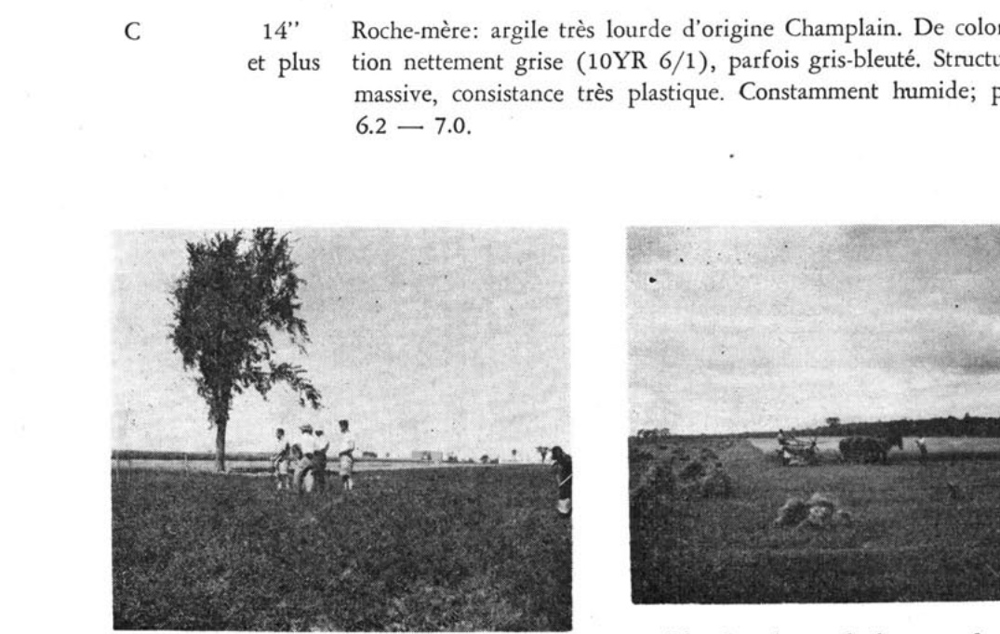
19—Argile de Ste-Rosalie. Topographie plane. Notez la belle pousse de luzerne. Ste-Martine.
18—L'avoine donne de bons rendements et une pousse uniforme sur l'argile de Ste-Rosalie.
Utilisation.
L'argile de Ste-Rosalie, par sa texture lourde, convient particulièrement bien à la grande culture, pourvu qu'elle soit bien drainée et chaulée suffisamment (2-3 tonnes à l'acre).
Étant donné qu'elle a tendance à prendre en mottes, il importe d'exécuter les travaux d'ensemencement et les façons culturales en temps opportun; c'est-à-dire, lorsqu'elle n'est ni trop sèche ni trop humide.
Les cultures du choux-de-Siam, du maïs fourrager, des grains et du mil donnent d'excellents rendements. La production d'herbes à pâturage est souvent inférieure à la moyenne, probablement à cause de la trop grande compacité du sol ou de l'état de sécheresse, qui sévit parfois dans la Plaine de Montréal durant les mois d'été.
Pour la culture de la luzerne tout spécialement, l'argile de Ste-Rosalie doit être drainée au moyen de labour en planches rondes appelé labour Richard, ou par l'usage de drains souterrains. Une généreuse application de chaux s'avère également nécessaire.
Le profil nous fait voir un sol peu lessivé et relativement riche en éléments basiques et en humus. La réaction de la surface, en sols vierges, est fortement acide; mais au contraire, celle du sous-sol est presque neutre. Le mélange de la surface et du sous-sol, grâce à un labour assez profond, améliore sensiblement la réaction de ce sol.
Pour la plupart des récoltes de grande culture, l'argile de Ste-Rosalie est déficiente en phosphate et est de mauvaise structure physique. Le fumier améliore beaucoup ses propriétés physiques.
20 — La betterave fourragère sur l'argile de Ste-Rosalie. Paroisse de Ste-Philomène.21 — La culture mixte et l'industrie laitière conviennent très bien aux sols de "gley" drainés, de la série de Ste-Rosalie. Paroisse de Ste-Philomène.
ÉTUDE PÉDOLOGIQUE DU COMTÉ DE CHÂTEAUGUAY
Le lin et certaines cultures sarclées, telles celles des tomates, des fèves et des pois ont donné de bons rendements et des revenus fort intéressants à plusieurs cultivateurs.
La culture de la betterave à sucre, à cause de son introduction récente, n'occupe qu'une très faible étendue. Quoiqu'il en soit, les résultats obtenus sont très encourageants et il y a lieu de croire qu'elle prendra de l'expansion avec les années.
D'après l'expérience de plusieurs cultivateurs, les rendements ont été considérablement accrus par la pratique d'un bon système de rotation (de cinq années habituelle-ment) et par l'application du fumier et de phosphates (superphosphate à 20% ou phosphate Thomas).
L'ARGILE SABLEUSE DE STE-ROSALIE (12,444 acres ou 7.33%)
Les propriétés de cette argile sableuse sont à peu près les mêmes que celles de l'argile de Ste-Rosalie dont nous avons parlé précédemment. Pour cette raison, nous n'insisterons pas davantage sur ce type de sol; contentons-nous de mentionner qu'il contient du sable à la surface; ce qui le rend plus meuble et plus facile à travailler que l'argile de Ste-Rosalie proprement dite.
Au point de vue de l'utilisation de ce type de sol, notons qu'il se prête bien aux cultures sarclées telles cellents des tomates, des fèves et des pois. Quant à la pomme de terre, elle donne de bons rendements, mais elle souffre généralement de la galle (actynomyces scabies). De plus, elle ne se conserve pas longtemps.
22.—Le maïs fourrager donne d'excellents rendements sur l'argile de Rideau et de Ste-Rosalie. Notez la pousse uniforme. Ferme de l'école d'agriculture de Ste-Martine.
SOLS FORMÉS AUX DÉPENS D'ÉLÉMENTS FINS ARGILEUX CALCAIRES
On compte une série de sols formés aux dépens d'éléments fins argileux calcaires. Cette série tire son nom de la localité de St-Urbain; elle se subdivise en trois types: l'argile proprement dite, l'argile limoneuse et le limon argileux.
Les deux premiers types mentionnés occupent de vastes étendues planes et homogènes dans une plaine basse ou légèrement déprimée, dont l'altitude ne dépasse guère 100 à 115 pieds. Le troisième type, le limon fin argileux de St-Urbain, est irrégulièrement distribué dans le comté et occupe les pentes ou le pied des côteaux. Vu dans cette position, il est nécessairement variable dans sa composition physique et doit, pour cette raison, être considéré comme un type de transition entre la plaine proprement dite et les côteaux qui la dominent.
Tous ces types de sols sont issus de dépôts Champlain argileux qui se seraient accumulés en eau tranquille. Cette roche-mère contient un très fort pourcentage d'argile, soit de 60 à 70% ou plus. Celle-ci est de coloration grise, de réaction alcaline (pH; 7.5 — 8.3) et donne généralement une effervescence au contact de l'acide chlorhydrique dilué. De plus, elle est constamment saturée d'eau, ce qui la rend pétrissable et extrêmement plastique.
Les sols de la série de St-Urbain sont imparfaitement drainés et de ce fait, sont fortement humifères. Leur forte teneur en humus les classe dans le groupe des
23 — La culture du lin sur l'argile, série de Ste-Rosalie. Le rouissage. Paroisse de Ste-Philomène.
sols à gley humifères. La couche humifère, qui surmonte un horizon B-G argileux de teinte grise et tacheté de rouille, atteint une épaisseur de 10 à 12 pouces environ. Elle est généralement très bien décomposée et assez bien minéralisée.
Ces sols n'ont pas été décalcifiés sous l'effet du climat humide; aussi, figurent-ils parmi les plus fertiles du comté sinon de toute la province de Québec.
L'ARGILE DE ST-URBAIN (3629 acres ou 2.14%)
L'argile de St-Urbain est localisée principalement dans les paroisses de St-Urbain, de Ste-Martine (St-Paul de Châteauguay) et de St-Jean Chrysostome.
Sa topographie est celle d'une plaine sub-horizontale. C'est pour cette dernière raison que le drainage externe est mauvais; quant au drainage interne, à cause de la forte teneur en argile du sol, il est également mauvais.
La surface est fortement humifère et de réaction faiblement acide ou neutre; le sous-sol et la roche-mère sont alcalins et donnent généralement l'effervescence au contact de HCl dilué.
Cette argile ne contient pas de pierres et est finement homogène dans toute l'épaisseur de son profil.
La végétation arborescente devait à l'origine être composée principalement d'érable rouge, de chêne, de frêne et d'orme.
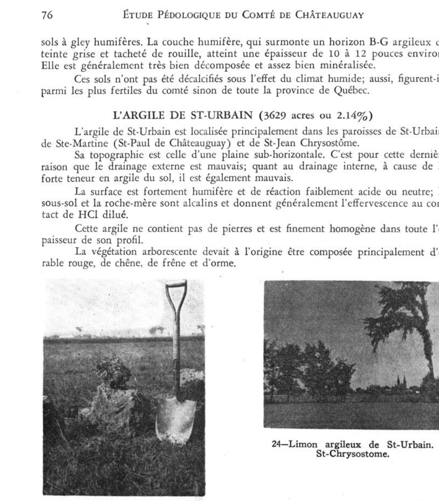
25–L'horizon A fortement humifère minéralisé est très épais sur les sols de la série de St-Urbain. Sol de Gley humifère, (Dark gray gleisolic). Paroisse d'Howick.
24–Limon argileux de St-Urbain. St-Chrysostome.
DESCRIPTION DU PROFIL (sols cultivés)
Horizons
Profondeur
Description
Ac
0-8"
Argile de teinte noire à l'état humide ou grise (10YR 5/1) à l'état sec, fortement humifère avec structure granulaire bien développée. Consistance friable; pH: 6.3 — 7.0.
G
8-18"
Argile très lourde, gris clair (10YR 7/1) avec un ton olive; structure massive ou granulaire. Consistance compacte. Fait effervescence parfois au contact de HCl dilué; pH: 7.2 — 7.8.
Cca
18" et plus
Roche-mère: Argile très lourde, calcaire et de teinte gris-bleu ou gris clair à l'état sec (5Y 7/1), avec un ton olive. Structure massive, consistance très plastique; elle réagit au contact de HCl dilué. pH: 7.5 — 8.3.
Comme l'indiquent le profil ci-dessus et les analyses rapportées à la fin de ce travail, ce type de sol ne possède ni horizon illuvial ni horizon éluvial; en d'autres termes, c'est un sol qui n'a pas ou à peu près pas été lessivé.
Son potentiel de fertilité est très élevé, si l'on considère sa teneur en azote et en calcium. Il présente par ailleurs un certain déséquilibre dans ses éléments principaux de fertilité. En effet, sa teneur en azote est généralement trop élevée par rapport à celle du phosphore et de la potasse. L'addition de ces derniers éléments, sous forme d'engrais chimiques est parfois nécessaire pour l'obtention d'un meilleur équilibre des principaux éléments de fertilité de ce sol.
Utilisation.
Une grande étendue de ce type de sol a été mise en culture. Aux endroits où son drainage est encore défectueux, il est réservé au pacage. Les principales cultures sont : le grain, le trèfle et le mil. Grâce à des travaux d'égouttement, les cultures sarclées ont pris plus d'importance depuis un certain nombre d'années. Les tomates, les pois, les fèves et le lin donnent de bons rendements. La betterave à sucre, moyennant de bons travaux de drainage, conviendrait bien, semble-t-il, à ce type de sol.
La confection de canaux artificiels et surcreusage des cours d'eau déjà existants, joints à la pratique du labour Richard, s'avèrent indispensables à un meilleur égouttement et à la pleine mise en valeur de ce type de sol.
Pour ce qui est de l'érosion, on ne peut pas le considérer comme une menace, mais il faut plutôt appréhender les dangers d'inondation du printemps; quand à ces derniers, ils ne pourraient être évités qu'en pratiquant de sérieux travaux d'égouttement.
L'ARGILE LIMONEUSE DE ST-URBAIN (2700 acres ou 1.59%)
L'argile limoneuse de St-Urbain occupe deux grandes étendues homogènes: la première, dans la paroisse d'Howick, la seconde, dans la paroisse d'Ormstown.
Cette argile ressemble à tous points de vue à celle de St-Urbain, sauf qu'elle est parfois plus limoneuse en surface, spécialement là où elle avoisine les sols argileux de la série d'Ormstown. Elle est très fertile et compte parmi les sols les plus réputés du comté, pour la grande culture et l'industrie laitière.
LE LIMON FIN ARGILEUX DE ST-URBAIN (4400 acres ou 2.59%)
Ce type de sol, tel que mentionné précédemment, occupe çà et là dans le comté et plus spécialement dans les paroisses d'Ormstown et d'Howick les pentes ou le pied des côteaux constitués de till calcaire. Ses caractéristiques pédologiques et agronomiques sont à peu de choses près celles des autres sols de la série de St-Urbain.
SOLS FORMÉS AUX DÉPENS D'ÉLÉMENTS FINS ARGILEUX SUR TILL CALCAIRE
On compte deux types de sols issus d'éléments argileux reposant sur un till calcaire: le limon fin argileux de Châteauguay et celui de St-Blaise.
La roche-mère est constituée d'une alluvion argileuse d'origine Champlain à réaction neutre ou alcaline. Elle est d'épaisseur variable et repose habituellement, à trois pieds de profondeur environ, sur un till calcaire.
ÉTUDE PÉDOLOGIQUE DU COMTÉ DE CHÂTEAUGUAY
Cest deux types diffèrent entre eux principalement par leur drainage et leurs caractéristiques topographiques: le limon fin argileux de Châteauguay est assez bien drainé et occupe les pentes des croupes morainiques calcaires; tandis que le limon fin argileux de St-Blaise est imparfaitement ou mal drainé et se rencontre dans une plaine ondulée et plus ou moins parsemée de petites roches et de gros blocs erratiques.
LE LIMON FIN ARGILEUX DE CHÂTEAUGUAY (6016 acres ou 3.54%)
Dans les paroisses d'Ormstown, de St-Jean Chrysostôme et de Châteauguay, le limon fin argileux de Châteauguay repose sur les flancs des croupes morainiques vallonnées et calcaires. A ces endroits, il est en association avec les sols de la série de St-Bernard ou de Norton. De par sa position topographique, il est à proprement parler un type de transition entre les sols argileux d'origine alluvionnaire et les sols caillouteux dérivés de till glaciaire.
La profondeur moyenne du sol, ainsi que la quantité de pierres qu'il contient, varient. Il est généralement plus épais et moins pierreux au pied des pentes et généralement plus mince, moins argileux et plus pierreux, en gagnant le sommet de celles-ci.
Le drainage externe est bon; tandis que le drainage interne s'alanguit au contact de la couche de till ou au pied des pentes.
La végétation arborescente est composée généralement d'érable à sucre, de hêtre, de tilleul et d'orme. A l'origine, l'association: érable à sucre — hêtre devait être dominante. Cette association a été considérée par quelques auteurs comme la végétation "climax" de cette région.
Le sol en équilibre avec cette végétation est un gris-brun podzolique dont le degré d'évolution varie selon sa texture et sa position topographique.
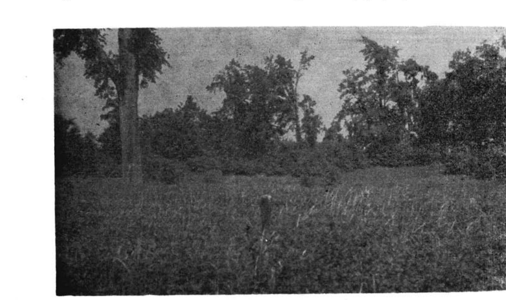
26—La luzerne est de belle venue sur les sols limono-argileux de la série de Châteauguay. Châteauguay.
ÉTUDE PÉDOLOGIQUE DU COMTÉ DE CHÂTEAUGUAY
DESCRIPTION DU PROFIL (sols vierges)
Horizons
Profondeur
Description
A0
1-0''
Horizon composé de débris végétaux et d'humus en voie de formation.
A1
0-5''
Limon fin argileux, riche en humus mélanisé, de teinte brun-gris (10YR 6/2) à l'état sec. Structure "en miettes" bien développée. Consistance friable; pH: 5.9.
A2
5-12''
Limon fin argileux, brun-gris clair à gris clair à l'état sec (2.5YR 7/2). Structure "polyédrique" et granulaire, consistance ferme; pH: 5.5.
B21
12-18''
Limon fin argileux, brun-gris à gris-brun. Structure "polyédrique" et nuciforme assez bien développée; consistance ferme mais friable; pH: 6.4.
B22
18-25''
Argile de teinte brun gris à l'état sec (10YR 6/2). Structure "polyédrique" assez bien développée ou nuciforme. Consistance friable à un peu plastique; pH: 6.7.
G
——
Horizon de gley d'épaisseur variable; plus épais et plus près de la surface au bas des pentes, plus ou moins absent au sommet de celles-ci.
Cca
30'' environ
Roche-mère: Argile contenant un peu de cailloux; structure granuleuse peu développée ou massive, consistance un peu plastique. Réagit un peu au contact de HCl dilué; pH: 7.9.
D
36'' environ
Substratum: Till argileux de teinte grise à gris-brun clair, très compact et très pierreux. Réagit vivement au contact de HCl dilué; pH: 8.3.
Comme il sera expliqué plus loin, la fertilité de ce type de sol est très élevée. La réaction de la surface est moyennement à faiblement acide, tandis que celle du sous-sol est neutre à alcaline.
Utilisation.
Ce type de sol est cultivé dans presque toute son étendue. Parmi les nombreuses variétés de plantes cultivées auxquelles il convient, citons: les grains, le maïs fourrager, le mil et spécialement la luzerne; de plus, il est bien adapté aux cultures sarclées en général, exception faite de la pomme de terre, (à cause du danger de la galle), ainsi qu'à la pomiculture et à l'acériculture.
Pour l'obtention de meilleurs rendements, l'addition d'une faible quantité de pierre à chaux moulue et tout spécialement de phosphates, s'avère nécessaire.
LE LIMON FIN ARGILEUX DE ST-BLAISE (1416 acres ou 0.83%)
Le limon fin argileux de St-Blaise occupe, sur les limites orientales des paroisses de Châteauguay et de Ste-Philomène, la plaine unie ou légèrement ondulée. La déclivité de celle-ci varie de 3 à 5% et l'altitude, de 125 à 150 pieds.
Ce type de sol s'est formé aux dépens d'une alluvion argilo-sableuse d'origine Champlain ou d'un till calcaire fortement remanié.
L'influence du till dans la formation et l'évolution de ce sol s'observe:
1.—Par la présence, en plus ou moins grande abondance, de petites roches à la surface et à l'intérieur du profil. Celles-ci se font plus nombreuses au contact du till, situé habituellement à environ deux pieds de profondeur.
2.—Par la forte teneur en humus et l'abondance des teintes rouille et gris-bleuté, indices d'un mauvais drainage.
3.—Par la réaction à peu près neutre de la surface et alcaline du sous-sol.
Généralement, à une profondeur variant de 12 à 30 pces, le sol fait effervescence.
Selon toute apparence, la végétation arborescente devait être composée, à l'origine, d'érable rouge, de frêne, de tilleul et d'orme.
Le sol en équilibre avec cette végétation est considéré comme un "sol de gley".
DESCRIPTION DU PROFIL (en sols cultivés)
Horizons
Profondeur
Description
Ac
0-5"
Limon fin argileux, riche en humus, bien mélanisé et de coloration plutôt noire. Structure "en miettes" assez bien développée. Consistance friable. Plus ou moins parsemé de petites roches. Réaction ou pH: 6.0.
BG1
5-15"
Limon fin argileux brun-jaune. Structure en miettes modérément développée. Consistance friable à légèrement plastique. Horizon tacheté de "gley" de teinte rouille. Réaction ou pH: 7.5.
BG2
15-20"
Horizon semblable au précédent, sauf pour la structure, qui est moins bien développée. Réaction ou pH: 7.5 — 7.8.
C
Variable.
Roche-mère: Alluvion ou till remanié très argileux, gris-jaune. Structure massive. Consistance compacte. Plus ou moins pierreux. Réagit au contact de HCl dilué. Réaction ou pH: 7.5 — 8.2.
D
Variable.
Substratum: Till limono-argileux et caillouteux de teinte grise, très compact et réagissant vivement au contact de HCl dilué; pH: 8.0 — 8.3. Se rencontre habituellement à moins de trois pieds de pronfeur.
D'après l'étude du profil ci-dessus et certaines analyses d'un même type de sol provenant d'un comté limitrophe, celui de Laprairie, on peut conclure que ce sol est très fertile. Son contenu en humus et en éléments basiques, notamment le calcium et le
magnésium, est très élevé. C'est à cause de sa forte teneur en carbonates de calcium et de magnésium, croyons-nous, que ce sol a résisté aux phénomènes de la podzolisation et n'a été que peu ou pas lessivé ou appauvri en éléments basiques.
Utilisation.
Ce sol est cultivé dans toute sa superficie. Les systèmes d'exploitation agricole dominants et qui lui conviennent le mieux sont: La grande culture et l'industrie laitière.
Les rendements obtenus pour les grains et les foins de légumineuses et de mil, figurent parmi les meilleurs du comté et de toute la Plaine de Montréal. La culture de la luzerne sur sols bien drainés mériterait d'être encouragée d'une façon toute particulière. La culture du lin, ainsi que quelques cultures spéciales, telles celles de la tomate et du blé-d'Inde à conserves, donnent de bons rendements et des revenus intéressants aux cultivateurs.
Pour assurer et augmenter la productivité de ce sol déjà fertile, il importe de le drainer convenablement. L'addition de phosphates seuls ou avec potasses est nécessaire.
Les méfaits de l'érosion ne sont nullement à craindre pour ce type de sol.
SOLS FORMÉS AUX DÉPONS DE MINCES DÉPÔTS SILICEUX SUR ARGILE
Sous cette rubrique on classe deux types de sol: le limon sableux de St-Damase et le limon de St-Damase. Ils sont tous deux issus d'une roche-mère sableuse d'origine Champlain dont la réaction est près de la neutralité.
LE LIMON SABLEUX DE ST-DAMASE (1429 acres ou 0.84%)
Au point de vue pédologique, le limon sableux de St-Damase ressemble au limon sableux de St-Jude. Pour cette raison, nous référons le lecteur à ce que nous avons dit précédemment au sujet de ce dernier. Contentons-nous de mentionner ici que ce type, comme celui de St-Jude, a une topographie plane et s'est développé sur un sable d'origine Champlain. Il diffère cependant du limon sableux de St-Jude par l'épaisseur de son profil. En effet, celui de St-Damase est plus mince et l'argile sur laquelle il repose se rencontre habituellement à une profondeur variant de 15 à 18 pouces.
DESCRIPTION DU PROFIL (en sols cultivés)
Horizons
Profondeur
Description
Ac
0-6"
Limon sableux, gris-brun clair (10YR 6/2), sans structure, moyennement humifère; pH: 5.8.
BG1
6-12"
Sable limoneux à limon sableux, gris-clair (10YR 7/2) à jaune pâle (5YR 7/3), tacheté de rouille ("gley"), sans structure et très friable. Horizon très souvent de teinte brun-rouge à la partie supérieure; ce qui laisse supposer une certaine podzolisaton. Réaction ou pH: 6.0 — 6.2.
BG2
12-24"
Limon sableux de coloration gris-clair (2.5Y 7/2) à jaune pâle (5Y 7/3), tacheté de "gley", sans structure et de consistance friable. Il a un pH de 6.2.
C
Variable.
Roche-mère: limon sableux à sable de coloration grise. Horizon généralement absent. Réaction ou pH: 6.4.
D
Variable.
Substratum: Argile d'origine Champlain. Structure massive et consistance plastique. Réaction neutre ou légèrement alcaline. Se rencontre généralement à moins de deux pieds de profondeur.
Ce type de sol a été plus ou moins lessivé ou appauvri en ses éléments basiques. D'une manière générale, il est plus riche au voisinage de l'argile de Ste-Rosalie. Faute d'études plus détaillées, il nous est impossible d'estimer et de comparer l'intensité relative de la podzolisation de ce type de sol par rapport à celle du limon sableux de St-Jude. La connaissance de celle-ci nous aiderait à expliquer les différences qui semblent exister dans la fertilité de ces deux types de sols.
D'une manière générale, la réaction en surface est moins acide pour le limon sableux de St-Damase que pour celle du limon sableux de St-Jude. Cette différence provient probablement de l'influence neutralisante de la couche argileuse, riche en chaux, qui, dans le premier, est située à une moins grande profondeur.
Utilisation.
Ce type de sol est cultivé dans sa presque totalité. Grâce à la texture légère de sa surface, ce sol est très meuble. Sa couche d'argile a de bons et de mauvais effets; c'est ainsi qu'elle maintient la fertilité des horizons supérieurs en enrichissant la solution du sol en éléments basiques; tandis que d'autre part, elle gêne l'écoulement des eaux à travers le profil. Il se prête bien à la culture du foin et du grain ainsi qu'à certaines cultures spéciales telles celles des tomates, du blé-d'Inde, des concombres et de la pomme de terre.
Pour l'obtention de meilleurs rendements, le maintien d'un niveau de matière organique plutôt élevé, l'amélioration des conditions de drainage et l'apport de pierre à chaux moulue, s'avèrent nécessaires.
Étude Pédologique du Comté de Châteauguay
Le Limon de St-Damase (232 acres ou 0,14 %)
Étant donné que ce type est de faible importance dans le comté, contentons-nous de mentionner qu'il possède un meilleur pouvoir de rétention en eau et en bases et convient mieux que le limon sableux de St-Damase, à la plupart des cultures.
Sols formés aux dépens de sables siliceux sur till quartzeux à réaction neutre ou alcaline.
On compte un type de sol issu de sables siliceux sur till quartzeux : le sable de Botreaux.
Le Sable de Botreaux (1274 acres ou 0,75 %)
Le sable de Botreaux est presqu'entièrement situé dans la partie méridionale de la paroisse d'Ormstown; il occupe des espèces de cuvettes ou dépressions étroites, en forme de V, dominant les côteaux de till constitué de grès de Potsdam. On le retrouve aussi en association avec les sols de la série de Perrot.
La roche-mère est une alluvion ou un till glaciaire fortement remanié, d'âge Champlain. La texture de celle-ci est fortement sableuse, faiblement à fortement graveleuse de la surface à la base du profil, c.a.d., à son contact avec le till sous-jacent proprement dit.
Le drainage externe, faute d'issue pour l'écoulement des eaux de ruissellement, ainsi que le drainage interne, à cause de la compacité du substratum, sont très mauvais. Aussi, le sol est-il tourbeux en surface et peu différencié dans ses horizons inférieurs.
Selon toute apparence, la végétation était, à l'origine, composée de feuillus où dominaient l'érable rouge, l'orme et le frêne.
Description du Profil (en sols cultivés)
Horizons
Profondeur
Description
Ac
0-5"
Sable limoneux, fortement humifère, de coloration noire. Consistance friable. Sans structure; pH: 6.7.
A2G
5-10"
Sable très siliceux de teinte blanche ou gris-clair à l'état sec (10YR 7/1), incohérent. Horizon de réduction plutôt que d'appauvrissement proprement dit; pH: 7.4.
G
10-30"
Horizon de gley. Sable gris à brun-jaune clair à l'état sec (2.5Y 6/4), sans structure et très siliceux. Réaction ou pH: 7.6.
C
Variable
Roche-mère: sable gris à gris clair à l'état sec (2.5Y 7/2), sans structure; pH: 7.8.
D
Variable
Substratum: till sablo-graveleux et caillouteux (grès de Potsdam calcaire de Beekmantown), dur et compact, de teinte grise; réagit généralement au contact de HCl dilué; pH: 8.3.
En dépit de sa coloration foncée et de sa forte teneur en humus, ce sol, qui appartient au groupe des sols semi-tourbeux, est très peu fertile.
Comme l'indiquent le profil ci-dessus et les analyses à la fin du rapport, la quantité totale ou échangeable de calcium est très faible; cela s'explique par le fait que le sous-sol et la roche-mère contiennent au-delà de 90% d'un sable composé presqu'exclusivement de quartz.
La réaction de la surface est légèrement acide, tandis que celle du sous-sol et de la roche-mère sont à peu près neutres ou légèrement alcalines. Fréquemment, le sol contient des carbonages libres à environ trois pieds de profondeur et réagit, pour cette raison, au contact de $\text{HCl}$ dilué.
Utilisation
Ce type de sol est peu cultivé et est réservé au pacage ou laissé en bois. Présentement, ce qui lui conviendrait le mieux, c'est le retour à la forêt.
Pour ce qui est de sa bonne utilisation économique, il pose plus d'un problème : en plus de celui du drainage, problème de solution assez difficile, à cause de la configuration spéciale du terrain, il requiert de fortes applications d'engrais chimiques.
SOLS DÉRIVÉS DE TILL
Les sols dérivés de till occupent la plus grande superficie du comté, après ceux issus de dépôts alluvionnaires.
On les retrouve seuls ou en association avec d'autres sols dans la plupart des paroisses. Dans l'ensemble, ils se reconnaissent facilement à leur nature pierreuse et aux accidents topographiques qu'ils présentent.
Les tills ou roches-mères peuvent, d'après leur composition pétrographique, se subdiviser en trois groupes : les tills calcaires, les tills mixtes, composés en parties à peu près égales d'éléments calcaires et acides (Beekmantown et Potsdam) et les tills acides constitués de grès de Potsdam.
En tenant compte des besoins actuels de la classification dans le comté, et en nous basant sur la nature des profils, la topographie et les conditions de drainage, nous avons reconnu une série de sols distincte à chacun des groupes de roche-mère ci-devant mentionnés. Ce sont : les séries de St-Bernard et de Norton pour les premier et deuxième groupe et la série de Perrot, pour le troisième.
Les sols des deux premières séries appartiennent au groupe des sols peu ou pas lessivés et connus sous le nom de "Bruns forestiers"; tandis que ceux de la série de Perrot sont relativement très lessivés ou décalcifiés et font partie de celui des "Podzols". Notons, cependant, que les sols de Norton, spécialement là où le couvert
forestier actuel est composé de conifères, de pins notamment, montrent dans leurs profils des signes assez nets d'une dégradation ou d'une évolution vers le brun podzolique.
SOLS FORMÉS AUX DÉPENS DE TILL CONSTITUÉ PRINCIPALEMENT DE DOLOMIE DE BEEKMANTOWN
Les sols issus de till composé principalement de dolomie de Beekmantown comprennent un type : le limon argilo-graveleux caillouteux de St-Bernard et une phase : le limon argilo-graveleux caillouteux de St-Bernard, phase rocheuse.
Il est à remarquer toutefois, que le premier type, tel qu'il se présente dans la paroisse de Ste-Clothilde, est parfois très humifère, plus mal drainé et appartient plutôt à une autre série, celle de Herdman, que l'on retrouve dans le comté de Huntingdon.
LE LIMON ARGILO-GRAVELEUX CAILLOUTEUX DE ST-BERNARD (3751 acres ou 2,21 %)
Le limon argilo-graveleux caillouteux de St-Bernard est situé dans les paroisses de Châteauguay et de Ste-Philomène, ainsi que dans les limites septentrionales de celle d'Ormstown, où il occupe les sommets des croupes morainiques (drumlins), dont la topographie légèrement à fortement vallonnée accuse une pente variant de 8 à 15 %. Il arrive parfois, tel est le cas dans la paroisse de Châteauguay, que ces croupes ou espèces de cordons en forme de cigares se présentent en séries et à intervalles rapprochés. On retrouve aussi ce type de sol en association avec ceux des séries de Norton et de Châteauguay. Ces derniers occupent généralement les pentes et les flancs des croupes morainiques.
Le drainage externe est assurément bon; tandis que le drainage interne est plutôt lent et souffre de la grande compacité du till sous-jacent. Ce type de sol contient une assez grande abondance de pierres aux teintes grise, rouille et chamois, tant à la surface qu'à l'intérieur du profil. Comme en témoignent les murailles ou clôtures de pierres que l'on rencontre dans les champs, ce sol devait être excessivement pierreux à l'origine. C'est probablement d'ailleurs ce qui explique qu'une bonne partie de son étendue n'ait pas été livrée à la culture; ces étendues ont été laissées en boisés que l'on exploite soit comme érablières, soit pour le bois de chauffage ou le bois de commerce.
La végétation arborescente est caractérisée par l'association dominante : érable à sucre — hêtre. Cette dernière association a été considérée par certains botanistes et écologistes, comme le "phyto-climax" de la Plaine de Montréal. Dans les vieux pacages, le pâturain du Kentucky domine en maintes endroits.
Étude Pédologique du Comté de ChateauguaY
DESCRIPTION DU PROFIL (en sols vierges)
Horizons
Profondeur
Description
Ao
1-0"
Horizon composé de débris végétaux provenant de feuillus et d'humus en voie de formation.
A1
0-4"
Limon argilo-graveleux et caillouteux, fortement humifère, de teinte brun-foncé à l'état humide à brun-gris foncé (10YR 4/2) à l'état sec. Agrégats finement granulaires et se détachant bien les uns des autres. Consistance friable. Cet horizon est très bien mélanisé. Réaction ou pH : 6.5.
A2
Variable
Horizon localisé qui n'est visible que dans les coupes de grandes dimensions. Limon argilo-graveleux de teinte plus pâle, à l'état sec, que l'horizon suivant. Très friable, structure finement granulaire. Réaction ou pH : 6.5.
B2
4-15"
Limon sablo-graveleux pierreux, brun pâle à l'état sec (10YR 6/3) à brun. Traînées ocreuses parfois visibles. Structure nucliforme très fine peu développée. Consistance très friable; pH; 6.7.
B3ca
15-26"
Horizon de passage qui ressemble au précédent, mais s'en distingue par une coloration brune plus pâle et par la présence de carbonates de calcium précipités. Donne généralement une vive effervescence au contact de HCl dilué.
Cca
26" et plus
Roche-mère : till limono-sableux ou sablo-argileux, très caillouteux, de coloration jaune pâle (5Y 7/3) à l'état sec. Consistance dure et compacte. Réagit vivement au contact de HCl dilué. Réaction ou pH : 7.7 — 8.3.
N.B. : La présence occasionnelle de coquillages marins d'origine Champlain nous fait classer ce till parmi les tills remaniés.
L'examen du profil ci-haut décrit et les analyses rapportées à la fin de ce rapport, nous font voir que ce type de sol est riche en humus, spécialement en sol vierge, et qu'il contient en profondeur une forte réserve de carbonates de calcium et de magnésium. La teneur de ces derniers, à la surface et parfois dans l'horizon B, quoique bonne, n'est pas excessive et nous invite à croire que les horizons superficiels ont été passablement délavés et décalcifiés par les eaux de pluie. En dépit de ces phénomènes de délavage, ce type de sol a résisté à la podzolisation et sa réaction en surface est légèrement au-dessous de la neutralité (pH; 7.0). Aussi, figurent-ils pour la plupart des cultures parmi les sols les plus fertiles du comté.
Au point de vue physique, le sous-sol est généralement trop compact et la couche dure qu'il forme, désignée parfois sous le nom de "lime-pan", devient quasi impénétrable avec la pelle au cours des étés trop secs. L'induration saisonnière de cette couche peut avoir des répercussions fâcheuses sur les cultures, notamment sur celle des pommiers, en empêchant ou en retardant les phénomènes d'ascension ou de descente de l'eau libre et capillaire. Il en résulte donc, pour ce type de sol, une tendance à être trop humide au printemps et trop sec en été. L'infiltration, évidemment, est meilleure là où le sol contient une assez forte proportion de gravier et de sable.
Utilisation
Ce type de sol est utilisé pour la grande culture, mais on le réserve souvent, à cause de ses bonnes conditions de drainage, à certaines cultures spéciales telles celles du blé d'Inde sucré, des carottes, des betteraves, du concombre, des tomates, des petits pois, des asperges, des pommes et des petits fruits : framboises et fraises. Nous pourrions ajouter la culture de la pomme de terre, bien que souvent elle soit atteinte de la galle. La plupart de ces cultures sont pratiquées avec succès dans les paroisses de Châteauguay et de Ste-Philomène, situées à proximité du grand marché métropolitain.
Les rendements en grain et en foin sont bons, voire même très bons. Grâce à la nature calcaire du sous-sol, la luzerne est de belle venue. Les vergers donnent d'abondantes récoltes. Il est à noter cependant, que les rendements de ces derniers ne peuvent être attribués uniquement au type limono-pierreux de St-Bernard, parce que ce dernier, par exemple dans les paroisses de Châteauguay et de Ste-Philomène, n'occupe pas à lui seul toute l'étendue couverte par les vergers; ainsi, les pentes de ces vergers sont constituées, comme on l'a vu précédemment, de limon fin argileux de Châteauguay.
Les cultures de betterave à sucre et de lin viennent très bien d'une façon générale.
Le maintien et l'accroissement de la fertilité et de la productivité naturelles de ce type de sol peuvent s'accomplir à peu de frais. La bonne utilisation du fumier, la pratique d'un bon système de rotation, l'application, à doses modérées, de phosphates seuls ou de phosphates et de potasse combinés devraient permettre de réaliser ces fins.
Il est bon cependant, de signaler que ces sols sont menacés par l'érosion; en effet, nous avons remarqué à maints endroits que les sommets des buttes ont été plus ou moins érodés superficiellement. L'établissement de pratiques de conservation, comme celles des pâturages permanents ou à long terme, devrait faire l'objet d'études sérieuses.
LE LIMON GRAVELO-CAILLOUTEUX DE ST-BERNARD phase rocheuse (1680 acres ou 1%)
Ce type de sol est généralement en association avec ceux de la série de Norton.
Étant donné que ses caractéristiques pédologiques sont à peu près les mêmes que celles du type discuté précédemment, contentons-nous d'ajouter qu'il n'en diffère que par la présence d'une plus grande quantité de pierres; aussi, est-il moins cultivé et généralement réservé au pacage. Grâce au travail de nos puissantes machines modernes (Bull dozer, bull grader etc,) il serait peut-être possible de tirer un meilleur parti de ces sols, soit pour la grande culture ou les vergers.
SOLS FORMÉS AUX DÉPENS DE TILL CONSTITUÉ DE BEEKMANTOWN ET DE GRÈS SILICEUX DE POTSDAM.
Les sols issus des tills mixtes, c.a.d., composés en parties à peu près égales de dolomie de Beekmantown et de grès de Potsdam comprennent un type: le limon sablo-graveleux caillouteux de Norton et une phase: le limon sablo-graveleux caillouteux de Norton, phase rocheuse.
ÉTUDE PÉDOLOGIQUE DU COMTÉ DE CHÂTEAUGUAY
LE LIMON SABLO-GRAVELEUX CAILLOUTEUX DE NORTON
(3365 acres ou 2%)
Le limon sablo-graveleux caillouteux de Norton se cantonne dans les paroisses de Ste-Clothilde et de St-Urbain et figure assez fréquemment en association avec les sols des séries de St-Bernard et de Perrot, dans les paroisses de Howick et de St-Jean Chrysostome.
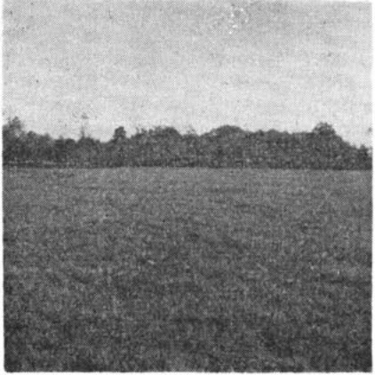
27—Limon sableux de Norton. Topographie.
Sa topographie est variable : ainsi, dans la paroisse de Ste-Clothilde, elle présente l'aspect d'une plaine au micro-relief légèrement à fortement ondulé dont l'altitude varie de 175 à 220 pieds. Dans les autres paroisses, ce type occupe les pentes ou les flancs plus ou moins abrupts des côteaux de till calcaire.
Le drainage externe, d'une manière générale, est assez bon; mais, à plusieurs endroits, notamment dans la partie est de la paroisse de Ste-Clothilde, il est paralysé par l'absence d'émissaires et de fossés d'égouttement. A ces derniers endroits, les sols sont plus humifères; dans une classification plus détaillée ils pourraient faire l'objet d'une autre série de sols. Quant au drainage interne, il est bon sur les élévations, mais lent dans l'ensemble. En général, ces sols sont plus sableux et plus profonds que ceux de la série de St-Bernard.
La réaction de la surface est fortement à moyennement acide, celle du sous-sol, moyennement acide, tandis que celle de la roche-mère est alcaline. Il arrive que celle-ci ou le substratum, à trois pieds de profondeur généralement, contiennent des carbonates actifs en assez grande quantité pour produire une vive effervescence au contact de HC1 dilué.
Les pierres sont abondantes et disséminées à la surface et dans le profil. A plusieurs endroits, celles-ci sont tellement nombreuses que le sol est pratiquement inculte et, pour cette raison, est généralement laissé en bois.
La végétation actuelle est composée de feuillus : érable à sucre, érable rouge, hêtre, frêne, et de conifères pruche, pin et cèdre. A plusieurs endroits, le cèdre forme des peuplements à peu près purs; ce qui nous aide à localiser ce type de sol.
ÉTUDE PÉDOLOGIQUE DU COMTÉ DE CHÂTEAUGUAY
DESCRIPTION DU PROFIL (en sols vierges)
Horizons
Profondeur
Description
A0
2-0"
Horizon composé d'humus et de débris végétaux.
A1
0-4"
Limon sablo-graveleux caillouteux, moyennement humifère, de teinte brun foncé à l'état humide à brun-gris à l'état sec (10YR 5/2). Structure finement granulaire. Consistance friable; pH : 6.0.
A2
Variable
Horizon souvent absent, de coloration plus pâle que le suivant, friable. Structure finement granulaire. Réaction ou pH : 6.3.
B2
4-24"
Horizon qui se subdivise en horizon B21 et B22 lorsque l'horizon A2 est présent. Limon sablo-graveleux pierreux, brun-jaune pâle à la partie supérieure du profil à brun pâle à la base (10YR 6/4 à 6/3) à l'état sec. Structure granulaire peu développée. Présence de pierres et de cailloux décalciés; pH : 6.8 — 7.2.
G
24-36"
Horizon de gley d'épaisseur variable et plus ou moins apparent, suivant que le drainage est plus ou moins bon (influence du micro-relief).
C
36" et plus
Roche-mère : Till sablo-graveleux caillouteux. Présence de gros blocs calcaires et de cailloux striés. La masse est cimentée, de coloration grise et réagit vivement au contact de HCl dilué. Réaction ou pH : 8.0.
Le potentiel de fertilité de ce type de sol est moyen et occupe une position intermédiaire entre celui des sols de St-Bernard et celui des sols de Perrot. La proximité de l'un ou de l'autre de ces derniers fait qu'il est tantôt plus limoneux et moins acide et tantôt plus graveleux, plus sableux et plus acide.
Nos observations morphologiques ainsi que les analyses, nous démontrent que ce type possède une quantité relativement faible de carbonates de calcium et de magnésium, dans son sol et son sous-sol. D'une manière générale, il ne fait effervescence qu'à une profondeur de plus de trois pieds environ.
Utilisation
Une assez grande proportion de l'étendue couverte par ce type de sol est réservée au pacage, tandis que l'autre partie est utilisée pour la grande culture.
Pour l'obtention de meilleurs rendements, et d'une plus grande diversité de cultures, il est nécessaire au préalable d'y pratiquer de bons travaux d'égouttement, suivis d'applications de pierre à chaux et d'engrais composés.
L'érosion n'est pas trop à craindre, bien qu'il y aurait lieu d'en surveiller les méfaits éventuels là où la pente atteint 8% et plus.
LE LIMON SABLO-GRAVELEUX CAILLOUTEUX DE NORTON phase rocheuse (3241 acres ou 1.9%)
En ce qui concerne ses caractéristiques physico-chimiques, et morphologiques, il ressemble au type décrit précédemment. C'est pourquoi, nous nous contenterons de mentionner qu'il n'en diffère que par une plus grande abondance, en surface, de grosses pierres et de cailloux; c'est pour cette raison qu'il n'est pas cultivé. Au point de vue agronomique, des essais sur la possibilité de sa mise en culture devraient être tentés. Une fois épierré, drainé et chaulé adéquatement, il y a lieu de croire que ce sol pourrait produire d'abondantes récoltes.
SOLS FORMÉS AUX DÉPENS DE TILL CONSTITUÉ PRINCIPALEMENT DE GRÈS SILICEUX DE POTSDAM
Pour les besoins de la classification du comté, nous n'avons reconnu qu'un type de sol dérivé de till gréseux, à savoir : le limon sablo-graveleux caillouteux de Perrot.
LE LIMON SABLO-GRAVELEUX CAILLOUTEUX DE PERROT
(17,214 acres ou 10%)
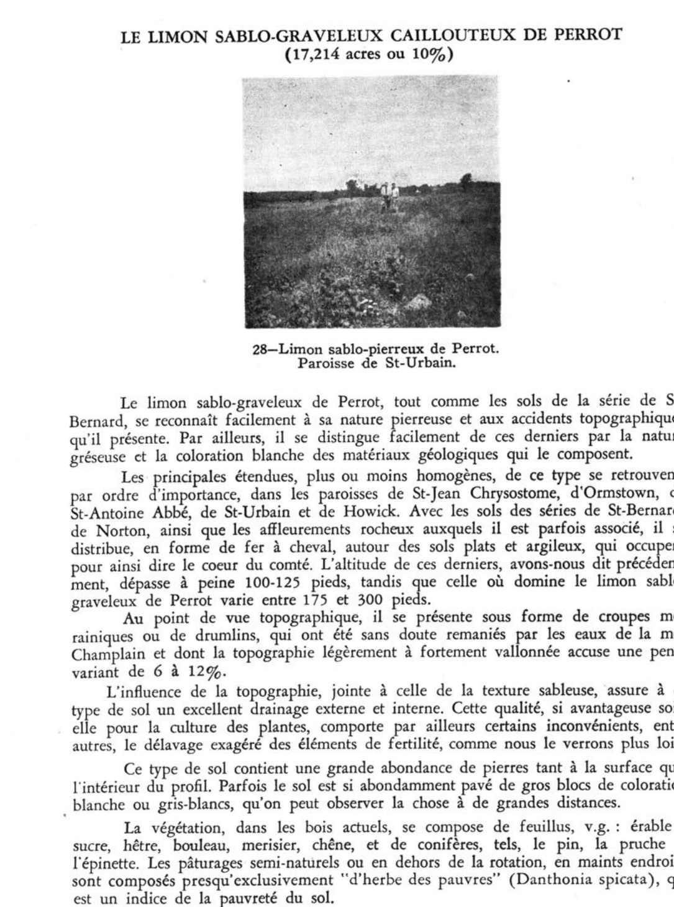
28—Limon sablo-pierreux de Perrot. Paroisse de St-Urbain.
Le limon sablo-graveleux de Perrot, tout comme les sols de la série de St-Bernard, se reconnaît facilement à sa nature pierreuse et aux accidents topographiques qu'il présente. Par ailleurs, il se distingue facilement de ces derniers par la nature gréseuse et la coloration blanche des matériaux géologiques qui le composent.
Les principales étendues, plus ou moins homogènes, de ce type se retrouvent, par ordre d'importance, dans les paroisses de St-Jean Chrysostome, d'Ormstown, de St-Antoine Abbé, de St-Urbain et de Howick. Avec les sols des séries de St-Bernard, de Norton, ainsi que les affleurements rocheux auxquels il est parfois associé, il se distribue, en forme de fer à cheval, autour des sols plats et argileux, qui occupent pour ainsi dire le coeur du comté. L'altitude de ces derniers, avons-nous dit précédemment, dépasse à peine 100-125 pieds, tandis que celle où domine le limon sablo-graveleux de Perrot varie entre 175 et 300 pieds.
Au point de vue topographique, il se présente sous forme de croupes morainiques ou de drumlins, qui ont été sans doute remaniés par les eaux de la mer Champlain et dont la topographie légèrement à fortement vallonnée accuse une pente variant de 6 à 12%.
L'influence de la topographie, jointe à celle de la texture sableuse, assure à ce type de sol un excellent drainage externe et interne. Cette qualité, si avantageuse soit-elle pour la culture des plantes, comporte par ailleurs certains inconvénients, entre autres, le délavage exagéré des éléments de fertilité, comme nous le verrons plus loin.
Ce type de sol contient une grande abondance de pierres tant à la surface qu'à l'intérieur du profil. Parfois le sol est abondamment pavé de gros blocs de coloration blanche ou gris-blancs, qu'on peut observer la chose à de grandes distances.
La végétation, dans les bois actuels, se compose de feuillus, v.g. : érable à sucre, hêtre, bouleau, merisier, chêne, et de conifères, tels, le pin, la pruche et l'épinette. Les pâturages semi-naturels ou en dehors de la rotation, en maints endroits, sont composés presqu'exclusivement "d'herbe des pauvres" (Danthonia spicata), qui est un indice de la pauvreté du sol.
DESCRIPTION DU PROFIL (en sols vierges)
Horizons
Profondeur
Description
A0
0-2"
Horizon composé d'humus très peu mélanisé et de débris végétaux.
A1
—
Horizon absent.
A2
0-3"
Horizon constitué de sable blanc à gris rosé à l'état sec (10YR 8/2). Distribué sous forme de langues verticales ou en une bande horizontale sinueuse, parfois peu visible. Structure particulaire. Très friable. Réaction ou pH : 5.2.
B21
3-9"
Sable limono-graveleux de coloration brun-rouge (humide) à brune à l'état sec (10YR 5/3). De consistance ferme avec tendance à se durcir en un orterde, rarement en un "ortstein" ; pH : 5.0.
B3
9-28"
Horizon de passage. Sable à sable limoneux de teinte brun pâle à l'état sec (10YR 6/3). Structure particulaire. Sur les pentes le sol est parfois faiblement tacheté de gley. Réaction (pH) : 5.6 — 5.8.
C
28" et plus
Roche-mère : till limono-sableux à sablo-limoneux, très pierreux, brun-jaune clair à l'état sec (2.5Y 6/4). Les pierres ou blocs sont de toutes dimensions et constitués presqu'exclusivement de grès de Potsdam. Réaction ou pH : 5.5 — 5.9.
La fertilité de ce type de sol est faible. Le profil montre un horizon A2 lessivé et passablement appauvri en matières minérales et colloïdales. Il est à noter que, en raison de certaines difficultés d'échantillonnage, cet horizon n'a pas été prélevé pour l'un des profils soumis à l'analyse (voir les numéros : 19120 à 19123 inclusivement, au tableau des analyses).
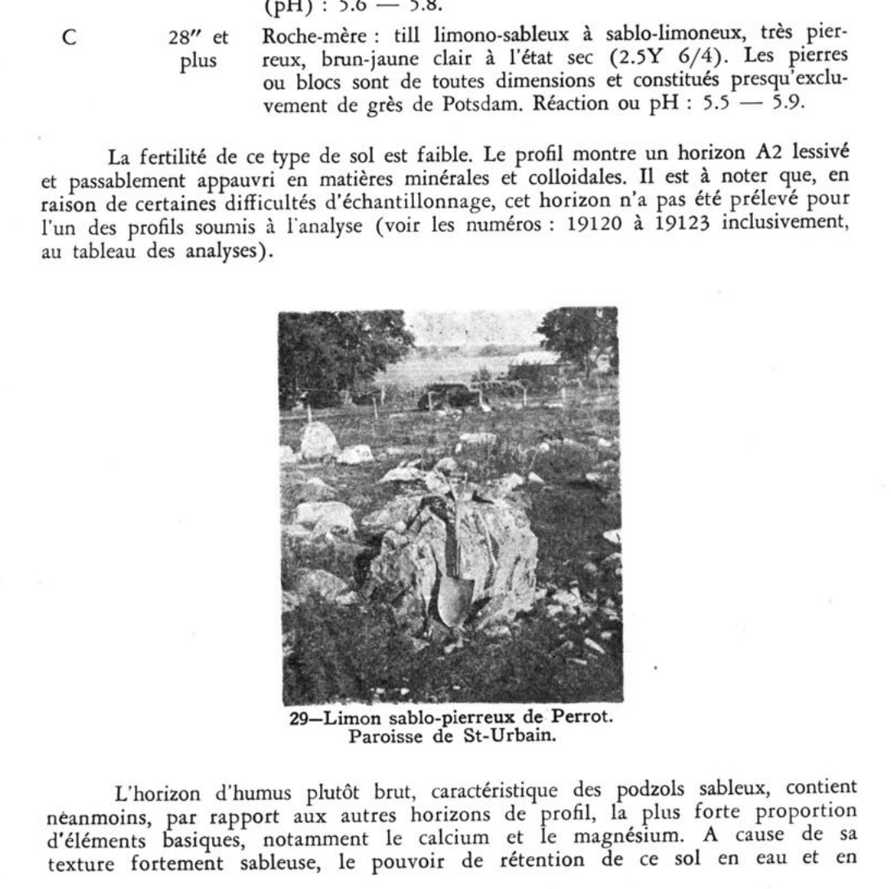
29—Limon sablo-pierreux de Perrot. Paroisse de St-Urbain.
L'horizon d'humus plutôt brut, caractéristique des podzols sableux, contient néanmoins, par rapport aux autres horizons de profil, la plus forte proportion d'éléments basiques, notamment le calcium et le magnésium. A cause de sa texture fortement sableuse, le pouvoir de rétention de ce sol en eau et en
éléments basiques est faible et il s'appauvrit rapidement, aussitôt qu'il est livré à la culture; à moins que l'on ne pratique dès le début un système de culture qui tende à augmenter sa fertilité initiale. Nous indiquerons plus loin, en parlant de son utilisation, quelques-uns des moyens à prendre pour atteindre ce but.
La réaction de la surface, comme celle de la roche-mère, est fortement à moyennement acide, tandis que celle du sous-sol est fortement acide. La végétation originelle, composée en partie de feuillus, a probablement contribué largement à rendre plus alcaline la réaction de ce sol en surface. (Voir tableau des analyses, horizon A).
Utilisation
En raison de l'abondance des roches et de son faible niveau de fertilité, ce type convient moins bien que les autres sols du comté aux cultures en général. L'enfouissement de matières organiques et l'apport de fortes doses de pierre à chaux moulue, de préférence dolomitique, et d'engrais chimiques; ainsi que la pratique d'un bon système de rotation à base de légumineuses, peuvent augmenter considérablement la fertilité et la productivité de ces sols. Cependant, il serait bon de se demander, si, du point de vue économique, ces pratiques sont possibles et justifiables. Dans la négative, il serait recommandable d'encourager le reboisement et l'établissement d'érablières là où la chose est praticable.
Notons, par ailleurs, que, de toutes les cultures sarclées, la pomme de terre est sans contredit celle qui convient le mieux. De plus, celle-ci est généralement exempte de gale, fait important à signaler, puisque le gros de la production vient de terres plutôt propices à cette maladie.
Avant de terminer ces quelques considérations sur le limon sablo-pierreux de Perrot, demandons-nous s'il n'y aurait pas lieu d'augmenter les revenus du cultivateur en développant ou en intensifiant dans ces régions l'élevage de la poule et de la dinde, ainsi que la culture des petits fruits tels : les framboises, les fraises etc.
SOLS DÉRIVÉS DE DÉPÔTS FLUVIO-GLACIAIRES ET GLACIO-MARINS
Les sols issus de dépôts fluvio-glaciaires et glacio-marins comprennent deux séries : celle de Ste-Philomène et celle de Grande-Ligne. La première ne 'compte qu'un type : le limon sablo-argileux et gravelo-caillouteux de Ste-Philomène; la seconde, comprend un type : le gravier sableux ou sable graveleux de Grande Ligne et une phase, dite rocheuse, du type précédent.
Les caractéristiques physiques, chimiques et morphologiques qui nous font différencier ces types de sol entre eux et qui nous aident à les distinguer des autres sols du comté, sont nombreuses. Puis qu'il nous sera donné de revenir sur ce point en discutant chacun des types de sols en particulier, contentons-nous pour le moment d'attirer l'attention sur quelques caractéristiques principales.
Mentionnons tout d'abord que ces sols occupent tous des cordons ou côteaux graveleux, continus ou isolés, qui dominent la plaine argileuse et contiennent, dans toute la profondeur de leur profil une forte proportion de gravier; aussi, les utilise-t-on très souvent pour la construction des routes.
Par ailleurs, les roches-mères faites de gravier, diffèrent entre elles considérablement. L'une, celle qui a donné naissance aux sols de Ste-Philomène, est composée presqu'exclusivement de roches calcaires (Beekmantown, Chazy et un peu de Trenton) et réagit vivement au contact de HCl dilué; tandis que l'autre, de laquelle dérivent les sols de la série de Grande Ligne, est toujours constituée de roches acides (grès et matériaux laurentiens) et ne réagit pas au contact de HCl dilué.
Au point de vue genèse, notons que les sols de la série de Ste-Philomène évoluent vers le gris-brun podzolique; tandis que ceux de la série de Grande Ligne appartiennent au groupe des "Bruns Podzoliques".
Étude Pédologique du Comté de Châteauguay
SOLS ISSUS DE DÉPÔTS CONSTITUÉS DE SABLES ET DE GRAVIERS CALCAIRES
LE LIMON SABLO-ARGILEUX ET GRAVELO-CAILLOUTEUX
DE STE-PHILOMÈNE (1662 acres ou 1%)
Le limon sablo-argileux et gravelo-caillouteux de Ste-Philomène occupe, dans plusieurs paroisses, une séquence plus ou moins interrompue de cordons graveleux, étroits et fortement vallonnés, dont la pente est de 12% environ. On les retrouve à une altitude qui varie de 150 à 200 pieds et l'allure générale qu'ils présentent dans la plaine est celle de dos d'âne (eskers remaniés), dont l'alignement est dans la direction nord-est sud-ouest. Les plus importants de ceux-ci sont sans contredit : 1-- celui de la paroisse de Ste-Philomène, appelé : "côteau Ste-Marguerite", qui s'étend sur une distance d'environ 3½ milles et couvre ainsi à peu près la moitié de toute la superficie de ce type de sol dans le comté : 2-- celui de l'île St-Bernard, ou île des Soeurs, qui, nous l'avons noté précédemment, présente un certain intérêt historique; c'est ainsi qu'il est parfois désigné du nom de "Mound", qui signifie : tertre funéraire.
La topographie vallonnée et le fort pourcentage de gravier assurent un très bon drainage externe et interne du sol. Le drainage externe, cependant, devient excessif durant les pluies intenses et subites.
La texture de ce type de sol est variable. Il contient généralement une forte proportion de pierres et de cailloux calcaires stratifiés, de forme bien arrondie et d'un diamètre variant de 1½ à 5 pouces. En maints endroits, ainsi que le font voir les gravières ou les coupes de grandes dimensions, il présente des lentilles de sable grossier ou de gravier fin.
La végétation arborescente, si l'on en juge d'après les rares boisés, est composée principalement d'érable à sucre et de hêtre, auxquels s'associent le tilleul, le frêne blanc et le bois-de-fer. Dans les vieux pacages, on a observé le pâturage du Kentucky et la luzerne lupuline.
DESCRIPTION DU PROFIL (en sols cultivés)
Horizons
Profondeur (pouces)
Description*
Ac
0-6
Limon sablo-argileux gravelo-caillouteux moyennement humifère, de teinte brun-gris foncé (10YR 4/2) à l'état sec. Structure granulaire bien développée. Consistance très friable. Les nombreux cailloux arrondis et parfois la partie fine du sol réagissent vivement à l'HCl dilué; pH : 7.0 ··· 7.6.
A2
6-12
Horizon d'éluviation ou d'appauvrissement de teintes plus claires que les horizons qui le surmontent ou qui suivent. Coloration brunc à brun pâle à l'état sec (10YR 5/3). S'étend en une bande sinueuse de 2 à 6 pouces d'épaisseur ou en poches pouvant atteindre 12 à 15 pouces, spécialement là où le sol est sablonneux. Le gravier seul fait effervescence au contact de HCl dilué.
Étude Pédologique du Comté de Châteauguay
B2-1ca
12-16
Horizon de passage. Généralement peu visible.
B2-2ca
16-19
Horizon d'illuviation ou d'accumulation, formant une bande sineuse, qui épouse les contours de l'horizon A2 ou B2-1 ca.
Limon sablo-argileux à limon fin argilo-graveleux montrant une structure nuciforme bien développée et une texture plus argileuse que dans les autres horizons.
Coloration brun-jaune (10YR 5/4) à l'état sec. Agrégats fermes, mais se séparant facilement.
Donne une vive effervescence au contact de HCl dilué; pH: 8.0.
Cca
20 et plus.
Roche-mère : Sables et graviers d'origine fluvio-glaciaire, de forme arrondie, nettement stratifiés en couches horizontales ou obliques et renfermant toujours, à des hauteurs variables des lits de coquillages marins.
Coloration grise, à gris-foncé (10YR 4/1) à l'état sec, variable suivant la nature lithologique du gravier calcaire.
Donne invariablement une très vive effervescence au contact de HCl dilué.
* Ce profil varie parfois considérablement dans la texture et dans l'épaisseur relative de ses horizons. De par ces caractéristiques, sauf celle de la réaction qui est plus alcaline en surface, il appartient au gris-brun podzolique.
30 — Coupe à travers le côteau Ste-Marguerite. Série de Ste-Philomène.
Le potentiel de fertilité de ce type de sol est plutôt élevé. La teneur en humus bien décomposé est moyenne; celle des colloïdes argileux, dans les horizons superficiels, est plutôt forte; celle des éléments basiques, calcium et magnésium notamment, est également forte, en dépit d'un certain lessivage qu'a subi le sol. La réaction de la surface et du sous-sol est légèrement alcaline ou neutre et réagit à l'acide chlorhydrique dilué; celle de la roche-mère est toujours alcaline et donne invariablement une vive effervescence à l'HCl dilué, à cause de la présence de carbonates actifs de calcium et de magnésium.
Au point de vue morphologique, ce type de sol se classe parmi les gris-bruns podzoliques. Il en diffère cependant, par la réaction moins acide de ses horizons superficiels.
ÉTUDE PÉDOLOGIQUE DU COMTÉ DE CHÂTEAUGUAY
Utilisation
Depuis un certain nombre d'années, une étendue de plus en plus grande de ce type de sol est occupé par des gravières, que l'on exploite pour la construction des routes.
D'une manière générale, là où il n'est pas trop grossier, c'est-à-dire, trop pierreux, il se prête bien à la grande culture et aux cultures sarclées.
Les rendements en grain et en foin sont très bons surtout durant les années plutôt humides. Par suite de sa nature calcaire, il convient éminemment bien à la culture de la luzerne et des légumineuses en général, qui, malheureusement, ne sont pas très répandues sur ce type de sol.
Le limon sablo-argileux de Ste-Philomène est réputé pour la production de pois à soupe cuisants. Le Côteau Ste-Marguerite, paraît-il, s'est acquis une réputation enviable en produisant, bon an mal an, des récoltes de pois cuissants.
Étant donné que ce sol est naturellement riche en chaux et suffisamment drainé, il en coûte relativement peu pour maintenir ou accroître sa fertilité. L'enfouissement de matières organiques, un système de rotation à base de légumineuses, et l'addition de faibles doses de phosphate ou de potasse et phosphate combinés, permettront d'atteindre ce but. D'après certains essais faits en dehors du comté, l'addition de bore sur certains sols calcaires est nécessaire.
En terminant, mentionnons que ce type de sol pose un problème d'érosion; en effet, certaines pentes ont souffert plus ou moins de l'érosion par l'eau.
SOLS ISSUS DE DÉPÔTS CONSTITUÉS DE SABLES ET DE GRAVIERS SILICEUX ACIDES
Les sols dérivés de sables et de graviers comprennent un type : le gravier sableux ou sable graveleux de Grande Ligne et une phase; dite rocheuse, de ce même type.
LE GRAVIER SABLEUX OU SABLE GRAVELEUX DE GRANDE LIGNE (505 acres ou 0.30%)
Le gravier sableux ou sable graveleux de Grande Ligne se trouve surtout dans les paroisses d'Ormstown, de St-Urbain et de St-Chrysostôme, où il occupe quelques monticules ou côteaux graveleux, qui émergent de la plaine environnante. Il prend parfois l'allure de petites terrasses. D'une manière générale, l'altitude et la déclivité de ces éminences graveleuses varient de 150 à 220 pieds et de 10 à 15% respectivement.
Ce type de sol est parfois associé aux sols de la série de Perrot et, de ce fait, contient généralement une plus forte proportion de grès siliceux de Potsdam. A ces endroits, par exemple dans la paroisse d'Ormstown, il appartient plutôt à la phase dite rocheuse.
La texture est variable et présente parfois beaucoup d'hétérogénéité. Aussi observe-t-on dans les gravières que l'on exploite pour la construction des routes, des couches ou lentilles alternantes de sable et de gravier. Les matériaux sont très poreux et non cimentés et favorisent un drainage externe et interne très bon, voire même excessif.
La végétation naturelle devait être composée à l'origine, de conifères; pruches et pins et de feuillus où dominaient l'érable à sucre, le hêtre, le merisier et le tilleul.
Dans les vieux pacages, la végétation est claire et constituée principalement de l'herbe des pauvres ou danthonie.
DESCRIPTION DU PROFIL (en sols vierges)
Horizons
Profondeur (pouces)
Description*
A0O
1-0
Litière composée de feuilles et de débris végétaux.
A1
1-3
Gravier à sable limoneux faiblement humifère, de coloration brune à brun pâle à l'état sec, (10YR 6/3). Sans structure ou structure finement “en miettes” très peu développée. Consistance très friable; pH : 5.0 — 6.0.
A2
—
Horizon généralement absent ou très mince. Discontinu, de teinte gris-blanc ou cendrée; pH : 5.0.
B2-1
3-7
Gravier sableux à sable graveleux, brun, de ton rouge (humide) et brun très pâle (sec) : (10YR 7/4). Sans structure ou structure finement “en miettes” très peu développée. Consistance lâche, perméable. Présente parfois une consistance ferme et indurée en un “Orterde” là où l'Horizon A2 est présent. Réaction ou pH: 5.9.
B2-2
7-15
Gravier fin et sable grossier, jaune brun (10YR 6/6), sans structure, ouvert et perméable; pH : 6.0.
C
15 et +
Roche-mère : Gravier et sable, brun-jaune clair à l'état sec (10YR 6/4). Consistance lâche, très perméable. Sans structure; pH : 5.7 — 6.4.
* La texture de ce type de sol est très variable. Et est toujours en présence, cependant, de sols très graveleux et très sableux qui sont à peu près dépourvus de colloïdes argileux.
La fertilité de ce type de sol est faible. Il est pauvre en colloïdes organiques et minéraux à cause de sa trop forte teneur en gravier. Quoique le profil ne montre pas d'horizon A2 d'appauvrissement, ce sol a été passablement décalcifié, comme on peut le voir, au tableau des analyses, par les valeurs obtenues pour le degré de saturation. En résumé, la nature trop siliceuse et l'absence d'éléments argileux ou humiques expliquent le bilan plutôt pauvre de ce type de sol en eau et en éléments nutritifs.
Utilisation
Pour les raisons invoquées précédemment au sujet de sa fertilité, il ne convient pas à la culture en général; du moins, dans nos conditions économiques actuelles. Aussi, est-il peu cultivé et généralement réservé au pacage.
Étude Pédologique du Comté de Châteauguay
Quoiqu'il en soit, certains cultivateurs ont obtenu de bons résultats dans la culture de la pomme de terre. La réussite de celle-ci présuppose évidemment l'addition de fortes doses de fumier et d'engrais chimiques composés.
Ce type de sol supporte, en maints endroits, de belles érablières. Celles-ci sont naturellement bien adaptées et il y aurait lieu, croyons-nous, de les multiplier et d'y développer une saine acriculture.
En terminant, notons qu'il fournit un excellent gravier pour la construction des chemins et présente, de ce fait, une certaine importance économique.
Le Gravier Sableux ou Sable Graveleux de Grande Ligne, Phase rocheuse. (368 acres ou 0.22%)
La phase rocheuse des sols de la série de Grande Ligne est localisée entièrement dans la paroisse d'Ormstown.
Ses caractéristiques agronomiques et pédologiques sont à peu près les mêmes que celles du gravier sableux de Grande Ligne, que nous avons discuté précédemment, et qui, dans la paroisse d'Ormstown, contient une plus grande abondance de grès de Potsdam et par conséquent, une plus faible proportion de roches ignées que le type pierreux rencontré dans la majorité des comtés de la Plaine de Montréal.
La phase rocheuse désigne, pour toutes fins pratiques, une terre trop rocheuse pour être mise en culture.
Les Sols Organiques (17479 acres ou 10.3%)
Étant donné que les sols organiques ou humifères du comté, spécialement ceux des secteurs de Ste-Clothilde, ont déjà été l'objet d'études antérieures assez détaillées de la part d'équipes de classificateurs sous la direction de McKibbin et Stobbe, nous nous contenterons de souligner quelques-unes des données principales qui ressortent de ces travaux.
Pour les fins de cette étude, nous avons divisé les sols organiques en deux groupes : le tourbeux (bog) et le semi-tourbeux (half-bog). Ces derniers sont disséminés dans plusieurs paroisses, où ils occupent des depressions relativement petites et presque continuellement saturées d'eau; les premiers sont cantonnés dans la paroisse de Ste-Clothilde où ils occupent des vestiges des lacs d'âge glaciaire ou Champlain, qui peu à peu ont été comblés par l'empiètement graduel et successif des stades de végétation suivants : aquatique, marécageuse et forestière.
Dans les deux groupes, les matières organiques sont accumulées en raison de l'absence d'émissaires libres pour l'écoulement des eaux. D'une manière générale, l'humus, pour une forte proportion de ces sols, est de coloration très noire et bien décomposée. Le bon degré de décomposition de celui-ci semble étroitement lié à sa composition botanique et à la nature calcaire des formations géologiques environnantes.
La grande majorité de ces sols, une fois drainés, conviendraient bien aux cultures maraîchères, pourvu que l'on y applique les engrais chimiques voulus, afin de corriger leur déséquilibre chimique. Ils sont généralement trop riches en azote par rapport aux autres éléments de fertilité.
TABLEAU 12 — LES SOLS TOURBEUX OU HUMIFÈRES DU COMTÉ DE CHÂTEAUGUAY (PAROISSE DE STE-CLOTHILDE) (1)
Nom du sol
Signes conventionnels (2)
Nature de la tourbe (3)
Degré de décomposition
Réaction (pH)
Cendres %
Matières organiques
Facilité de drainage
Facilité d'accès
Recommandations générales
Terre noire bien décomposée.......
T.N1 Secteur Ⓐ
Tourbe ligneuse
Très bon
6.0
10–15
85–90
Bonne
Très bonne
Drainage-chaux-potasse-phosphore.
Terre noire bien décomposée.......
T.N1 Secteur Ⓑ
Tourbe ligneuse
Bon
5.5–6.0
10–13
87–90
Bonne à pauvre
Bonne
Pour la mise en valeur de ces sols, des travaux de drainage et d'irrigation devraient être pratiqués simultanément.
Terre noire bien décomposée.......
T.N1 Secteur Ⓒ
Tourbe ligneuse
Très bon
5.7–6.3
8–15
85–92
Pauvre
Mauvaise
Chaux: Pour un pH de 5.0 et moins, appliquer 2–3 tonnes de pierre à chaux moulue. Pour un pH de 5.1–6.0, appliquer 1–2 tonnes.
Tourbe grossière......
T Secteur Ⓒ
Tourbe fibreuse et sédimentaire
Mauvais
5.0–5.8
7–8
92–93
Très pauvre
Très mauvaise
Engrais chimiques: Formules spéciales aux terres noires.
Tourbe grossière......
T Secteur Ⓓ
Tourbe fibreuse à tourbe ligneuse
Mauvais à bon
4.7–5.9
9–10
90–91
Très pauvre
Très mauvaise
Fumier: Très peu ou pas.
Référence: "Les sols organiques du sud-ouest du Québec"—publ. no 499—Ministère fédéral de l'agriculture-Ottawa.
(1) Adaptation du travail: "Les sols organiques du sud-ouest du Québec" par Dr McKibbin et H. C. Stobbe, publ. no 499 (1936) Min. féd. de l'agriculture-Ottawa.
(2) La désignation des secteurs par des lettres majuscules encerclées v.g. Ⓐ, correspond à celle qui a été utilisée dans le travail mentionné précédemment.
(3)Nature de la tourbe:
1o—Tourbe ligneuse (woody peat): tourbe provenant principalement de la décomposition d'arbres, d'arbustes à feuilles et de carex.
2o—Tourbe fibreuse (fibrous peat): tourbe composée de mousses de sphaignes (sphagnum moss), de quenouilles (cat-tail), et de joncs (reeds) peu décomposés.
3o—Tourbe sédimentaire (sedimentary peat): Tourbe constituée de débris, finement divisés, de lis et d'autres plantes aquatiques. Elle occupe la base des terrains tourbeux. Note: Pour plus d'informations voir: "Peat and Muck" par B. D. Wilson-Cornell Extension Bull. No 320. (1935).
ÉTUDE PÉDOLOGIQUE DU COMTÉ DE CHÂTEAUGUAY 99
LES SOLS TOURBEUX (16243 acres ou 9.6%)
Ce groupe de sols présente beaucoup d'intérêt pour la culture maraîchère. Afin de promouvoir la mise en valeur de ces sols, les ministères fédéral et provincial de l'Agriculture ont pris plusieurs initiatives dont les principales sont : 1— Les travaux de classification des sols organiques. 2— Les travaux de drainage comportant le surcreusage et le redressement des rivières, ruisseaux et décharges, dont les lits étaient parfois très rocheux et excessivement compacts. 3— Les recherches agronomiques de la sous-station expérimentale fédérale de Ste-Clothilde, qui déjà ont aidé à solutionner quelques-uns des nombreux problèmes que suscitent l'adaptation et la fertilisation adéquate des plantes horticoles.
Le tableau 12 fait voir les principales caractéristiques de ces sols.
LES SOLS SEMI-TOURBEUX (1236 acres ou 0.73%)
Parmi les sols semi-tourbeux on distingue : les semi-tourbeux sur argile et les semi-tourbeux sur sable. Les premiers forment deux enclaves importantes : l'une dans la paroisse d'Ormstown où les sols plus ou moins soumis au brûlage, s'apparentent aux semi-tourbeux de la série de Ste-Barbe, qui occupent une grande superficie dans le comté de Huntingdon; l'autre que l'on trouve dans la paroisse de St-Urbain, où les sols s'apparentent et sont parfois associés à ceux de la série de St-Urbain. Pour ce qui a trait aux sols semi-tourbeux sur sable, notons que l'humus y est généralement plus acide et moins bien décomposé. En raison de leur faible étendue, ces sols ne présentent que peu d'intérêt.
LES SOLS DIVERS (26,000 acres ou 15.3%)
Sous cette rubrique, nous avons inclu les sols ravinés, les sols pierreux ou squelettiques, les sols alluvionnaires, les affleurements rocheux, les marais et les terrains humides.
Ces sols, ou plus précisément ces pseudo-sols pour la plupart présentent des profils peu ou pas évolués dont un ou plusieurs des horizons font défaut. Pour cette raison, ils n'ont pas fait l'objet de séries distinctes dans le système de classification utilisé.
Cependant, afin de faciliter l'identification et certains rapprochements de ces sols avec les autres du comté, on les a qualifiés là où la chose était possible, du nom des séries avec lesquelles ils présentaient une certaine parenté au point de vue des matériaux géologiques; ainsi nous avons les sols ravinés de la série de Rideau.
LES SOLS RAVINÉS (8478 acres ou 4.9%)
Les sols ravinés de la série de Rideau et d'Ormstown occupent les berges de la rivière Châteauguay et de ses affluents. Ces berges atteignent des pentes de 25% et même de 35%.
D'une manière générale, ces terrains sont très érodés et à peu près dépourvus d'humus. Etant donné qu'ils comptent pour 5% de la superficie totale du comté, ils présentent un sérieux problème d'érosion et c'est pourquoi il serait fortement recommandable de les engazonner sans tarder afin de prévenir ou de réduire au minimum toute érosion possible.
Les seconds, ceux sur calcaire dolomitique de Beekmantown, sont d'épaisseur variable. La topographie, comme pour les sols sur grès acide, est généralement bossuée à cause des saillies rocheuses. Les caractéristiques du profil et la valeur agricole intrinsèque de ces sols sont conditionnés largement par l'épaisseur du sol sur le roc. Ils sont utilisés comme pacage et, là où le sol est assez épais, ils serait désirable de reboiser en cèdre ou en érable peut-être.
Ces sols présentent de grandes analogies avec ceux de la série de Farmington identifiés en Ontario et dans l'Etat de New York.
ÉTUDE PÉDOLOGIQUE DU COMTÉ DE CHÂTEAUGUAY
LES SOLS LITHOSOLIQUES OU SQUELETTIQUES (4923 acres ou 2.9%)
Dans ce groupe on distingue deux sortes de sols lithosoliques : les uns reposent sur grès acide de Potsdam et les autres sur calcaire de Beekmantown.
Les premiers sont incultes parce que trop secs et excessivement minces. Les pacages sont pauvres et composés de touffes éparses d'épervière jaune et orangée ainsi que de danthonie (herbe de pauvreté). Les petits fruits : bleuets et fraises, abondent à certains endroits, v.g. le rang de "la Califournie", et constituent un revenu-argent intéressant pour plusieurs familles pauvres de la région.
LES AFFLEUREMENTS ROCHEUX, LES MARAIS, LES TERRAINS HUMIDES (3581 acres ou 2.1%)
On distingue les affleurements rocheux de grès de Potsdam et ceux de calcaire dolomitique de Beekmantown. Ce sujet a déjà été traité au chapitre de la géologie. Mentionnons cependant qu'ils occupent une superficie de 3000 acres environ et qu'ils sont associés aux sols minces lithosoliques. A plusieurs endroits, le grès de Potsdam est composé de silice à peu près pure et présenterait peut-être une certaine valeur industrielle, pour la fabrication du verre et du carborundum.
Les marais et les terrains humides non différenciés qui occupent une superficie de 500 acres environ n'incluent pas évidemment les étendues de terre noire et de tourbe peu décomposée.
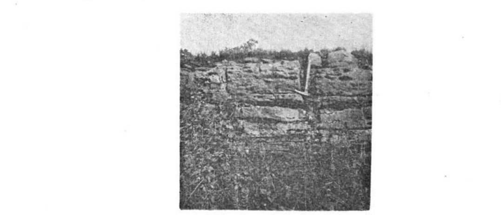
31—Sol mince résiduel sur do.o.nie de Beekmantown (Farmington). Conviendrait à la plantation de cèdres. Paroisse de Châteauguay-Woodlands.
LES SOLS ALLUVIONNAIRES (7713 acres ou 4.5%) (Alluvions récentes — Bas niveau)
Ces sols, connus sous le nom de "terres de pointes", sont éminemment fertiles. Ils se distinguent par leur belles propriétés physiques et par leur réaction faiblement acide. Par ailleurs, leur utilisation est souvent limitée par les dangers d'inondation. Les dégâts et les inconvénients occasionnés fréquemment par les inondations printanières, dans les paroisses de Châteauguay bassin et de Châteauguay village sont reconnus et occupent presque chaque année la manchette des grands quotidiens Montréalais. On pourrait diminuer l'importance de ce fléau sinon l'enrayer complètement par le reboisement de certaines parties incultes à la tête du bassin hydrographique de la rivière Châteauguay et par l'engazonnement des berges des rivières. Quoiqu'il en soit, le problème est d'importance et mériterait d'être sérieusement étudié.
CHAPITRE V
UTILISATION ET VALEUR AGRICOLE DES SOLS
Les séries et types de sols sont distribués inégalement dans les différentes paroisses du comté; voilà ce qui ressort de l'examen de la carte des sols et du tableau de leurs superficies (tableau 11). Suivant la nature, la proportion et l'arrangement des séries et des types de sols, dans chacune des paroisses, nous avons des mosaïques ou associations de sols(1) qui diffèrent passablement entre elles au point de vue réaction, texture, nature de la roche-mère, relief et développement du profil. Ces différences se traduisent généralement par des aptitudes diverses pour la culture en général. La carte dite "des associations-types de sols" (voir carte en appendice) nous montre dix-sept types de ces associations géographiques de sols.
A défaut de données statistiques satisfaisantes, nous nous sommes basés, pour l'estimation de la valeur agricole des diverses associations, sur les renseignements gracieusement fournis par MM. les agronomes N. April et G. Ampleman et les cultivateurs rencontrés au cours de notre enquête. Au point de vue de leur adaptation aux principales récoltes, leur valeur a été désignée au tableau 13, par les qualificatifs suivants : Très bonne, bonne, médiocre, pauvre et très pauvre.
En nous basant sur l'aptitude de ces diverses associations pour l'ensemble des productions agricoles se rapportant à la culture mixte et à l'industrie laitière, nous avons établi cinq catégories de sols suivant le degré d'adaptation de chacune à ce système de culture. Pour l'établissement de ces catégories, on a considéré la ferme à culture mixte, avec système de rotation approprié, où on utilise le fumier de ferme, un peu d'engrais chimique et des doses modérées de pierre à chaux inoulue. Comme le drainage souterrain n'est pas très répandu, nous avons tenu compte du drainage naturel seulement ou de celui-ci aidé, d'une manière bien imparfaite encore, par des fossés ou des rigoles. Il s'ensuit donc que les rendements, ceux des céréales en particulier, sont passablement abaissés sur certains sols lourds où la pluie est trop abondante ou mal distribuée.
Mentionnons quelques-unes des caractéristiques de chacune de ces cinq catégories de sols qui figurent au tableau 13.
SOLS DE LA CATEGORIE I
Cette association de sols est très bonne pour la culture mixte et l'industrie laitière. Les fermes où on la rencontre se prêtent mieux à une plus grande diversité de cultures. La pomme de terre et les petits fruits, de même que certaines petites cultures dites "de jardinage" sont florissantes. D'une manière générale, le potentiel de fertilité y est élevé et les conditions de drainage ainsi que les propriétés physiques très bonnes dans l'ensemble. La faible acuité de ces sols fait que la luzerne y vient sans apport ou avec très peu de pierre à chaux. Les besoins en engrais chimiques sont faibles et la pratique d'un système de rotation comprenant la culture de foin de légumineuses peuvent non seulement maintenir, mais accroître la productivité de ces sols.
(1) Associations pédo-géographiques.
TABLEAU 13 — CARACTÉRISTIQUES PHYSIQUES ET VALEUR AGRICOLE DES ASSOCIATION-TYPES DE SOLS DU COMTE DE CHATEAUGUAY (2)
Nos des Catégories et des Associations-types
Associations de sols
Caractères physiographiques
Drainage
ADAPTATION DES PRINCIPALES RÉCOLTES (1)
REMARQUES
Avoine
Orge
Maïs four.
Foin (m-t)
Luzerne
Racine
Pomme de terre
Culture fruitière
Betteraves sucrières
Lin
Pâturage permanent
CATÉGORIE I 1
Châteauguay - St-Bernard - St-Blaise.
Plaine de till calcaire........
Bon........
T.B.(1)
T.B.
T.B-B.
T.B.
T.B.
T.B-B
M-P
T.B-B
T.B-B
B-M
T.B-B
Les sols conviennent très bien à une production intensive des diverses récoltes. Le drainage, les propriétés physiques, le niveau de fertilité sont très bons dans l'ensemble.
CATÉGORIE II 2
Ste-Rosalie - St-Urbain......................
Plaine argileuse humifère..........
Lent à mauvais
T.B-B
T.B-B
T.B
T.B
B-M
B
P
P
T.B-B
T.B
B-M
Les sols conviennent très bien à une production intensive des diverses récoltes. Besoins: Drainage, phosphates, chaux aux endroits où l'argile de Ste-Rosalie domine.
CATÉGORIE III 3
Howick - Ste-Rosalie - St-Urbain. N.B. Série Howick domine..
Plaine limono-argileuse faiblement humifère..
Bon à lent
T.B-B
T.B-B
T.B
B
B-M
T.B-B
P
P
T.B
B
B-M
Ces diverses associations de sols sont moyennement bien adaptées à une production intensive des diverses récoltes. Le niveau de fertilité, surtout dans les horizons superficiels, est moins élevé que dans le groupe précédent.
BESOINS OU AMÉLIORATIONS:
Drainage, matières organiques, chaux, engrais composés.
N.B. - Les besoins de même que les problèmes sont variables pour chacune des associations.
7
Ste-Philomène.........
Cordons ou côteaux graveleux calcaires.......
Exc. à bon.
M
M
B
M
B
M
M
B
M
M
B
8
Norton pierreux - St-Bernard pierreux.
Plaine de till calcaire.
Bon
B-M
B-M
M
M
B
M
M
B
M
M
B
CATEGORIE IV 9
Perrot (dominant)...
Plaine de till acide.
Bon
M-P
M-P
M-P
P
P
P
T.B
B
P
P
P
Le niveau de fertilité de ces diverses associations de sols est faible.
BESOINS OU AMÉLIORATIONS:
Matières organiques, chaux, engrais composés.
Nécessité particulière d'un bon système de rotation.
N.B.—Cultures spécialisées dans certains cas v.g. St-Damase.
10
Perrot - Grande Ligne (Franklin).......
Plaine de till acide.
Exc. à bon.
P
P
P
P
P
P
B
B-M
P
P
P
11
St-Dumase - St-Jude......................
Plaine sablonneuse.
Lent à bon.
M-P
M-P
M-P
P
P
P
B
P
M-P
P
P
CATEGORIE V 12
Sols minces sur calcaires (Farmington).
Plaine de till mince et affl. rocheux calc.
Exc.
......
......
......
......
......
......
......
......
......
......
......
Terres sub-marginales pour la culture mixte et l'industrie laitière.
Exceptions: Les alluvions récentes (les terres de pointes). Sujettes aux inondations. Sols éminemment fertiles et convenant bien au pâturage et à certaines cultures.
N.B.—Les "terres noires bien décomposées" conviennent particulièrement bien aux cultures maraîchères.
Ces sols sont bons pour la culture mixte et l'industrie laitière. Leur potentiel de fertilité est très élevé. Généralement peu lessivés de leurs bases utiles aux plantes, ils souffrent par contre de mauvaises propriétés physiques : leur drainage est plutôt mauvais et, à cause de leur topographie plane, ils sont d'égouttement difficile. La productivité de ces sols peut être considérablement accrue, voire même doublée dans bien des cas, par le drainage, le chaulage et l'application de fumier et de doses modérées de phosphates. Les rendements sur ces sols ainsi améliorés pourraient atteindre 45 à 50 minots et plus à l'arpent pour l'avoine et 3 tonnes pour le foin. Une fois drainées, leur productivité pourrait dépasser la productivité actuelle de ceux de la première catégorie.
SOLS DE LA CATEGORIE III
Les sols de cette catégorie sont moyennement bons pour la culture mixte et l'industrie laitière. Leurs différentes associations ont des qualités et des défauts particuliers, qui se contrebalancent dans un classement général. Les premières (voir associations Nos. 3, 4, 5) se rapprochent de celles de la deuxième catégorie. Leurs sols sont lessivés ou décalcifiés en surface, exempts de pierres, pauvres en matière organique, trop compacts et de ce fait, difficiles à drainer.
Les sols des autres associations de cette catégorie (voir Nos. 6, 7, 8) à cause de la nature calcaire de leurs matériaux, sont moins lessivés; ils sont plus ouverts et plus perméables, mais par ailleurs, contiennent une grande abondance de pierres et ont tendance à souffrir de la sécheresse.
L'érosion menace une grande étendue des premières, tandis que l'abondance de pierres s'oppose à la mise en culture d'une forte proportion des secondes, et, de ce fait, les soustrait aux menaces de l'érosion. Au point de vue amendement, les premières ont un plus grand besoin de pierre à chaux moulue.
SOLS DE LA CATEGORIE IV
Cette catégorie comprend les sols pauvres pour la culture mixte et l'industrie laitière. De texture sableuse, ils ont un faible pouvoir de rétention en eau et sont généralement déficients en calcium ainsi qu'en plusieurs principaux éléments de fertilité : Azote, phosphore et potassium. Lorsque l'association est constituée presqu'exclusivement de sols de la série de St-Damase, comme c'est le cas dans la paroisse de St-Joachim de Châteauguay, elle présente une grande valeur pour les cultures spécialisées en général telles celles du blé d'Inde suché, de la tomate, des petits pois, des fèves etc.
L'épaisseur plus ou moins grande de la couche de sable surmontant l'argile, influence grandement la qualité de ces sols pour les cultures spécialisées comme pour les cultures en général.
SOLS DE LA CATEGORIE V
Nous avons classé dans cette catégorie les sols très pauvres et qui ne conviennent pas à la culture mixte et à l'industrie laitière. Au nombre de ceux-ci, on compte les sols très pierreux, minces et sujets à la sécheresse, ou bien ceux qui ont un niveau de fertilité très bas. A plusieurs endroits, ce sont des sols incultes qui devraient être reboisés, quand la chose est possible.
Les terres noires bien décomposées ont été incluses dans cette catégorie parce qu'elles ne conviennent pas à la culture mixte, mais plutôt à la culture maraîchère.
ÉTUDE PÉDOLOGIQUE DU COMTÉ DE CHÂTEAUGUAY
CHAPITRE VI
MÉTHODES D'ANALYSE DES SOLS
Les méthodes d'analyse mentionnées ci-après furent utilisées sur des échantillons de sols préalablement séchés à l'air et passés au tamis de 2 millimètres. Pour l'analyse totale ou globale de certains constituants du sol, les échantillons ont été moulus et passés au tamis de 100 mailles au pouce. Les valeurs obtenues pour l'analyse globale se rapportent au sol séché à l'étuve durant 24 heures à la température de 105° C.
Concentration en ions hydrogène (pH)
Méthode dite à l'électrode de verre avec l'appareil Beckman. Le rapport du sol et de l'eau était de 1/3, c.à.d. d'une partie de sol (7 grs. environ) et de trois parties d'eau (25cc.). Après un contact d'une heure, la suspension est agitée et le pH est déterminé jusqu'à équilibre de l'aiguille.
Humidité et perte au feu.
Méthode : O.A.C. 5ième édition (1940).
Analyse physique (texture du sol)
Méthode Bouyoucos.—(Soil Science, vol. 42.-1936).
Dimension des particules : plus grosses que 2 mm.: gravier; 2.0 — 0.05mm.: sable; 0.05 — 0.005 mm. : limon; plus petites que 0.005 mm. : argile. On fait deux lectures : la première, après 40 secondes et la seconde au bout d'une heure.
Azote.
Méthode Kjeldahl — Gunning — Arnold. — Modification de Winkter et aussi de Scales et Harrison (1920). L'ammoniaque est recueillie dans une solution d'acide borique à 4% et dosée directement avec H2SO4 N/10 en présence du brome-phénol bleu.
Carbone.
Méthode dite "par combustion à sec" de Reed-J. Ind. & Eng. Chem. vol. 13, No. 4, avril 1921. Le carbone est oxydé à l'état de CO2 par un courant d'air en présence de catalyseurs et recueilli dans une fiole contenant de l'ascarite. Les sols contenant des carbonates actifs sont traités à l'HCl dilué avant d'être incinérés. Tous les échantillons de sols du comté de Châteauguay ont été analysés par cette méthode. Aujourd'hui, on oxyde le carbone, en l'absence de catalyseurs, dans un courant d'oxygène pur au lieu d'un courant d'air desséché.
Potassium.
Méthode de J. Lawrence Smith modifiée, c.a.d. par fusion avec du chlorure d'ammonium et du carbonate de calcium pur. Le potassium est dosé gravimétriquement sous forme de chloro-platinate de potassium.
Méthode A.O.A.C., c.a.d. par fusion alcaline avec le carbonate de sodium. Les principales modifications apportées à ces méthodes par MM. Anctil et Cloutier (notes inédites) sont les suivantes :
1.— Le dosage des six éléments est effectué sur un seul et même échantillon de sol;
2.— Le phosphore est dosé par photométrie selon la méthode Truog : (J. Am. Soc. Ag. vol. 22 (1926).
3.— Le manganèse est également dosé par photométrie en mesurant la coloration que donne le bismutate de sodium en présence du manganèse.
4.— Le magnésium est dosé par gravimétrie en utilisant le 8-hydroxyquinoléine. (Méthode de Hillebran & Lundell, p.117—Wiley, N.Y. 1938).
5.— Dans certains cas les sesquioxydes de fer ont été dosés séparément et les autres sesquioxydes ont été trouvés par différence. Réf. Hillebrand & Lundell, Wiley, N.Y. 1938.
Bases échangeables
Modification de la méthode de Peng et Chu (1944) par L. Choinière (1948). L'extraction des bases par l'acide acétique 0.5 N se pratique dans un appareil Soxhlet. Dans certains cas, pour les sols calcaires par exemple, le $\text{CO}_2$ qui provient des carbonates actifs que décompose l'acide acétique, est recueilli dans une solution de baryte de titre connu.
Hydrogène échangeable
Méthode de l'acétate de baryum de Parker (1929). L'acide acétique produit est dosé par une solution de soude de titre connu. Le point de neutralisation ($\text{pH} = 7.0$) est déterminé, soit à l'aide d'indicateur, soit à l'aide de l'appareil Beckman (Choinière, L. Agr. Vol. 2 No. 4, 1945 — Québec).
Magnésium échangeable
Méthode de Harper (1938) à l'aide du réactif 8-hyroxyquinoléine. Modifications apportées par A. Pineau et L. Choinière. Sc. Agr. vol. 25, No. 12 (1945).
Calcium échangeable
Méthode volumétrique usuelle avec le permanganate de potassium. A.O.A.C. 5ième édition, 1940.
Potassium échangeable
Dosage photométrique. Précipitation du potassium à l'aide du cobalti-nitrite de sodium en milieu nitrique. La coloration est développée par le sel nitroso-R. (Chem. Abst. vol. 40 No. 5, p. 1260, 1946).
Manganèse échangeable
Dosage photométrique. Coloration donnée par la formaldoxyme en milieu ammonical. (C. P. Sideris, Ind. Enrg. Chem. Anal. edn. vol. 12, No. 5, 1940). Les échantillons de sols du comté de Châteauguay ont été analysés par cette méthode. Depuis, la méthode a été remplacée par celle qui utilise le bismutate de sodium.
LA CONSTITUTION PHYSIQUE DES SOLS.
Le classement des sols au point de vue de la texture a été fait d'après les normes indiquées dans le tableau ci-dessous :
1. — Sols contenant moins que 20% d'argile.
(a) 85% — ou plus de sable sable.
(b) 80% — 85% de sable Sable limoneux.
(c) 50% — 80% de sable limon sableux.
(d) 30% — 50% de sable limon ou terre franche.
(e) 50% — ou plus de limon limon fin.
2. — Sols contenant 20% — 30% d'argile.
(a) 50% — 80% de sable limon sablo argileux.
(b) 20% — 50% de sable limon argileux.
(c) 50% — 80% de limon limon argileux fin.
3. — Sols contenant 30% ou plus d'argile.
(a) 50% — 70% de sable argile sableuse.
(b) 50% — 70% de limon argile limoneuse.
(c) 30% ou plus d'argile argile.
Note : D'après les observations faites sur le terrain, on ajoute les préfixes :
(a) pierreux... lorsque les roches ont quatre pouces et demi de diamètre et plus, quantité suffisante pour gêner les travaux de culture.
(b) caillouteux... lorsque les roches ont de deux à quatre pouces et demi de diamètre; ce qui suppose une proportion assez considérable de gravier.
(c) Graveleux... lorsque les roches ont un diamètre de deux pouces et moins; ce qui suppose 30% et plus de gravier fin, moyen ou grossier.
Le graphique de la figure 4 nous fait voir la proportion relative de sable, de limon et d'argile dans les diverses séries de sols du comté.
ÉTUDE PÉDOLOGIQUE DU COMTÉ DE CHÂTEAUGUAY
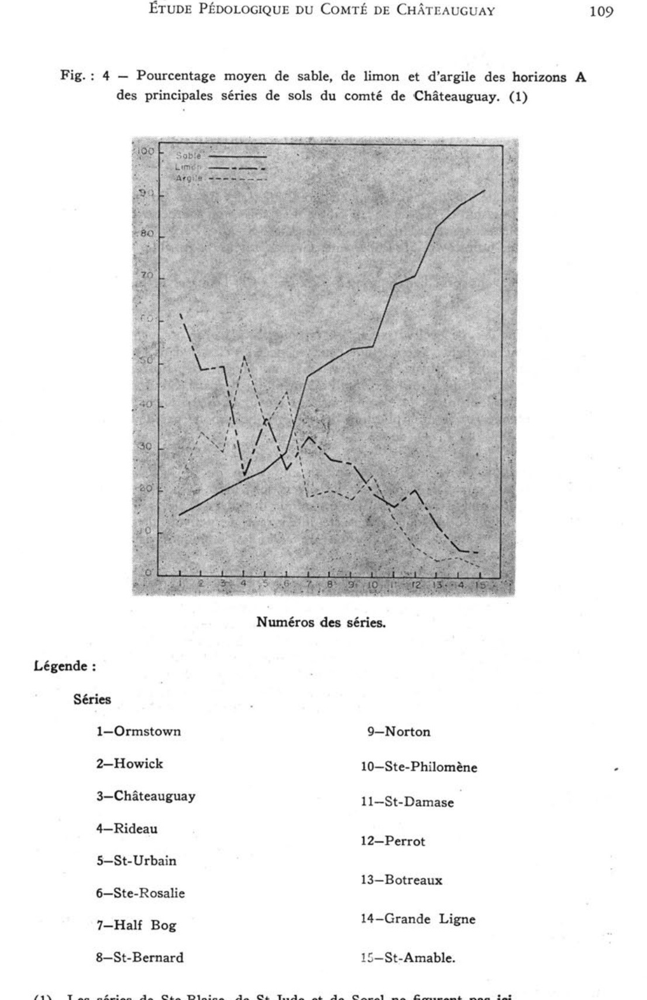
Fig. : 4 — Pourcentage moyen de sable, de limon et d'argile des horizons A des principales séries de sols du comté de Châteauguay. (1)
Sable
Limon
Argile
Numéros des séries.
Légende :
Séries
1–Ormstown
2–Howick
3–Châteauguay
4–Rideau
5–St-Urbain
6–Ste-Rosalie
7–Half Bog
8–St-Bernard
9–Norton
10–Ste-Philomène
11–St-Damase
12–Perrot
13–Botreaux
14–Grande Ligne
15–St-Amable
(1) Les séries de Ste-Blaise, de St-Jude et de Sorel ne figurent pas ici.
Étude Pédologique du Comté de Châteauguay
LA COMPOSITION CHIMIQUE DES SOLS (analyse totale)
AZOTE, CARBONE, MATIÈRE ORGANIQUE
Au point de vue de leur teneur en azote, les séries de sols du comté se classent, par ordre décroissant, de la façon suivante : Les sols semi-tourbeux non différenciés et les séries : Châteauguay, St. Urbain, St-Bernard, Ste-Rosalie, Perrot, Norton, Botreaux, Howick, Rideau, Ormstown, Ste-Philomène, Grande Ligne, St-Amable.
Nous n'avons pas d'analyses pour les séries : St-Damase, St-Jude, St-Blaise et Franklin.
Au point de vue de leur teneur en carbone, la place qu'occupent les différentes séries mentionnées ci-haut varie quelque peu. On peut les classer dans l'ordre décroissant suivant : les sols semi-tourbeux, les séries : Châteauguay, Perrot, Botreaux, St-Urbain, Norton, Howick, Rideau, Ormstown, Ste-Philomène, St-Bernard, Ste-Rosalie, St-Amable et Grande Ligne. L'ordre est le même pour leur teneur en matière organique, puis que celle-ci est obtenue par la multiplication des valeurs du carbone par un facteur conventionnel constant : 1.724 (58% de C).
L'évaluation de la matière organique au moyen de ce facteur de conversion n'en donne pas la quantité exacte pour les divers sols, parce que la teneur en carbone varie avec les différents types de matière organique des diverses séries. Pour caractériser davantage la matière organique, il eut été intéressant de pouvoir déterminer le taux d'humification, c'est-à-dire, la proportion de colloïdes humiques dans chacune des séries.
Le rapport C/N (voir tableau des analyses) des sols du comté varie de 9.4/1 et 16.7/1. Ce dernier rapport qui, sous des conditions naturelles, tend vers un équilibre, est sujet à des variations dans les sols cultivés. Comme la plupart des données se rapportent à ces derniers, les valeurs données au tableau des analyses n'ont qu'une valeur relative. Cependant, si nous nous rapportons à quelques échantillons de sols vierges, nous trouvons qu'un brun forestier (No. 20057) a un rapport de 11.5/1, qu'un podzol (No. 19120) a un rapport de 13.2/1, qu'un gley (No. 21780) a un rapport de 20.6/1. Des études supplémentaires s'avèrent nécessaires afin d'établir avec plus de précision le rapport C/N des divers sols en question.
La potasse.
Par ordre décroissant de leur taux de potasse, les séries de sols se classent comme suit : St-Bernard, Norton, Rideau, Grande Ligne, Howick, St-Urbain, Ste-Philomène, Ste-Rosalie, Ormstown, Châteauguay, les sols semi-tourbeux (Half Bog), Perrot, Botreaux et St-Amable.
Nous n'avons pas de données analytiques pour les séries de St-Jude, de St-Damase et de St-Blaise.
Notons que les séries de sols dérivés de till calcaire : St-Bernard et Norton ont une teneur très élevée en potasse.
Étude Pédologique du Comté de Châteauguay
Le Phosphore
Par rapport à leur richesse en phosphore, les séries peuvent être classées par ordre décroissant de la façon suivante :
1.—Les sols semi-tourbeux, 2.—Ste-Philomène, 3.—St-Bernard, 4.—St-Urbain,
5.—Ste-Rosalie, Howick, Rideau, 6.—Norton, 7.—Châteauguay, 8.—Ormstown,
9.—Grande Ligne et St-Amable, 10.—Perrot.
D'une façon générale, les podzols (séries de Perrot et de St-Amable) et les bruns forestiers (série de Grande Ligne) sont ceux qui contiennent le moins de phosphore total. D'autre part, il semble que les sols riches en matière organique sont ceux qui contiennent le plus de phosphore total. Cependant, fait surprenant à constater, ces sols, de l'avis des agronomes et les cultivateurs, répondent bien à des applications de phosphates.
Calcium et magnésium
En prenant comme base la teneur en calcium et en magnésium des horizons de surface (cultivés et vierges), les séries peuvent être classées dans l'ordre décroissant suivant : Semi-tourbeux non différenciés, Ste-Philomène, Châteauguay, St-Urbain, St-Bernard, Rideau, Ste-Rosalie, Howick, Norton, Ormstown, Grande Ligne, Botreaux, Perrot et St-Amable.
Nous n'avons pas de données analytiques pour les séries de St-Damase, de St-Jude, de St-Blaise et de Franklin.
D'une manière générale, les quantités totales de calcium et de magnésium réunies varient parallèlement à celles du calcium seul. Pour les sols de la série de Ste-Philomène et les semi-tourbeux non différenciés, la quantité totale de Ca et de Mg est nettement supérieure à celle des autres séries de sols du comté; en effet, elle est au-dessus de 13.5% pour les premiers, tandis qu'elle est généralement au-dessous de 5.8% pour les autres.
On remarque que les séries de sols ayant un caractère podzolique (séries de St-Amable : 0.58% et de Perrot : 1.0%) sont extrêmement pauvres en ces éléments. S'il est vrai de dire qu'il y a une certaine relation entre l'absence ou la très faible quantité d'éléments essentiels totaux et celle utilisable par les plantes, il ressort de l'examen des données analytiques, qu'il serait bon dans le choix des amendements calcaires, d'avoir recours de préférence à la chaux dolomitique.
Mentionnons que les sols de la série de Ste-Philomène, apparentés au point de vue morphologique aux gris-bruns podzoliques des Etats-Unis, ont dans leurs horizons superficiels une réaction et une teneur en calcium et en magnésium nettement supérieures à celles de ces derniers.
D'après les analyses présentées au tableau 14, les séries de Ste-Philomène et de Châteauguay et celle de St-Bernard, qui appartiennent respectivement aux gris-bruns podzoliques et aux bruns forestiers, ont des concentrations relativement fortes en calcium et en magnésium. Celles-ci reflètent sans doute chez ces sols une influence mar-
Étude Pédologique du Compté de Châteauguay
quée des roches-mères calcaires ou riches en chaux, ou, en d'autres termes, manifestent des caractéristiques intrazonales.*
Les séries de Ste-Philomène et de Châteauguay, que nous avons considérées au chapitre de la genèse des sols, comme appartenant aux gris-bruns podzoliques, d'après leur caractéristiques chimiques et morphologiques, seraient plutôt des gris-bruns podzoliques faiblement évolués. (Baril, 1948).
ÉTUDE DES CATIONS ÉCHANGEABLES.
L'argile colloïdale et les colloïdes organiques (humus) portent sur leurs micelles des quantités variables de cations. On désigne ceux-ci du nom de cations échangeables (hydrogène compris) parce qu'ils peuvent être remplacés par d'autres cations en présence de sols dissous. En d'autres termes, ces particules colloïdales donnent lieu, dans des conditions déterminées, à des phénomènes d'échange avec la solution du sol, jusqu'à l'obtention d'un point d'équilibre avec celle-ci.
On comprend facilement que la connaissance de la nature et de la teneur du sol en cations échangeables est très importante parce que ceux-ci, comme l'ont démontré plusieurs auteurs américains et européens, jouent un rôle de tout premier plan dans la nutrition des plantes et sur les propriétés physico-chimiques du sol.
La quantité d'éléments échangeables que peut contenir un sol est fonction du complexe absorbant dont la nature est déterminée par plusieurs facteurs, notamment le climat, la végétation, la roche-mère et le drainage.
Sous nos conditions humides dans Québec, l'eau chargée de gaz carbonique tend à appauvrir le sol en éléments basiques et achemine celui-ci vers la formation d'un sol podzolique, (Baril 1948). Sous ces conditions, les cations fixés sur les colloïdes (1) sont composés surtout de calcium et d'hydrogène, comme le font voir clairement la plupart des analyses rapportées au tableau No 14.
D'une manière générale, la teneur absolue de l'hydrogène échangeable et sa proportion, relativement aux autres cations du complexe absorbant, sont plus fortes pour les types génétiques plus podzolisés ou lessivés. Par contre, dans les divers horizons des bruns forestiers, et dans les horizons inférieurs des "gleys" et même dans certains horizons de podzols (série de Perrot avoisinant les formations calcaires) le magnésium échangeable domine l'hydrogène échangeable.
Etant donné que les conditions climatiques sont à peu près les mêmes pour le comté de Châteauguay, il est permis de conclure, sans crainte d'erreur, que les différences observées dans la constitution du complexe absorbant sont dues surtout aux différences observées dans la nature de la roche-mère et dans les conditions de topographie et de drainage. En d'autres termes, ces derniers facteurs auraient influencé l'évolution des sols un peu à la matière d'un prisme, en dispersant ou en concentrant les effets du climat dominant.
Afin de mieux élucider ce dernier point, nous avons comparé les diverses séries de sols entre elles. Les résultats de cette étude figurent dans les graphiques suivants, que nous commenterons brièvement. (Voir graph. no. 5, 6, 7, 8).
* Au moment de mettre sous presse, nous constatons que la même observation a été faite dans l'Etat de New York par le Dr. Marlin. G. Cline.
Soil. Sci. Vol. 68, Sept. 1949.
ÉTUDE PÉDOLOGIQUE DU COMTÉ DE CHÂTEAUGUAY 113
Le graphique de la figure 5 montre la relation qui existe entre le degré de saturation et le pH des diverses séries et types génétiques de sols du comté de Châteauguay.
Fig. 5—Graphique montrant la relation entre le degré de saturation et le pH des diverses séries et types génétiques de sols du comté de Châteauguay (1) (2).
Graphique pH / % ou degré de saturation en bases :
Axe vertical (pH) : de 3.5 à 8.0
Axe horizontal (% de saturation en bases) : de 10 à 100
Séries et types génétiques positionnés sur le graphique :
Types génétiques (abréviations) :
Podzol : P | Podzol à gley : PG | Brun podzolique : BP | Brun forestier : BF | Gris-brun podzolique : GBP | Gley : G | Glay humique : GH | Semi-tourbeux : (Half-Bog) ST | Non différenciés | Tourbeux (Terre noire) : T
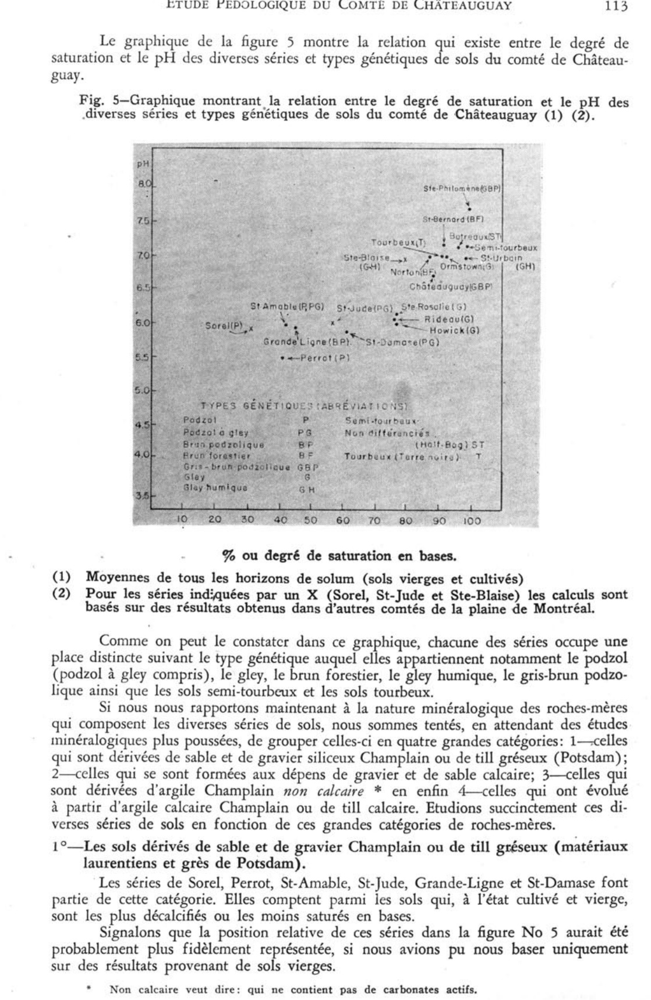
(1) Moyennes de tous les horizons de solum (sols vierges et cultivés)
(2) Pour les séries indiquées par un X (Sorel, St-Jude et Ste-Blaise) les calculs sont basés sur des résultats obtenus dans d'autres comtés de la plaine de Montréal.
Comme on peut le constater dans ce graphique, chacune des séries occupe une place distincte suivant le type génétique auquel elles appartiennent notamment le podzol (podzol à gley compris), le gley, le brun forestier, le gley humique, le gris-brun podzolique ainsi que les sols semi-tourbeux et les sols tourbeux.
Si nous nous rapportons maintenant à la nature minéralogique des roches-mères qui composent les diverses séries de sols, nous sommes tentés, en attendant des études minéralogiques plus poussées, de grouper celles-ci en quatre grandes catégories: 1—celles qui sont dérivées de sable et de gravier siliceux Champlain ou de till gréseux (Potsdam); 2—celles qui se sont formées aux dépens de gravier et de sable calcaire; 3—celles qui sont dérivées d'argile Champlain non calcaire * en enfin 4—celles qui ont évolué à partir d'argile calcaire Champlain ou de till calcaire. Etudions succinctement ces diverses séries de sols en fonction de ces grandes catégories de roches-mères.
1°—Les sols dérivés de sable et de gravier Champlain ou de till gréseux (matériaux laurentiens et grès de Potsdam).
Les séries de Sorel, Perrot, St-Amable, St-Jude, Grande-Ligne et St-Damase font partie de cette catégorie. Elles comptent parmi les sols qui, à l'état cultivé et vierge, sont les plus décalcifiés ou les moins saturés en bases.
Signalons que la position relative de ces séries dans la figure No 5 aurait été probablement plus fidèlement représentée, si nous avions pu nous baser uniquement sur des résultats provenant de sols vierges.
* Non calcaire veut dire: qui ne contient pas de carbonates actifs.
Notons cependant, comme l'a fait remarquer Demolon (1948), que la capacité d'absorption des sols dépasse de beaucoup les doses d'engrais les plus élevées employées dans la pratique. De plus, nous avons tenu compte de tout le solum; il en résulte donc que les variations de la composition du complexe absorbant, dues à l'application d'engrais minéraux, demeurent fort probablement insignifiantes. L'addition de chaux, par ailleurs, peut modifier le pH et le degré de saturation du sol, mais ne modifie en rien la relation pH-degré de saturation qui pour des techniques d'analyse appropriées et comparables, est fonction principalement de la nature du complexe absorbant (Mehlich A., 1942).
2°—Les sols dérivés de sable et de gravier calcaire (Trenton, Chazy, Beekmantown).
Cette deuxième catégorie ne compte qu'une seule série: Ste-Philomène. Il est évident d'après la figure No 5 que la forte influence calcaire des matériaux du sol se fait sentir par un pH élevé et par un fort degré de saturation en bases. Notons en passant, que ce n'est aussi que sur des dépôts semblables, c.a.d., fortement calcaires que se développent sous nos conditions humides, les caractéristiques morphologiques des gris-bruns podzoliques. Il y aurait donc lieu de considérer ce type comme un type zonal en position intrazonale, c.a.d., en dehors de sa zone climatique proprement dite (Cline M. G., 1949) et Stobbe, P.C. (travaux inédits).
3°—Les sols dérivés d'argile Champlain non calcaire.
Cette troisième catégorie comprend les séries de Ste-Rosalie, de Rideau, et d'Howick. Il est facile de se rendre compte par la figure No. 5 que ces diverses séries, pour un pH à peu près identique à celui de celles formées sur roches-mères acides, précédemment mentionnées, contiennent une proportion beaucoup plus forte d'éléments basiques.
Par ailleurs, les valeurs obtenues pour les bases échangeables d'un seul profil de sol vierge (voir numéros 21780 à 21783 inclusivement) de l'argile de Ste-Rosalie nous révèlent que les horizons A1 et A2G sont passablement décalciés comparativement aux autres horizons du profil. Cette constatation, de même que celle de la coloration nettement grise de l'horizon de réduction désignée ici par A2G, nous font présumer un début de podzolisation dans ce profil. Les phénomènes de réduction chimique et de podzolisation ne sont pas incompatibles; mais au contraire, il semble bien d'après Jackson, Bourbeau et autres chercheurs (1948) que les phénomènes de réduction dominent dans le processus de podzolisation.
Quoi qu'il en soit, l'addition de chaux dans la pratique s'avère indispensable à une meilleure pousse des légumineuses, spécialement la luzerne.
4°—Les sols dérivés d'argile calcaire Champlain ou de till calcaire.
Cette quatrième catégorie comprend les séries suivantes: St-Bernard, Châteauguay, St-Blaise, Norton, Ormstown, St-Urbain, Botreaux et les sols tourbeux ou semi-tourbeux non différenciés en séries et reposant sur un substratum calcaire.
La figure No. 5 nous fait voir que ces séries de sols comptent parmi les plus riches du comté en éléments basiques. Ils appartiennent, comme nous l'avons mentionné précédemment, aux groupes des bruns forestiers peu ou pas lessivés, des gris-bruns podzoliques, des gleys humifères des sols semi-tourbeux et tourbeux.
(1) D'après Bourbeau, la fraction limon posséderait elle aussi une forte capacité d'échange (cf. Bourbeau, thèse de doctorat. Université de Wisconsin).
De l'ensemble de ces données, c.a.d., celles qui apparaissent dans la figure 5 (relation entre le pH et le degré de saturation) et celles consignées au tableau des analyses, on peut présumer que les colloïdes minéraux de nos diverses séries appartiennent à des types différents de colloïdes minéraux. La fraction fine ou colloidale des séries appartenant à la première catégorie de roches-mères déjà mentionnée contiendrait des minéraux primaires peu altérés et finement divisés et des minéraux argileux apparentés au type dit 1:1, c'est-à-dire, celui dont le réseau moléculaire est constitué d'un feuillet de silice (un atome de Si entouré de 4 atomes d'O en position tétraédrique) et d'un feuillet d'alumine (un atome d'Al entouré de 6 OH avec un arrangement octaédrique); tandis que celle de la deuxième, de la troisième et de la quatrième catégorie renfermeraient, probablement avec une certaine proportion de minéraux primaires finement divisés, des minéraux argileux apparentés au type 2:1, c'est-à-dire, à celui dans lequel deux feuillets de silice sont séparés par un feuillet d'alumine. Ces derniers types de colloïdes (v.g. illite, montmorillonite, etc.) ont une capacité d'échange de beaucoup supérieure à celle des colloïdes du type 1:1 (v.g. kaolinite).
Pour le tracé du graphique No. 5, nous avions pris comme base les divers horizons du solum. Etant donné que les colloïdes sont parfois de nature différente dans les divers horizons d'un même profil, nous avons tracé un autre graphique (voir figure 6) où figurent la relation pH-degré de saturation, pour un seul et même horizon de plusieurs profils de sols.
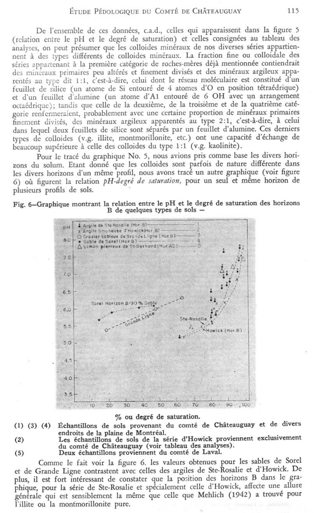
Fig. 6.—Graphique montrant la relation entre le pH et le degré de saturation des horizons B de quelques types de sols —
(1) (3) (4) Échantillons de sols provenant du comté de Châteauguay et de divers endroits de la plaine de Montréal.
(2) Les échantillons de sols de la série d'Howick proviennent exclusivement du comté de Châteauguay (voir tableau des analyses).
(5) Deux échantillons proviennent du comté de Laval.
Comme le fait voir la figure 6, les valeurs obtenues pour les sables de Sorel et de Grande Ligne contrastent avec celles des argiles de Ste-Rosalie et d'Howick. De plus, il est fort intéressant de constater que la position des horizons B dans le graphique, pour la série de Ste-Rosalie et spécialement celle d'Howick, affecte une allure générale qui est sensiblement la même que celle que Mehlich (1942) a trouvé pour l'illite ou la montmorillonite pure.
ÉTUDE PÉDOLOGIQUE DU COMTÉ DE CHÂTEAUGUAY
Notons que d'une manière générale, la courbe de la relation pH-degré de saturation est constante et spécifique de chacun des minéraux argileux. Par ailleurs, dans le cas de la montmorillonite et de l'illite, cette relation est semblable et ne peut servir de critère pour distinguer entre eux ces deux minéraux argileux. Ajoutons, cependant, que, bien qu'ils appartiennent tous deux au type structural 2:1, l'illite contient une forte proportion de potassium et une capacité d'échange (bases) inférieure à celle de la montmorillonite.
L'allure générale des courbes étudiées, ainsi que les capacités d'échange plutôt faibles, nous font présumer que l'illite est probablement le type de colloïde prédominant dans ces séries argileuses ou dérivées de matériaux calcaires. Nous nous réservons de revenir plus tard sur ce point; pour le moment, nous ne pouvons, à l'aide de ces données fragmentaires, que signaler certaines tendances qui, nous l'espérons, se préciseront avec le temps.
De plus, mentionnons que la présence à l'état colloïdal d'humus et de sesquioxydes de fer et d'alumine dans les podzols, affecte considérablement l'allure de la courbe pH-degré de saturation (voir fig. 6). Il en résulte qu'une courbe d'un horizon est souvent l'expression non pas d'un type, mais d'un groupe de colloïdes. C'est probablement pour cette raison que la courbe des horizons B des séries de Sorel et de Grande Ligne, tend à s'infléchir et montre une certaine action tampon aux divers pH; ce qui est plutôt anormal pour la kaolinite ou pour certains minéraux argileux du type 1:1.
Fig. 7–Graphique montrant la relation entre le pH, l'hydrogène échangeable et le besoin en chaux des diverses séries de sols du comté de Châteauguay (1) (2).
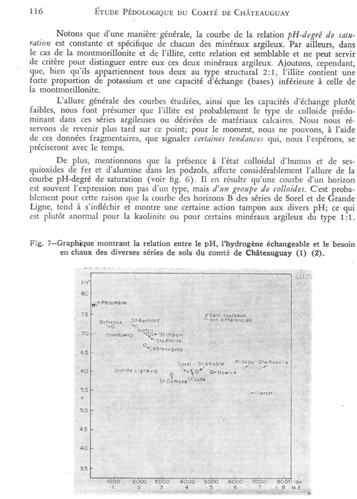
Besoin en chaux (lbs. de Ca CO3/acre) Hydrogène échangeable (M.e./100 grammes de terre)
Moyenne de tous les horizons du solum (sols cultivés et vierges). Le calcul des moyennes des trois séries indiquées par un X est basé sur les résultats obtenus dans d'autres comtés de la plaine de Montréal.
Besoin en chaux=lbs de Ca CO3 pour saturer entièrement tout l'hydrogène échangeable déplacé par une solution neutre (pH7.0) d'acétate de barium. (nombre de milliéq. d'Hx1000 donne le besoin en chaux).
ÉTUDE PÉDOLOGIQUE DU COMTÉ DE CHÂTEAUGUAY
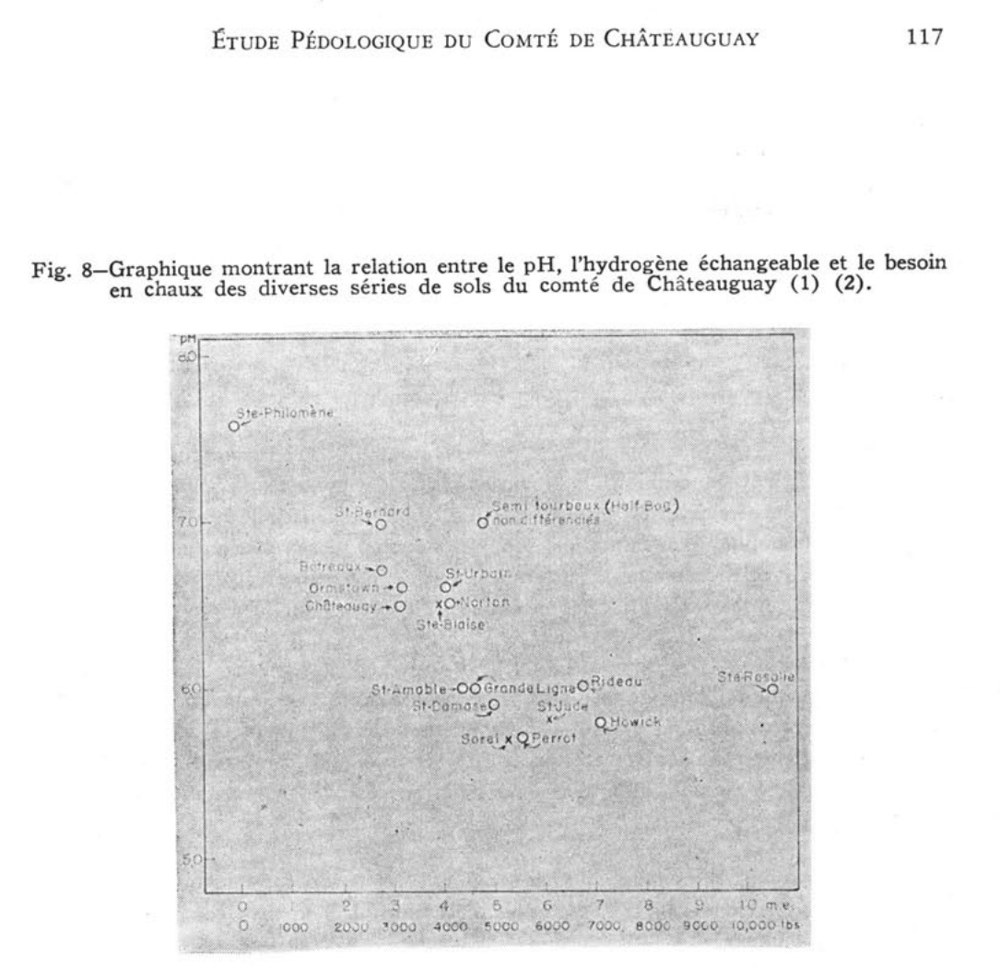
Fig. 8 — Graphique montrant la relation entre le pH, l'hydrogène échangeable et le besoin en chaux des diverses séries de sols du comté de Châteauguay (1) (2).
Hydrogène échangeable (Milliéquivalents/100 grammes de terre). Besoin en chaux = lbs de CaCO3/acre = milliéquivalents d'H+ x 1000
Moyenne des horizons A (sols cultivés et vierges). Le calcul des moyennes des trois séries marquées d'un x est basé sur les résultats obtenus dans d'autres comtés de la plaine de Montréal.
Besoin en chaux = lbs de CaCO3/acre pour CORRIGER l'acidité du sol (pH 7.0).
Par ailleurs, un coup d'oeil sur le tableau des analyses nous permet de constater que la capacité de saturation des divers horizons des séries: St-Amable, Grande Ligne, Perrot (exception faite de l'horizon A) et St-Damase (exception faite de l'horizon argileux D), est souvent extrêmement basse. Ces constatations générales nous portent à croire que la fraction colloïdale de certains horizons, notamment les horizons A2 du St-Amable et probablement ceux de la plupart de nos podzols dérivés de matériaux laurentiens, est constituée de minéraux primaires "moulus" pour employer une expression du Docteur Bourbeau, ou existe en mélange avec des colloïdes dont le stage ou degré de "weathering" est relativement peu avancé. Comme le fait remarquer le Docteur Bourbeau, ce n'est qu'à la suite d'analyses minéralogiques précises et nombreuses que nous pourrons trouver la clef de cette énigme.
Les graphiques des figures 7 et 8 nous montrent la relation qui existe entre le pH, l'hydrogène échangeable et le besoin en chaux des horizons du solum ou de l'horizon A seulement des diverses séries de sols du comté de Châteauguay. Les valeurs qui apparaissent au graphique de la figure 7 sont en relation à peu près inverse avec celles de la figure 5. Cette relation n'est pas parfaite, parce que la teneur en hydrogène échangeable n'a pas été calculée en pourcentage, comme c'est le cas pour le degré de saturation, dans la figure 5.
D'après le graphique de la figure 7, on peut déduire que l'horizon A de l'argile de Ste-Rosalie, à cause de la nature et de la quantité de son humus et de ses colloïdes minéraux, contient, comparativement aux autres séries de sols, beaucoup d'hydrogène échangeable; ce qui signifie, que son besoin en chaux est comparativement beaucoup plus élevé.
Si l'on compare les graphiques des figures 7 et 8, on constate que les besoins en chaux, d'une manière générale, sont plus élevés lorsque l'on tient compte seulement de l'horizon d'humus.
Ajoutons que les valeurs mentionnées pour le besoin en chaux ne correspondent pas nécessairement aux doses d'amendements calcaires recommandées dans la pratique.
BIBLIOGRAPHIE
Aubert, G., 1948 — Voir “La dynamique du sol” — par Demolon, p. 35, 56.
Baril, R., 1943, — Cartographie des sols de la plaine de Montréal d'après le système américain. Annales de l'Acfas, vol. 9, p. 126.
Baril, R., 1946, — La clé des sols du comté de Châteauguay. Annales de l'Acfas, vol. 12, p. 88.
Blanchard, Raoul, 1939, — La Plaine de Montréal — Extrait de la “Revue de géographie Alpine” — Grenoble -- Institut de géographie alpine. — France.
Bureau Fédéral de la Statistique, 1946 -- Huitième recensement du Canada, 1941. — Section agricole. Voir aussi sixième et septième recensement (1921 et 1931).
Chandler, R. F., 1942 — The time required for podzol profile formation as evidenced by the Mendenhall Glacial deposits near Juneau, Alaska. — p. 454 — Soil Sc. Soc. Am. Proc.
Dansereau, Pierre, — 1943 — L'érablière laurentienne — I — Valeur indice des espèces — Contribution de l'Institut Botanique de Montréal, no 45.
Dansereau, Pierre, — 1945 — Les conditions de l'acésriculture-Bull. no 1 du service de biogéographie — Univ. de Montréal. Voir aussi revue Agriculture nos I, II, III et IV, 1945.
Dansereau, Pierre — 1946 — L'érablière laurentienne — II — Les successions et leurs indicateurs. Contribution de l'Institut Botanique — Univ. de Montréal No 60.
Dansereau, Pierre — 1948 — Notes bioclimatiques sur la plaine de Montréal — Annales de l'Acfas, vol. 14, pp. 86-87.
Dresser, J. S. & Denis, T. C. 1946 — La géologie de Québec; Vol. II, géologie descriptive. Ministère des Mines de Québec, Rapport géologique No. 20.
Erhart, H. 1935 — Traité de pédologie (Tomes I et II).
Goudge, M. F. — 1935. — Traité de pédologie, (Tomes I et II).
Groulx, l'abbé Lionel — 1913. — Petite histoire de Salaberry de Valleyfield. Montréal. Librairie Beauchemin — 31 p. in 8.
Jackson, Tyler, Bourbeau et alii — 1948. — Weathering Sequence of Clay-Size Minerals in Soils and Sediments — Journal of Physical & Colloid Chemistry, vol. 52, no. 7.
Keele, J. Cole, L. H. — Rapport sur les matériaux de construction du fleuve St-Laurent et Prescott (Ont.) et Lachine (Qué.). Ministère des Mines — Ottawa.
Létourneau, F. — 1946. — Le comité de Nicolet — Éditions Fides — Montréal.
Lutz & Chandler — 1947. — Forest Soils— John Wiley & Sons — New-York or Chapman & Hall — London.
Mailloux, A. — 1943. — Géomorphologie des dépôts superficiels de Châteauguay. Annales de l'Acfas, vol. 9, p. 100.
Mailloux, A. Baril, R. — 1944. — Géologie physique du comté de Châteauguay. Annales de l'Acfas, vol. 10, p. 83.
Mehlich, A. — 1942. — Base saturation and pH in relation to liming and nutrients conservation of soils — Soil Sc. Soc. Am. Proc., Vol. 7, p. 353.
Mehlich, A. — 1942. — The significance of % base saturation and PH in relation to soil differences. Soil Sci. Soc. Am. Proc., vol. 7, p. 167.
Mechlich, A. Coldwell, W. E. — 1943. — Influence of soil colloids and the degree of base saturation on growth and nutrient uptake by cotton and soybeans. Soil Sci. Soc. Am. Proc. vol. 8, p. 179, 1943.
Milne, G. — 1935. — Some suggested units of classification and mapping — Soils Res. tome IV, p. 183.
Morin, L. G., — Laverdière, J. W. — 1940. — Initiation à la géologie. Ed. Fides.
Morin, L. G. — 1944. — Géologie du comté de Châteauguay, P. Q. Annales de l'Acfas, vol. 10, p. 78.
Osborne, F. Fitz — 1949. — Marine Crevasse Fillings and the Parc des Laurentides Ice Cap, Quebec. (manuscript). Faculté des Sciences — Université Laval — Québec.
Rapports des Sols : 1–Soil Survey of Carleton County, province of Ontario, by G. A. Hills and R. R. Richards, Exp. Farm Service, and F. F. Morwick, Ont. Agric. College, Guelf Ont. 1944.
2–Etudes des Sols des Comtés de Shefford, Brome, et Missisquoi, par D. B. Cann, P. Lavoie et P. C. Stobbe, Service des fermes expérimentales, Min. Féd. de l'Agric. en collaboration avec le Min. de l'Agriculture de Québec et le collège McDonald. 1948.
3–Etudes des sols des comtés de Stanstead, Richmond, Sherbrooke et Compton. — 1943 — par D. B. Cann et P. Lajoie, Service des fermes expérimentales, Ministère fédéral de l'agriculture en collaboration avec le ministère de l'agriculture de Québec et le collège Macdonald.
4–Etude des Sols du Comté de Nicolet par Lucien Choinière et Léonard Laplante, agronomes, Bulletin technique No. 1 — 1948 — Division des Sols, Ministère provincial de l'Agriculture.
Ringuet — 1943 — Un monde était leur empire — Edition Fides — Montréal.
Soeurs Grises, Rév. — 1933 — Voir Hôpital Général des Soeurs de la Charité, par une religieuse de cette communauté. Tome I (1915) et tome II.
Stobbe, P. C. — 1945 — Proceedings of the 1st. conference of the National soil survey committee, held at central experimental farm — Ottawa — Canada. Voir aussi les divers rapports des sols de cet auteur ainsi que ceux faits en collaboration avec MM. Cann et Lajoie — publications du ministère fédéral de l'Agriculture — Ottawa.
Stobbe P. C. — 1948 — Proceedings of the 2nd conference of the National soil survey committe, held at Guelf, June (1948).
U.S.D.A. — 1938 — Soils and Men, Yearbook of Agriculture.
Villeneuve G. O. — 1946 — Climatic conditions of the province of Quebec and their relationship to the forest — Bull. No. 6, Dept' of Lands and Forests — Québec, P. Q.
Wilson, A. E. — 1946 — Geology of the Ottawa — St–Lawrence Lowlands, Ontario and Quebec. Mem. 241 Department of Mines and Resources — Ottawa.
GLOSSAIRE
Azonal
Sol dépourvu de caractéristiques bien définies, soit à cause de sa jeunesse, soit à cause de conditions particulières de roche-mère et de relief, qui ont empêché le développement de caractères bien définis.
Catena
Du latin: catena (chaîne). Désigne un groupe de sols formés aux dépens d'une roche-mère semblable, mais qui, à cause de différences dans les conditions de relief et de drainage, diffèrent par les caractères de leurs profils.
Colloïdes
Particules de très petites dimensions. Les particules argileuses sont des colloïdes inorganiques et celles de l'humus des colloïdes organiques.
Complexe
Association composée de plusieurs séries, types ou phases de sols, qui sont habituellement trop entremêlés pour être convenablement indiqués à l'échelle des cartes de sols utilisées.
Drift
Ensemble de matériaux d'origine glaciaire qui ont été transportés d'un endroit à un autre, où ils se sont déposés. Il comprend les dépôts glaciaires stratifiés (Kames eskers) et non stratifiés (tills).
Drumlin
Colline de forme ovale constituée de drift glaciaire, normalement compact et non stratifié. L'orientation du drumlin correspond généralement à celle de la course du glacier.
Érosion
On donne le nom à l'action abrasive des eaux de ruissellement, du vent et de la glace, ou à l'entraînement par ceux-ci des particules du sol, à la surface de la terre.
On distingue trois sortes d'érosion:
L'érosion "en nappe": Départ d'une couche plus ou moins uniforme de matériaux de la surface de la terre.
L'érosion "en rigolets": Formation par l'eau de canaux assez petits pour qu'ils puissent disparaître au passage de la charrue.
L'érosion "en ravins": Formation de canaux plus larges que les rigolets.
Fertilité
Qualité qui permet au sol de fournir les composés appropriés, en quantités requises et bien balancées, pour la croissance de plantes particulières, quand les autres facteurs, tels la lumière, la température et les conditions physiques du sol sont favorables.
Fluvio-glaciaire
Matériaux déposés par des cours d'eau glaciaires.
Gley
Horizon dont les matériaux ont été modifiés par l'alternance des phénomènes d'oxydation et de réduction, due aux fluctuations de la nappe phréatique. Il est fréquemment moucheté de brun-rouille et souvent constitué de matériaux de couleur gris-bleue ou gris olive, plus ou moins collants, compacts et souvent sans structure. On donne aussi le nom de "Gleys" aux sols caractérisés principalement par un ou plusieurs horizons de gley (prononcer: glè).
Hardpan
Horizon induré ou cimenté. Cette cimentation par l'oxyde de fer, la matière organique, la silice, le carbonate de calcium ou autres substances peut se produire dans les sols indépendamment de leur texture.
Horizon
Couche de sol presque parallèle à la surface du terrain, dont les caractéristiques plus ou moins définies, se sont développées au cours des processus d'édification du sol.
Humus
Partie bien décomposée et plus ou moins stable de la matière organique du sol.
Intrazonal
On appelle ainsi tout groupe de sols possédant des caractéristiques plus ou moins bien développées, qui reflètent l'influence dominante de quelque facteur local de relief, de roche-mère ou d'âge, sur l'effet normal du climat et de la végétation.
Matériaux deltaiques
Matériaux constitués de sable et de limon charriés par les cours d'eau dans les lacs ou autres grandes étendues d'eau, où ils se sont déposés de façon à former un delta.
Matériaux lacustres
Matériaux déposés par les eaux des lacs.
Matériaux siliceux
Matériaux ayant un fort pourcentage de silice, tels les grès, les granits, les gneiss, etc.
Mor
Couche d'humus constituée de matière organique non incorporée, dont la ligne de démarcation avec le sol minéral est nette. Plus acide que le "mull". Prédominance des fungi. Pas de nitrification.
Mull
Couche d'humus dans laquelle la matière organique est mélangée à la matière minérale. De ce fait, la ligne de démarcation avec le sol minéral est diffuse. Cet humus est de structure granulaire ou en miettes; il est moins acide que le "mor". Nitrification. Prédominance des bactéries.
Nappe phréatique (Water table)
Se dit d'une nappe d'eau ayant un lit sous-terrain; sa limite supérieure est cette partie du sol ou du matériel sous-jacent, qui est complètement saturée d'eau.
Orterde
Couche dure de même nature que l'ortstein, mais non fermement cimentée.
Ortstein
Matériel sableux, dur, de cimentation irrégulière, jaune foncé ou presque noir, qui se forme à la partie inférieure du solum, par suite du processus de formation du sol.
Pédo-climax
Par ce terme les pédologues désignent les sols en équilibre apparent avec le climat et la végétation.
Pétrographie
Qui a trait aux caractéristiques structurales, minéralogiques et chimiques des roches.
Phase — Sous-types ou sous-unités de sols qui présentent, en regard des caractéristiques normales du type, des variations mineures utilisées en classification, et qui toutefois peuvent être d'une importance pratique. Ces variations existent surtout dans des caractéristiques externes telles, la quantité de pierres, ou l'érosion accélérée.
Ph — Notation employée pour désigner une acidité relativement faible et l'alcalinité. Un pH: 7.0 indique la neutralité exacte; des valeurs plus grandes indiquent l'alcalinité et des valeurs plus petites l'acidité.
Physiographie — Description des traits physiques de la surface de la terre.
Podzolisation — Terme général désignant ce procédé (ou ces procédés) par lequel les sols sont appauvris en bases, deviennent acides et développent des horizons A éluviaux (couches supérieures lessivées) et des horizons B illuviaux (horizons inférieurs d'accumulation).
Productivité — Capacité pour un sol de produire une plante particulière ou un groupe de plantes, sous un système de culture ou d'exploitation spécifiques.
Profil — Section verticale dans les sols, allant de la surface à la roche-mère, dans son état inaltéré et qui en montre tous les horizons.
Réaction — Degré d'acidité ou d'alcalinité du sol exprimé par les valeurs du pH ou par des termes, comme suit: extrêmement acide... pH: 4.5.
Relief — Élévation ou inégalité de la surface du terrain considéré dans l'ensemble. On en distingue deux sortes: 1- le micro-relief ou configurations mineures de surface telles, les tertres et buttes peu élevés et les petites dépressions. 2- le macro-relief ou configurations majeures de surface telles, les montagnes, les grandes pentes et les dépressions importantes.
Roche-mère — Masse de matériaux non consolidés à partir desquels le profil du sol s'est développé.
Série — Groupe de sols dont les horizons génétiques sont semblables, en ce qui concerne leurs caractéristiques distinctives et l'arrangement de leur profil, sauf pour la texture de la surface, et qui sont formés aux dépens d'un type particulier de roche-mère.
Sol — Corps naturel à la surface de la terre, dans lequel croissent les plantes, et qui est composé de matières organiques et minérales.
Sol organique — Terme général se rapportant à tout sol dont la partie solide est composée principalement de matières organiques.
Sol minéral — Terme général se rapportant à tout sol dans lequel la matière minérale prédomine.
Sol mûr — Sol présentant des caractères bien développées, produites par les processus naturels de formation du sol et qui apparemment a atteint un point d'équilibre terminal, dit climax, avec le milieu climato-écologique dans lequel il a évolué.
Solum — On désigne ainsi la partie supérieure du profil du sol: celle située au-dessus de la roche-mère et qui est le siège des processus de formation du sol. Dans les sols mûrs, il comprend les horizons A et B, et la nature de ces matériaux peut être et est généralement très différente de celle de la roche-mère sous-jacente. Les racines vivantes et les processus biologiques sont apparemment presqu'entièrement confinés au solum.
Stratifié — Arrangé en couches ou strates, comme les alluvions stratifiées. Ce terme s'applique aux matériaux géologiques.
Dans les sols, les couches provenant du processus de formation du sol sont appelées horizons, tandis que celles dérivées de la roche-mère sont appelées strates.
Structure — Agrégats morphologiques qui sont un arrangement des particules individuelles du sol.
Terre noire (muck) — Dépôts organiques moyennement bien décomposés, de couleur noire, dont la teneur en minéraux est relativement élevée et qui se sont accumulés à la faveur de mauvaises conditions de drainage.
Till — Dépôt non stratifié de terre: sable, gravier et cailloux transportés par les glaciers.
Type — Groupe de sols dont les horizons génétiques sont semblables, en ce qui concerne leurs caractéristiques distinctives, y compris la texture et l'arrangement du profil, et formés aux dépens d'un type particulier de roche-mère.
Type génétique (Great soil group) — Groupe de sols ayant des caractéristiques internes communes: 1-Au sein des sols zonaux, chaque type génétique comprend les sols dont les caractéristiques internes communes reflètent l'influence de forces environnantes de signification géographique générale, particulièrement la végétation et le climat. 2-Au sein des sols intrazonaux, chaque type génétique comprend les sols ayant des caractéristiques internes communes, qui se sont développées, grâce à l'influence de forces environnantes de signification à la fois locale et générale.
3-Au sein des sols azonaux, chaque type génétique comprend des sols semblables, dépourvus de caractéristiques développées, à cause de quelque condition locale de relief et de roche-mère.
"Weathering" — Décomposition des roches et des minéraux sous l'influence des agents climatiques. Cette décomposition est à la fois physique (désagrégation) et chimique (altération).
Zonaux — On nomme ainsi tous les grands groupes de sols, ayant des caractéristiques bien développées et reflétant l'influence des facteurs actifs de la génèse du sol: climat, organismes vivants, et végétation surtout.
Références :
Soils and Men, yearbook of agriculture — 1938 — U.S.D.A.
Soil Survey of Carleton County, province of Ontario, by G. A. Hills and R. R. Richards, Exp. Farms Service, and F. F. Morwick, Ont. Agric. College, Guelph, Ont. 1944.
Étud. des Sols du Comté de Nicolet par Lucien Choinière et Léonard Plante, agronomes. Bulletín technique No. 1 — 1948 — Division des Sols, Ministère provincial de l'Agriculture.
Les photographies ont été fournies par le Service de Ciné-photographie de l'Office provincial de publicité.
L'image fournie est entièrement blanche (aucun texte, tableau ou illustration n'y figure). Par conséquent, il n'y a aucun contenu à transcrire.
Si vous disposez d'une autre image contenant des données textuelles ou des tableaux pédologiques, veuillez la soumettre et je me ferai un plaisir d'effectuer la transcription HTML selon vos directives.